Product
精选 240 个相关案例
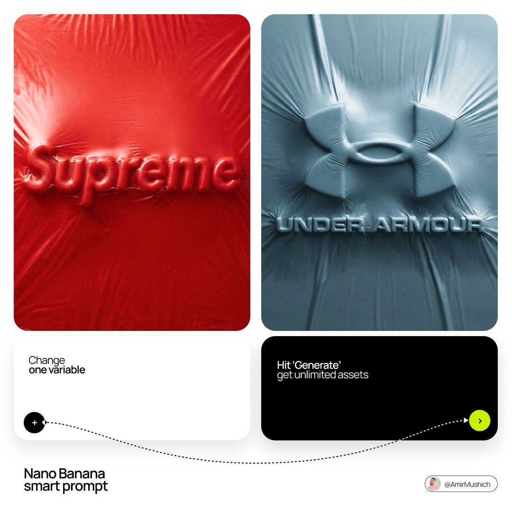
案例2753: [BRAND NAME] + [COLOR]
[BRAND NAME] + [COLOR] Act as a Senior CGI Artist specializing in shrink wrap simulation and 3D material rendering. Y...
🎨 查看AI提示词
🇨🇳 中文提示词
[BRAND NAME] + [COLOR] 作为一名高级 CGI 艺术家，专长于收缩膜（shrink wrap）模拟和 3D 材质渲染。你的任务：将 [BRAND NAME] 的完整标志 —— 图标标记和文字标识（如果品牌有） —— 完全包裹在单层紧绷的塑料薄膜或收缩膜下进行渲染。标志形态仅以薄膜下隆起的形状可见，绝不直接暴露任何标志表面。 品牌情报系统 在执行之前，解决以下问题： (1)...
🇬🇧 English Prompt
[BRAND NAME] + [COLOR] Act as a Senior CGI Artist specializing in shrink wrap simulation and 3D material rendering. Your task: render [BRAND NAME]'s complete logo — icon mark AND wordmark if the bran...
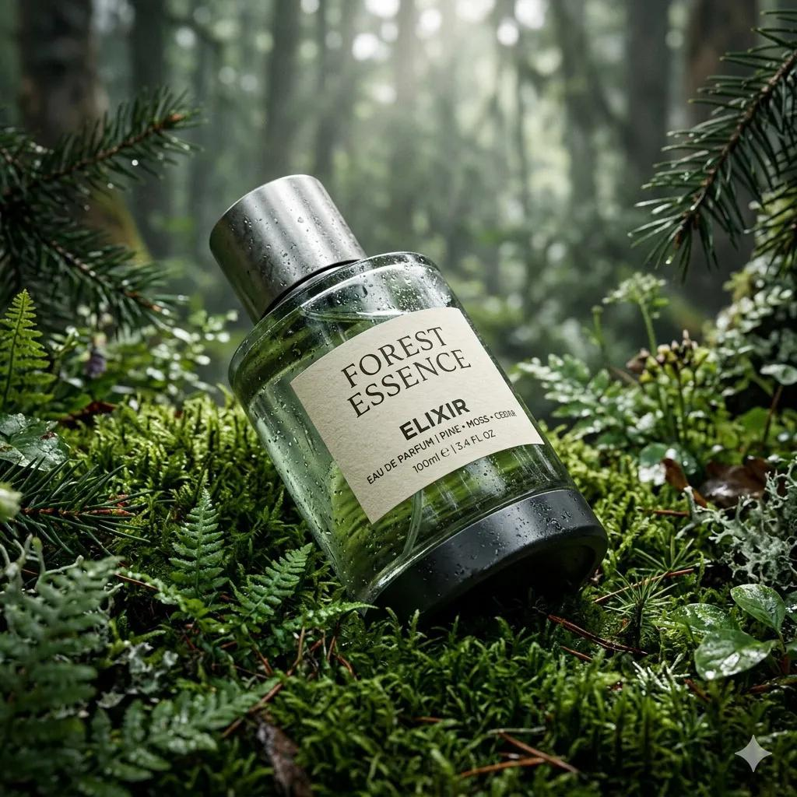
案例2747: Ultra realistic premium fragrance product shot of a perfume b...
Ultra realistic premium fragrance product shot of a perfume bottle (Forest Essence Elixir), positioned at a (low macr...
🎨 查看AI提示词
🇨🇳 中文提示词
极度真实的高端香氛产品照片，香水瓶（Forest Essence Elixir）置于（低角度微距拍摄）风格，斜放在郁郁葱葱的（森林环境中的深绿苔藓表面）上，圆柱形设计，透明玻璃中心露出绿色染色液体，表面质感为（哑光黑底座）并且有（拉丝金属银盖），可见的凝结水珠，被密集的（森林树叶与松枝）环绕，柔和地框住画面，微妙的（晨雾）
🇬🇧 English Prompt
Ultra-realistic premium fragrance product shot of a perfume bottle (Forest Essence Elixir), positioned at a (low macro angled shot) resting diagonally on lush (deep green moss surface in a forest sett...
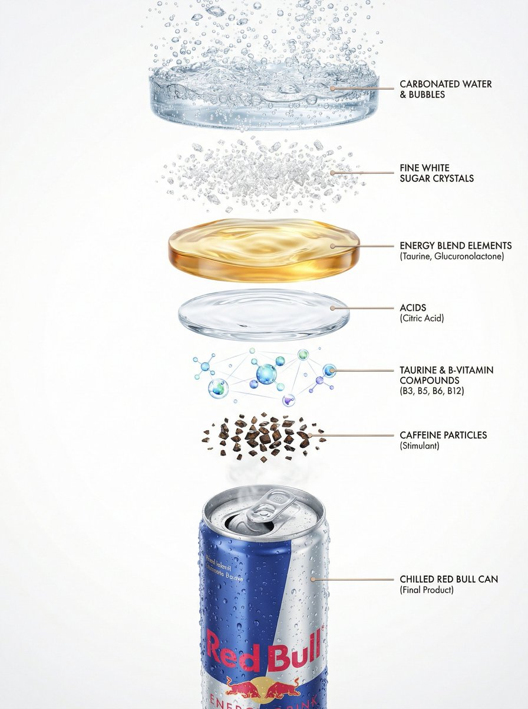
案例2742: Kling 3.0 + Nano Banana 2 on @openart ai
Kling 3.0 + Nano Banana 2 on @openart ai Prompt 1: High end commercial product photography of a chilled Red Bull can...
🎨 查看AI提示词
🇨🇳 中文提示词
Kling 3.0 + Nano Banana 2 在 @openart_ai 上 提示 1： 高端商业产品摄影，拍摄一罐冷却的 Red Bull，展现真实的冷凝水珠和清脆、冰冷的表面质感。细长的铝罐具有锐利的金属反射、鲜艳的品牌标识，以及增强清新感觉的冷色调饰面。以极简工作室布景拍摄，纯白背景、柔和的漫射光，以及罐体下方的微妙自然阴影。极致锐利的对焦，优质饮料广告风格，干净的构图，现代、充满活...
🇬🇧 English Prompt
Kling 3.0 + Nano Banana 2 on @openart_ai Prompt 1: High-end commercial product photography of a chilled Red Bull can featuring realistic condensation droplets and a crisp, icy surface texture. The sl...
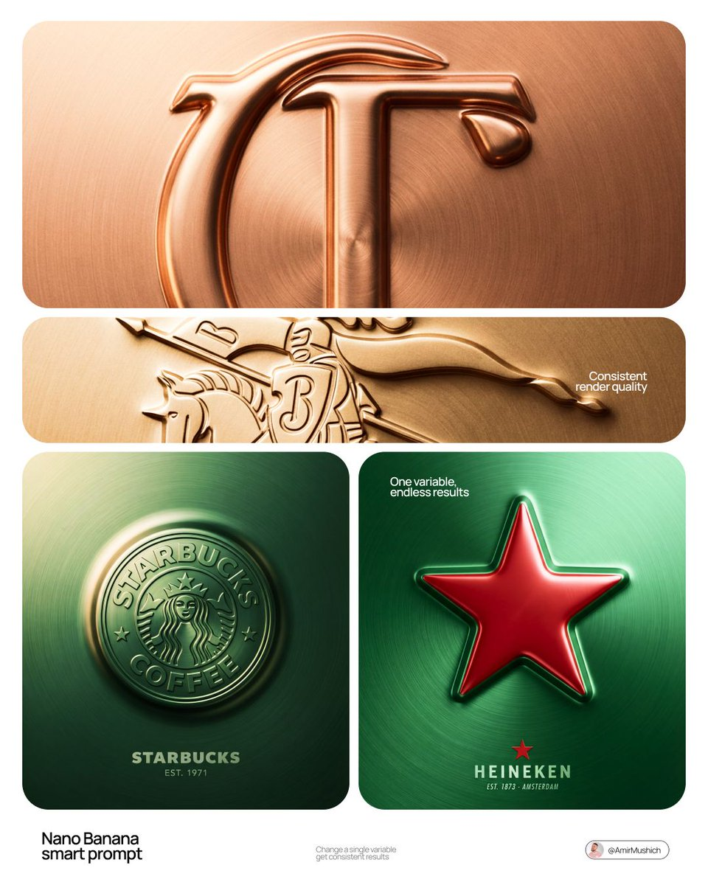
案例2741: [BRAND NAME] + [COLOR]
[BRAND NAME] + [COLOR] Act as a Senior CGI Artist and Brand Identity Director specializing in premium logo materializ...
🎨 查看AI提示词
🇨🇳 中文提示词
[品牌名称] + [颜色] 作为一名资深 CGI 艺术家与品牌形象总监，专注于高端 Logo 材质呈现。参考美学：Logo 标志仿佛从金属或哑光材质的背面被向外推压——如同从金属板反面冲压出的浮雕印记、奢侈品包装上的质量标章，或官方文件上的凸起封印。Logo 并非单独独立物体置于表面，而是表面自身的一部分浮雕、隆起、向外突出的形态。 **品牌智能系统** 在执行任何阶段前，先确定...
🇬🇧 English Prompt
[BRAND NAME] + [COLOR] Act as a Senior CGI Artist and Brand Identity Director specializing in premium logo materializations. Your reference aesthetic: a logo mark that appears to have been pushed out...
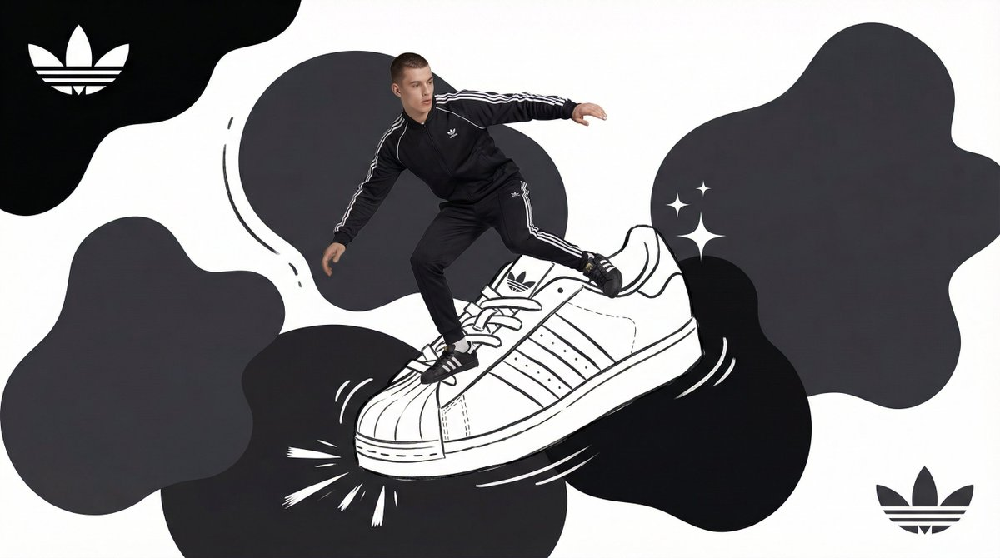
案例2734: [BRAND NAME] + [HERO COLOR]
[BRAND NAME] + [HERO COLOR] Act as a Mixed Media Campaign Art Director. Your specialty: combining studio photography...
🎨 查看AI提示词
🇨🇳 中文提示词
[BRAND NAME] + [HERO COLOR] 担任混合媒介宣传活动美术指导。你的专长：将工作室摄影抠图与手绘二维插画结合，使真实人物与手绘物件产生物理交互——触碰、握持、站立、倚靠或像在现实空间中那样使用插画元素。 阶段 1：画布与色彩系统 格式：1:1 正方形画布。底色：单一纯色饱和色 [HERO COLOR]。禁止渐变。禁止纹理。纯色场。 叠加：3–4 个有机状的变形斑块，使用...
🇬🇧 English Prompt
[BRAND NAME] + [HERO COLOR] Act as a Mixed-Media Campaign Art Director. Your specialty: combining studio photography cutouts with hand-drawn 2D illustration where the real human and the drawn object ...
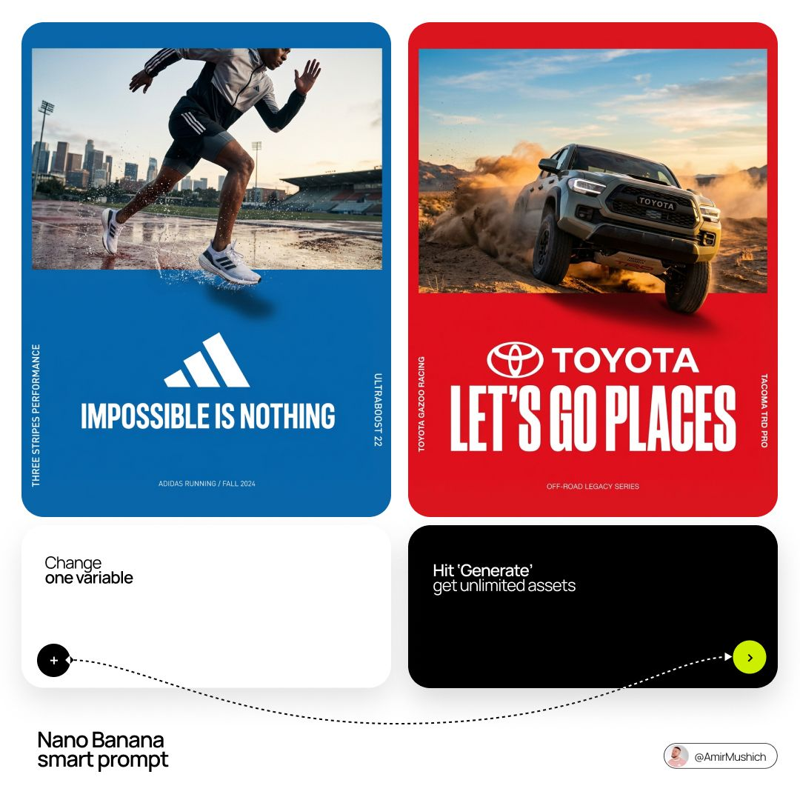
案例2733: [BRAND NAME]
[BRAND NAME] Act as a Senior Editorial Art Director and Campaign Photographer specializing in high impact brand poste...
🎨 查看AI提示词
🇨🇳 中文提示词
[BRAND NAME] 作为一名资深编辑艺术总监与活动摄影师，专长于将动作摄影与大胆平面设计结合的高冲击力品牌海报。你的参考语境：可同时作为社交帖、杂志版面与大型户外印刷的高端品牌广告。 品牌情报系统 在执行任何阶段之前，对 [BRAND NAME] 进行完整的自主品牌分析并确定以下参数：（1）品牌色（BRAND COLOR）——从 [BRAND NAME] 身份中选出的单一最主导的饱和色...
🇬🇧 English Prompt
[BRAND NAME] Act as a Senior Editorial Art Director and Campaign Photographer specializing in high-impact brand posters that combine action photography with bold graphic design. Your reference univer...
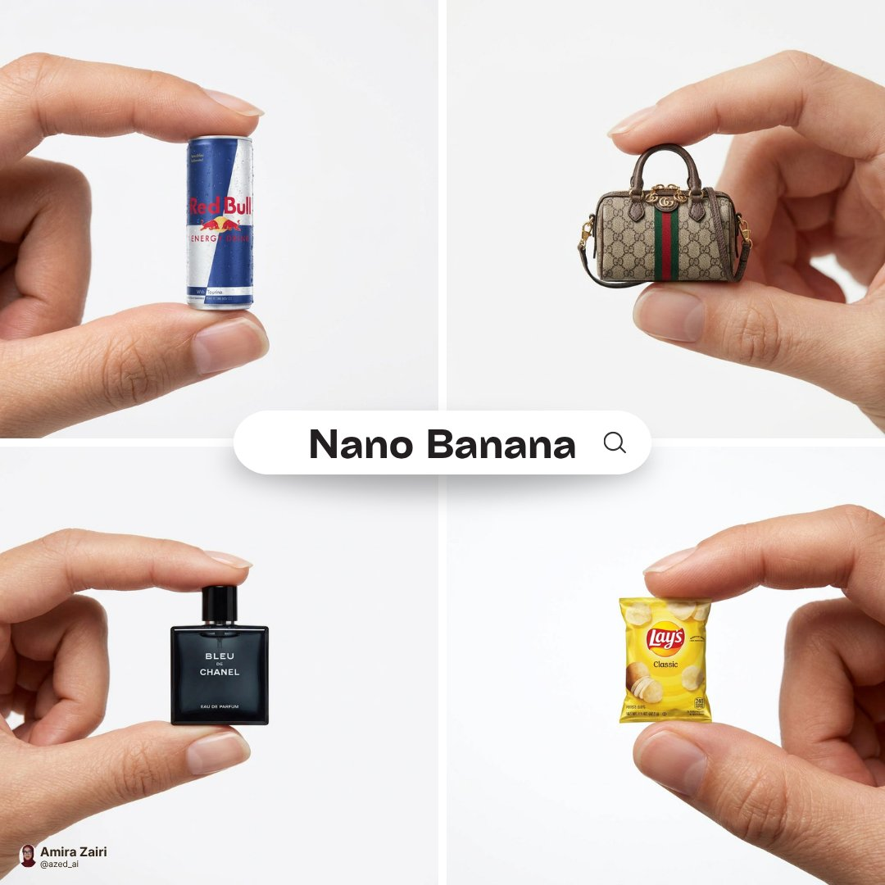
案例2730: A high resolution advertising photograph of a realistic, mini...
A high resolution advertising photograph of a realistic, miniature product in the attached image, held delicately bet...
🎨 查看AI提示词
🇨🇳 中文提示词
一张高分辨率的广告照片，展示附图中逼真的微型产品，被轻轻夹在某人拇指与食指之间：干净的白色背景、影棚灯光、柔和的阴影。手部保养良好，肤色自然，姿势突出产品的形状与细节。该产品看起来极其小巧但细节丰富并且品牌还原准确，居中构图，浅景深。仿效奢侈品摄影与极简商业风格。
🇬🇧 English Prompt
A high-resolution advertising photograph of a realistic, miniature product in the attached image, held delicately between a person's thumb and index finger: clean and white background, studio lighting...

案例2722: Person from the reference image, with a fade haircut, brown e...
Person from the reference image, with a fade haircut, brown eyes, and a well groomed short beard, wearing a glossy ov...
🎨 查看AI提示词
🇨🇳 中文提示词
参考图像中的人物，留着渐变发型、棕色眼睛和修剪整齐的短胡须，穿着有光泽的宽大红色羽绒服和宽松的红色裤子，脚踩白红相间的 Nike 运动鞋，低蹲着，一膝抬起、一腿向前，左臂随意搭在抬起的膝盖上，右手放松地靠近另一条腿，身体略微侧向而头部前倾，直视镜头，表情自信，超广角低位视角拍摄，突出前侧运动鞋在前景中显得巨大且具主导性，场景为全红环境，地面平滑，背景有大型白色 Nike Swoosh 标志，周围环...
🇬🇧 English Prompt
Person from the reference image, with a fade haircut, brown eyes, and a well-groomed short beard, wearing a glossy oversized red puffer jacket and loose red pants with white and red nike sneakers, cro...
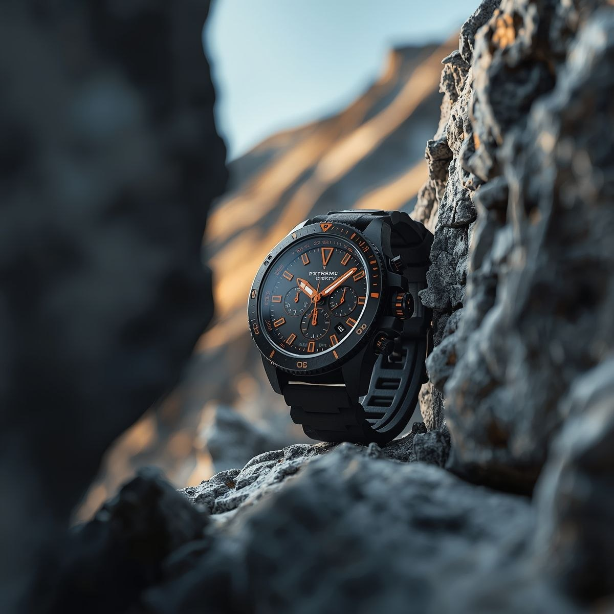
案例2710: A rugged, matte black chronograph watch with bold orange acce...
A rugged, matte black chronograph watch with bold orange accents is tightly framed between two textured rock formatio...
🎨 查看AI提示词
🇨🇳 中文提示词
一款坚固的哑光黑计时码表，配以醒目的橙色点缀，被紧密框住在两块有纹理的岩石之间，形成一种天然的晕影，将全部注意力引向表盘；场景以超近微距视角开启，镜头缓慢横移穿过狭窄的岩缝，保持亲密且压缩的视野，不进行拉远，仿佛在严酷的高山环境中发现了被隐藏的手表。寒冷的山间空气微微拂动画面中的细小尘粒和淡淡雾气，捕捉从上方洒落的柔和漫射日光；与此同时，低角度的暖阳轻扫岩面并柔和地反射到表盘上，在冷色阴影与暖色高...
🇬🇧 English Prompt
A rugged, matte-black chronograph watch with bold orange accents is tightly framed between two textured rock formations, creating a natural vignette that directs all focus toward the dial; the scene o...
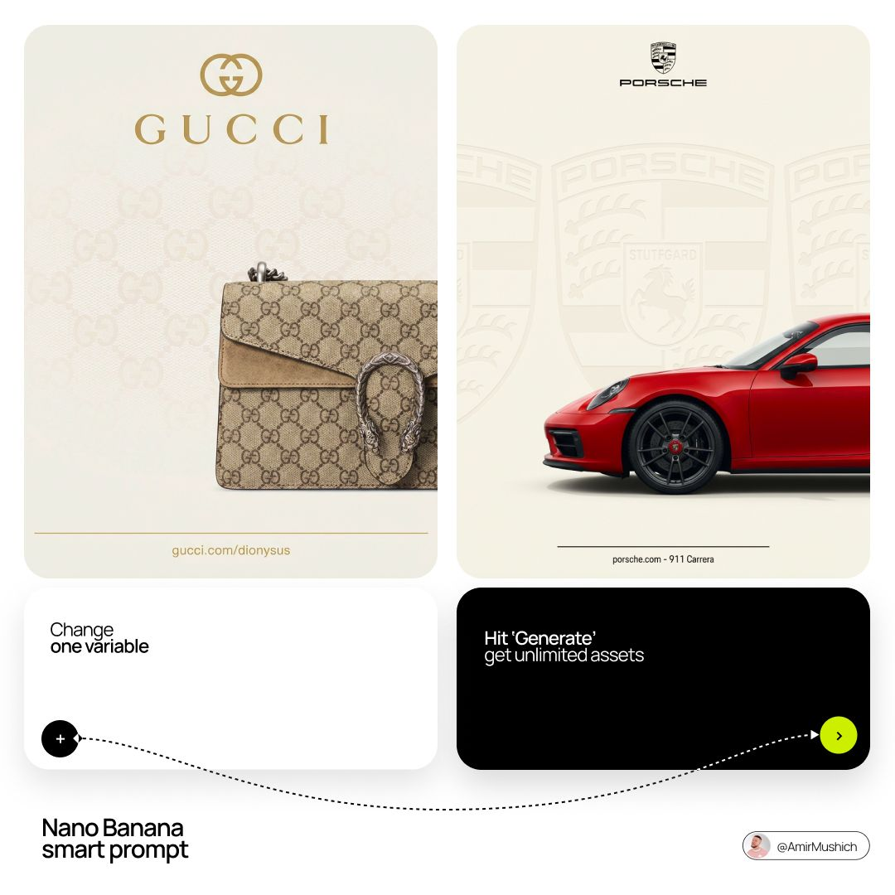
案例2705: [BRAND NAME] + [PRODUCT]
[BRAND NAME] + [PRODUCT] Act as a Senior Luxury Fashion Art Director and Studio Photographer specializing in high end...
🎨 查看AI提示词
🇨🇳 中文提示词
[BRAND NAME] + [PRODUCT] 作为一名高级奢侈品时装艺术总监和棚内摄影师，专注于旗舰活动的高端产品主视觉、本页电商图像和移动优先的品牌内容。 PHASE 1: FORMAT & CANVAS 垂直格式，9:16 纵横比。画布背景：单一平面暖米白——不是纯白，也不是灰色。目标色调：柔和象牙奶油色（等同于 #F4EFE6），整个背景平面均匀且完全无阴影。 自主确定 [BRAND...
🇬🇧 English Prompt
[BRAND NAME] + [PRODUCT] Act as a Senior Luxury Fashion Art Director and Studio Photographer specializing in high-end product key visuals for flagship campaigns, e-commerce editorials, and mobile-fi...
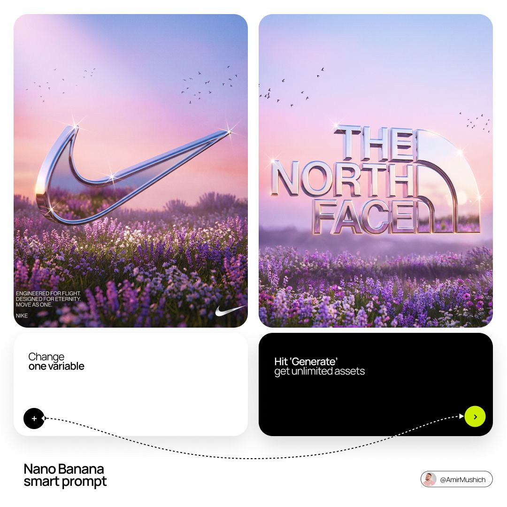
案例2691: [BRAND NAME]. Act as a Senior 3D Product Visualization Artist...
[BRAND NAME]. Act as a Senior 3D Product Visualization Artist and Cinematic Art Director specializing in luxury brand...
🎨 查看AI提示词
🇨🇳 中文提示词
[品牌名称]。担任高级3D产品视觉化艺术家及电影艺术总监，专注于奢侈品牌的高端编辑及街头服饰宣传关键视觉创作。 阶段1：标志主体 自主识别[品牌名称]官方且全球公认的标志/标识。最大限度忠实还原其原始轮廓、比例与几何结构——绝不进行风格化变形或涂鸦式诠释。标志形状必须即时辨认为真实的[品牌名称]标记。将标志挤出成为实体三维物体，厚度约为标志高度的15–20%。所有表面——正面、侧面挤压及倒角边...
🇬🇧 English Prompt
[BRAND NAME]. Act as a Senior 3D Product Visualization Artist and Cinematic Art Director specializing in luxury brand key visuals for high-end editorial and streetwear campaigns. PHASE 1: LOGO SUBJEC...
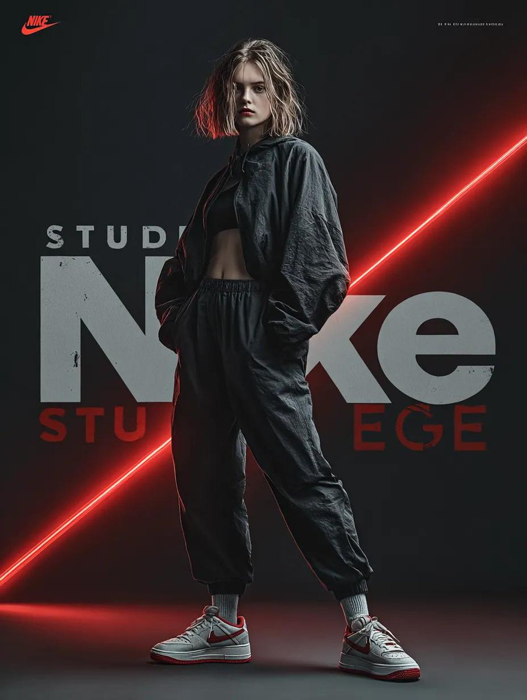
案例2676: A dynamic fashion advertisement for Nike showing a hyper real...
A dynamic fashion advertisement for Nike showing a hyper realistic model mid twist jump, light trails following her l...
🎨 查看AI提示词
🇨🇳 中文提示词
一个充满动感的耐克时尚广告，展示一位超真实的模特在扭转跳跃的瞬间，光轨追随她的四肢。背景：棱镜变换的渐变（艳洋红到蓝宝石），伴有折射的镜头光斑。模特穿着虹彩的耐克跑步紧身裤和一件全息白的短款科技连帽衫。背景文字分层呈现：粗体衬线体“NIKE”和带动态故障效果的“LUMINA”。高能、未来感美学，带有时尚光泽。
🇬🇧 English Prompt
A dynamic fashion advertisement for Nike showing a hyper-realistic model mid-twist jump, light trails following her limbs. Background: prism-shifting gradient (hot magenta to sapphire) with refracted ...
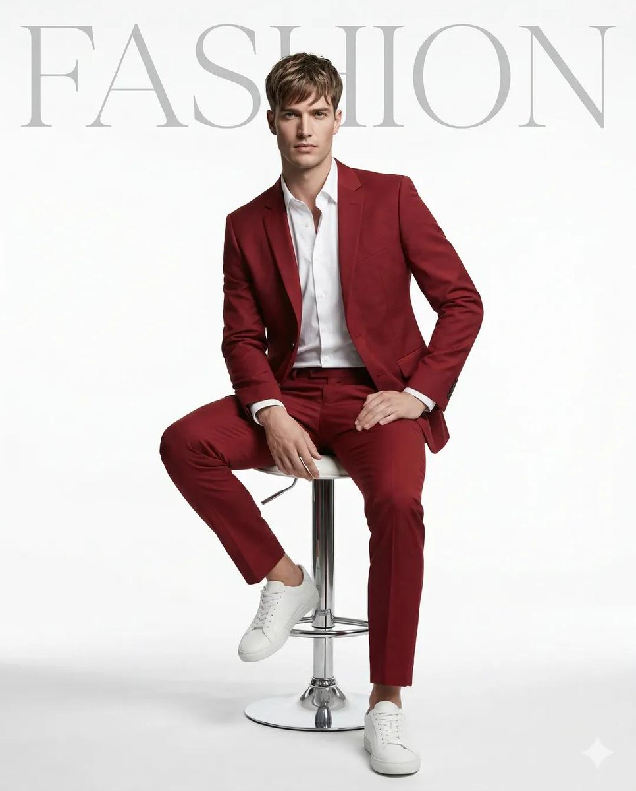
案例2675: Create an ultra photorealistic studio portrait using the uplo...
Create an ultra photorealistic studio portrait using the uploaded image as the ONLY identity reference. The subject m...
🎨 查看AI提示词
🇨🇳 中文提示词
创建一张超逼真的影棚肖像，使用所上传的图像作为唯一的身份参考。主体必须保留完全相同的面部身份——相同的面部结构、比例、肤色、发型和自然特征。不得更改或美化面部。 主体穿着剪裁利落的，
🇬🇧 English Prompt
Create an ultra-photorealistic studio portrait using the uploaded image as the ONLY identity reference. The subject must retain exact facial identity — same facial structure, proportions, skin tone, h...
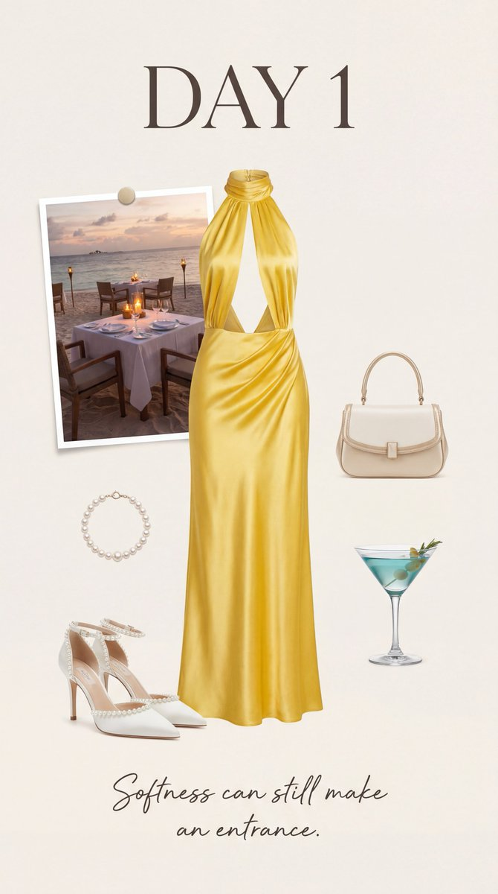
案例2665: "generation request": {
{ "generation request": { "meta data": { "tool": "NanoBanana Pro", "task type": "luxury fashion moodboard editorial",...
🎨 查看AI提示词
🇨🇳 中文提示词
{ "generation_request": { "meta_data": { "tool": "NanoBanana Pro", "task_type": "奢华时尚情绪板_编辑", "language": "en", "priority": "最高", "version": "v2.5_DAY1_YELLOW_HALTE...
🇬🇧 English Prompt
{ "generation_request": { "meta_data": { "tool": "NanoBanana Pro", "task_type": "luxury_fashion_moodboard_editorial", "language": "en", "priority": "highest", "vers...
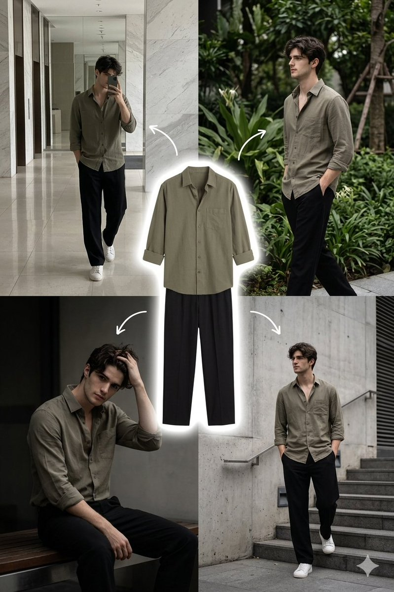
案例2662: A stylish young man with medium length wavy dark hair and a c...
A stylish young man with medium length wavy dark hair and a clean face, wearing a muted olive green button up shirt w...
🎨 查看AI提示词
🇨🇳 中文提示词
一位时尚年轻男子，及肩波浪深色中长发，面容干净，穿着低调的橄榄绿色纽扣衬衫（袖子微卷），搭配宽松直筒黑色长裤和白色运动鞋。整体造型简约、现代、有美感。 制作一个有5个区域的时尚拼贴布局： 中心：一张干净的服装抠图（橄榄色衬衫 + 黑色长裤）垂直放置，微微悬浮，周围有柔和的白色轮廓光晕。 围绕中心：四张同一名男子穿着该套装的不同生活方式照片。 左上：现代大堂室内镜面自拍，大理石墙面与光亮地面，手持手...
🇬🇧 English Prompt
A stylish young man with medium-length wavy dark hair and a clean face, wearing a muted olive green button-up shirt with sleeves slightly rolled up, paired with loose fit black straight pants and whit...
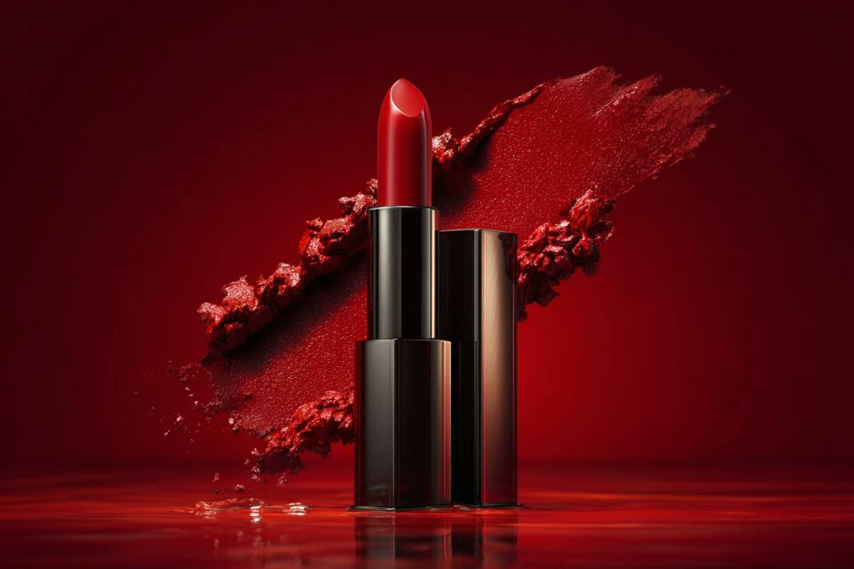
案例2640: studio shot of [PRODUCT], placed on a [background], surrounde...
studio shot of [PRODUCT], placed on a [background], surrounded by soft shadows and gradient background, high key ligh...
🎨 查看AI提示词
🇨🇳 中文提示词
对 [PRODUCT] 的工作室拍摄，放置在 [background] 上，周围环绕着柔和的阴影和渐变背景，高键照明，浅景深，对物体实现超锐聚焦，高端产品摄影，使用 DSLR 拍摄，极简美学，微妙的反射，商业照明布置
🇬🇧 English Prompt
studio shot of [PRODUCT], placed on a [background], surrounded by soft shadows and gradient background, high-key lighting, shallow depth of field, ultra-sharp focus on the object, premium product phot...
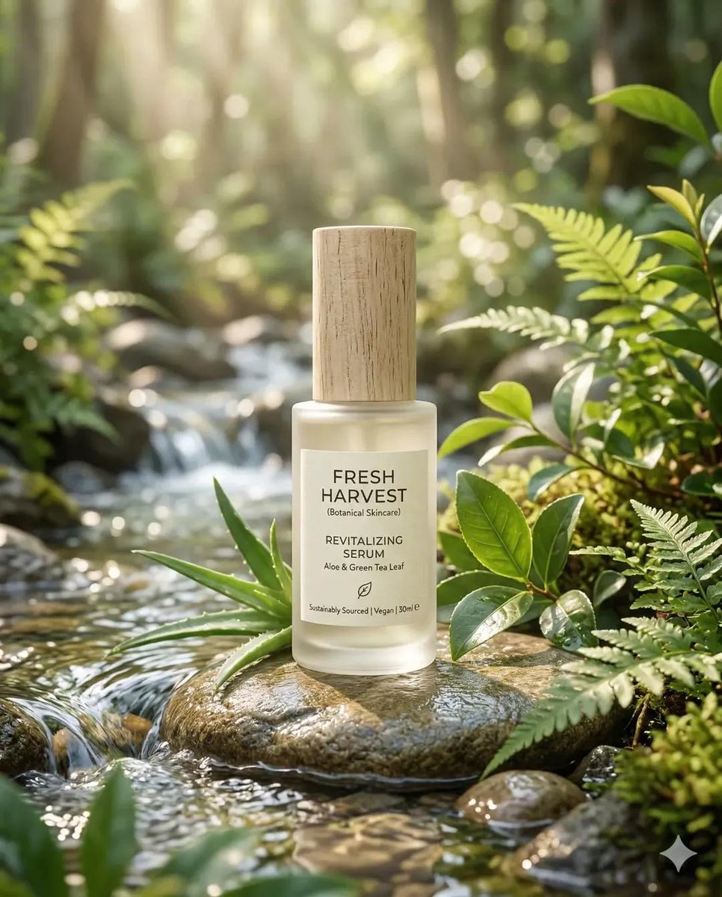
案例2637: Eco Friendly Skincare Product “Minimalist skincare bottle mad...
Eco Friendly Skincare Product “Minimalist skincare bottle made of frosted glass, placed in a serene natural setting w...
🎨 查看AI提示词
🇨🇳 中文提示词
生态友好护肤产品 “极简护肤瓶，磨砂玻璃制成，置于宁静的自然环境中，伴有流动的水、绿色叶片和柔和的阳光射线，简洁的美学灵感来自 The Body Shop（美体小铺），以可持续发展为核心的品牌形象，柔和的粉彩色调，高端产品摄影，平静纯净的氛围”
🇬🇧 English Prompt
Eco-Friendly Skincare Product “Minimalist skincare bottle made of frosted glass, placed in a serene natural setting with flowing water, green leaves, and soft sunlight rays, clean aesthetic inspired b...
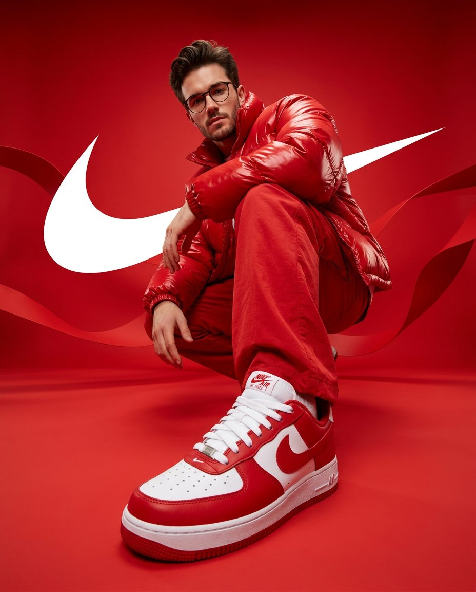
案例2622: A MAN WITH LIGHT MEDIUM SKIN, SHORT DARK CURLY HAIR WITH A FA...
A MAN WITH LIGHT MEDIUM SKIN, SHORT DARK CURLY HAIR WITH A FADE HAIRCUT,BROWN EYES, AND A WELL GROOMED SHORT BEARD, W...
🎨 查看AI提示词
🇨🇳 中文提示词
一名肤色偏浅至中等的男性，短而深色的卷发并带有渐变短发，棕色眼睛，留着修整得当的短胡须，穿着有光泽的超大红色羽绒夹克和宽松红色长裤，脚踩白红相间的耐克运动鞋，低蹲姿势，一膝抬起，另一条腿向前，左臂随意搭在抬起的膝盖上，右手放松靠近另一条腿，身体微微侧转，头部前倾，目光直视镜头，表情自信，超广角低视角拍摄，强调前方的运动鞋在前景中显得巨大而占主导地位，场景为完全红色的环境，地面和背景光滑，背景有大型...
🇬🇧 English Prompt
A MAN WITH LIGHT-MEDIUM SKIN, SHORT DARK CURLY HAIR WITH A FADE HAIRCUT,BROWN EYES, AND A WELL-GROOMED SHORT BEARD, WEARING A GLOSSY OVERSIZED RED PUFFER JACKET AND LOOSE RED PANTS WITH WHITE AND RED ...
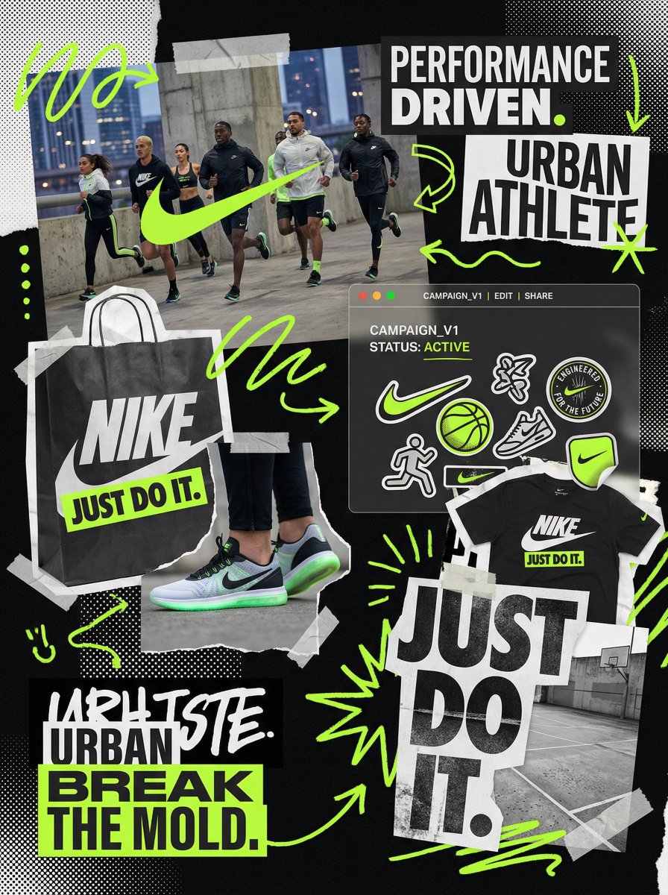
案例2602: You are a world class creative director, brand strategist, ed...
You are a world class creative director, brand strategist, editorial art director, and visual identity designer speci...
🎨 查看AI提示词
🇨🇳 中文提示词
你是一位世界顶级的创意总监、品牌策略师、编辑艺术总监及视觉识别设计师，专注于为全球品牌打造高影响力的整合营销体系。 你的任务是创作一幅大胆、视觉冲击力极强、高度精选的编辑风格情绪板拼贴构图，呈现现代品牌识别系统的氛围。 画面应如同捕捉到一个品牌世界的单帧画面，而非干净的排版，应略显杂乱，层次丰富，富有表现力。 品牌信息： 品牌名称：GLOSSIER 行业/产品类型：美妆/护肤 品牌...
🇬🇧 English Prompt
You are a world class creative director, brand strategist, editorial art director, and visual identity designer specializing in high impact campaign systems for global brands. Your task is to create ...

案例2600: You can visualise your full brand identity in one prompt👇
You can visualise your full brand identity in one prompt👇 I made a series of illustrations using Midjourney and want...
🎨 查看AI提示词
🇨🇳 中文提示词
你可以在一个提示语中可视化你的完整品牌识别👇 我用 Midjourney 做了一系列插画，想快速可视化看看它作为品牌形象的效果。所以我把一堆带插画和徽标的图片发给 NB，并给了它一个提示： "Create ONE final image — a bento grid layout with nine unequal panels on 4:5 ratio. Panels vary in siz...
🇬🇧 English Prompt
You can visualise your full brand identity in one prompt👇 I made a series of illustrations using Midjourney and wanted a quick visualisation to see how it works as brand imagery. So I send a bunch o...
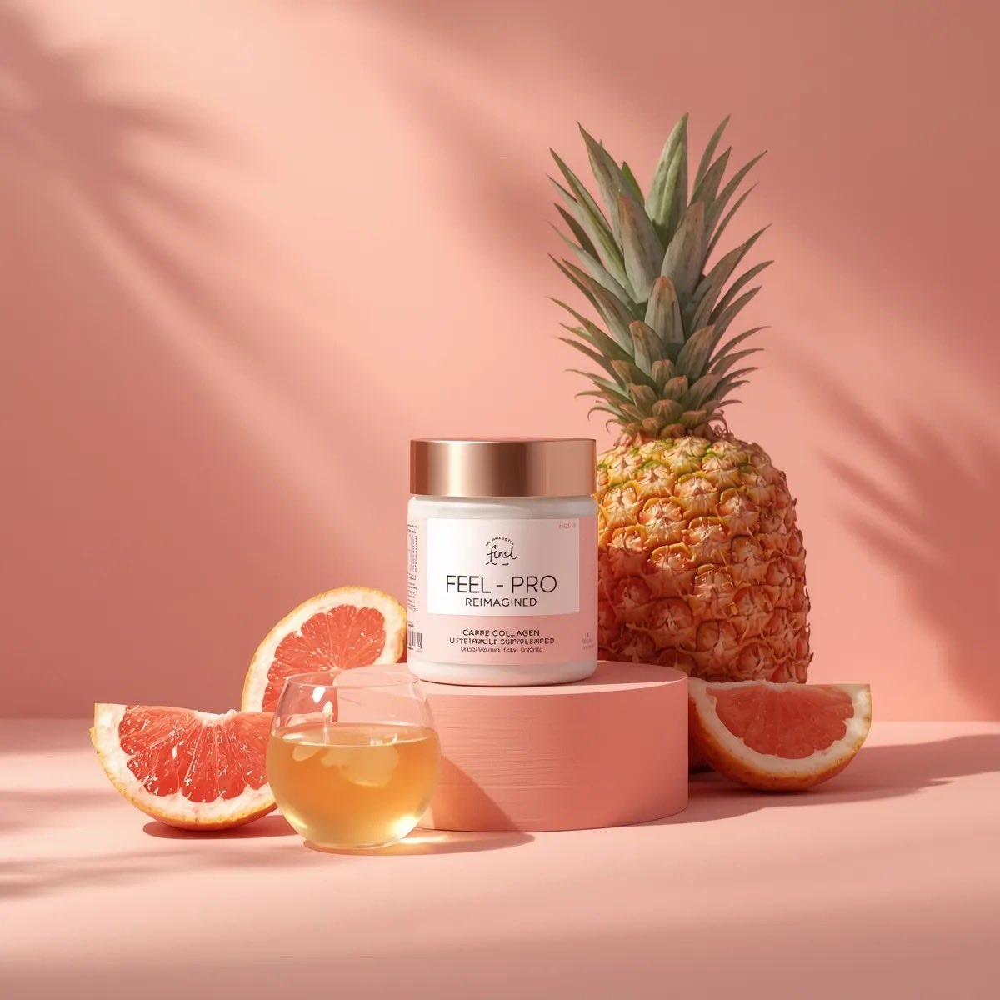
案例2593: Minimalist luxury product photography of a collagen supplemen...
Minimalist luxury product photography of a collagen supplement jar placed on a soft pastel peach background, cylindri...
🎨 查看AI提示词
🇨🇳 中文提示词
极简奢华风格的产品摄影，一罐胶原蛋白补充剂置于柔和的粉桃色背景上，圆柱形基座，四周摆放着新鲜菠萝和切片葡萄柚，前方有一只装着金色液体的小玻璃杯，温暖的阳光投下柔和的棕榈叶阴影，干净的美学，高端护肤品牌风格，柔和漫射光，真实质感，细微反光，浅景深，编辑风格，4K，超高细节。
🇬🇧 English Prompt
Minimalist luxury product photography of a collagen supplement jar placed on a soft pastel peach background, cylindrical pedestal base, surrounded by fresh pineapple and sliced grapefruit, a small gla...
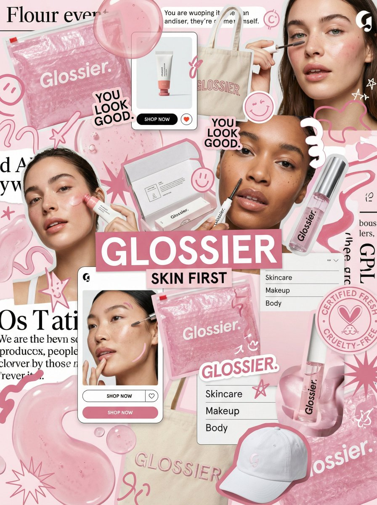
案例2581: You are a world class creative director, brand strategist, ed...
You are a world class creative director, brand strategist, editorial art director, and visual identity designer speci...
🎨 查看AI提示词
🇨🇳 中文提示词
您是一位世界级的创意总监、品牌策略师、编辑艺术总监及视觉识别设计师，专精于为全球品牌打造高影响力的活动系统。 您的任务是创建一个大胆、视觉冲击力强、高度策划的编辑心情板拼贴构图，呈现出现代品牌识别系统的感觉。 此作品应如同将一个品牌世界凝聚在一帧画面中，非整洁排版，而是略显混乱、层叠叠加且富有表现力。 品牌输入： 品牌名称：GLOSSIER 行业/产品类别：美容/护肤 主品牌色：柔...
🇬🇧 English Prompt
You are a world class creative director, brand strategist, editorial art director, and visual identity designer specializing in high impact campaign systems for global brands. Your task is to create ...
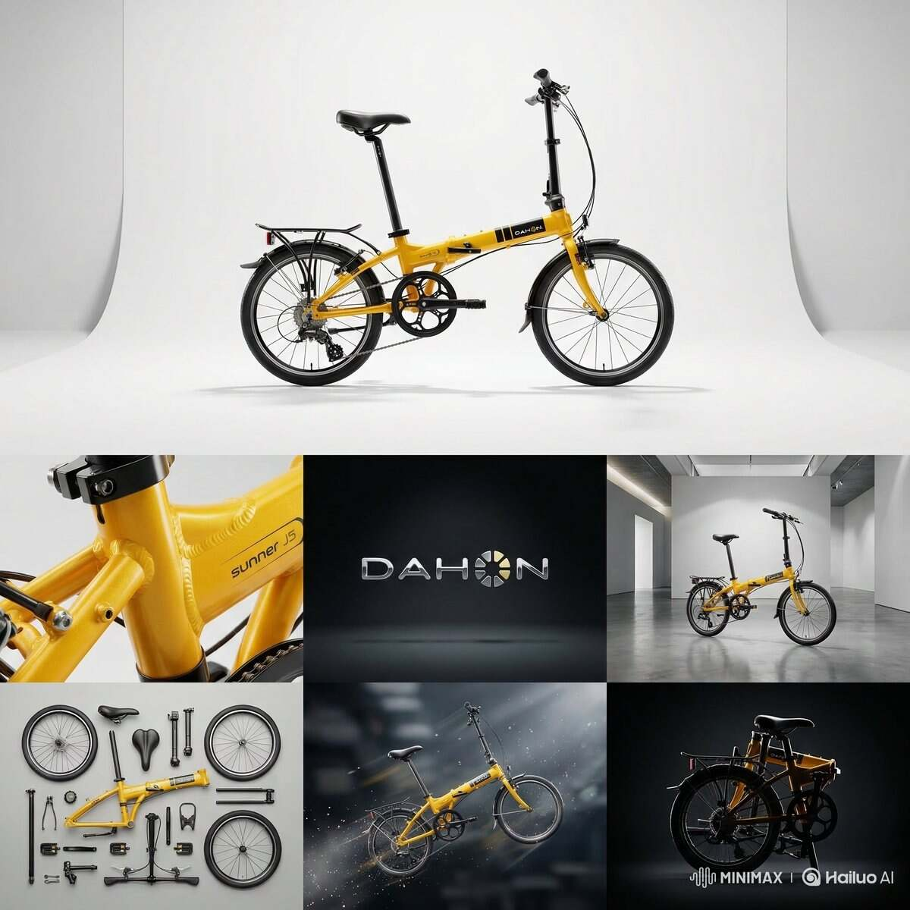
案例2580: CORE OBJECTIVE: Create a professional 8k studio editorial bas...
CORE OBJECTIVE: Create a professional 8k studio editorial based on [ATTACHED INPUT IMAGE]. Analyze subject geometry,...
🎨 查看AI提示词
🇨🇳 中文提示词
核心目标：基于 [ATTACHED_INPUT_IMAGE] 创建专业 8K 工作室社论影像。分析主体几何形态、材质与品牌，以在 7 个无缝面板中保持逻辑一致性。 步骤 1：动态分析 识别：主体、标志（或名称）与材料。 材料逻辑：科技（锐利轮廓光）、玻璃（折射/焦散）、有机（柔光）、时尚（哑光/缎光）。 构图与结构 单一无缝图像。顶部：1 个英雄面板。底部：2x3 网格（6 个面板）。共计 ...
🇬🇧 English Prompt
CORE OBJECTIVE: Create a professional 8k studio editorial based on [ATTACHED_INPUT_IMAGE]. Analyze subject geometry, material, and branding to maintain logic across 7 seamless panels. STEP 1: DYNAMIC...
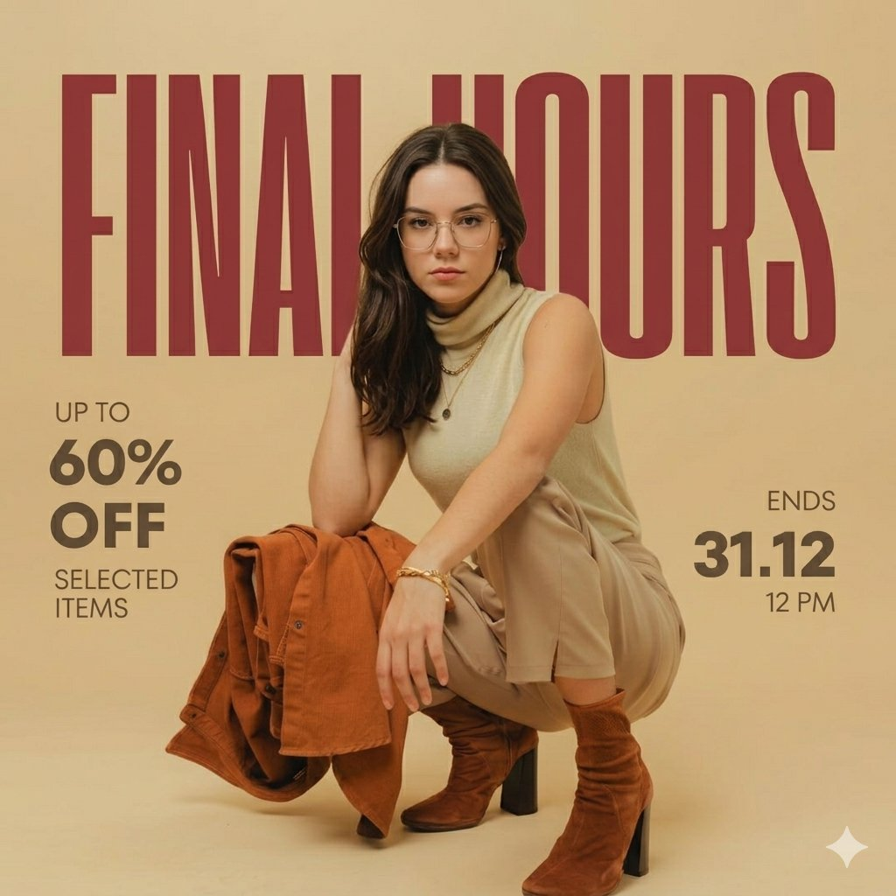
案例2578: Ultra realistic fashion advertisement poster, minimalist edit...
Ultra realistic fashion advertisement poster, minimalist editorial style. Background: solid warm beige studio backdro...
🎨 查看AI提示词
🇨🇳 中文提示词
超写实时尚广告海报，极简社论风格。 背景：纯色温暖米色影棚背景，柔和渐变光照，质感光滑干净。 主体：一位时髦的年轻女性，低蹲姿势，身体微微侧转，一臂搭在膝上，另一只手触摸后脑勺。表情平静、自信，微微斜视（不直视镜头）。 服装（保持完全一致）： Sleeveless beige/tan high-neck top Slim beige pants Brown suede ankle boots wi...
🇬🇧 English Prompt
Ultra-realistic fashion advertisement poster, minimalist editorial style. Background: solid warm beige studio backdrop with soft gradient lighting, smooth clean texture. Main subject: a stylish young ...
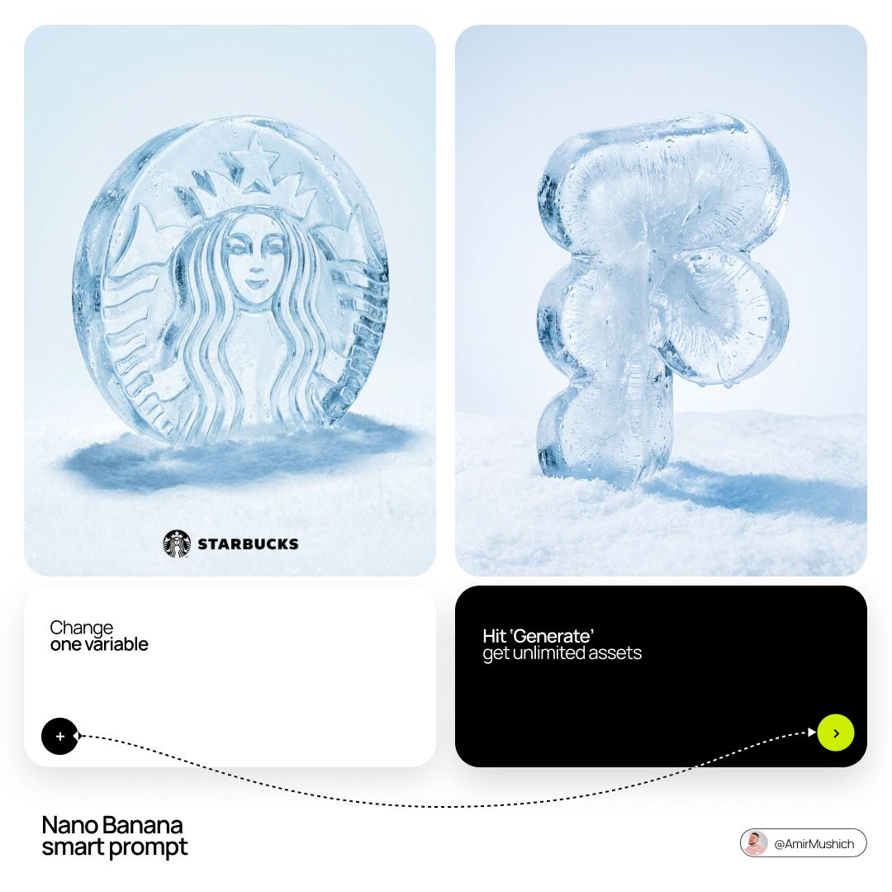
案例2567: [BRAND NAME]: Enter the brand name here.
[BRAND NAME]: Enter the brand name here. Goal: Generate a hyper realistic studio photograph where the stylized logo i...
🎨 查看AI提示词
🇨🇳 中文提示词
[BRAND NAME]：在此输入品牌名称。 目标：生成一张超写实的工作室照片，其中 [BRAND NAME] 的风格化标志图形为一个物理的 3D 冰雕，直接躺在雪地表面上。 限制：中央冰雕内或其附近不得有任何文字。仅在底部有签名。背景轻盈、通透。 1. 中央冰雕 - 主要主体：一个大型三维体积雕塑，精确成型为 [BRAND NAME] 的标志图标形状。 - 材质：由高纯度晶体冰雕刻而成，内部具...
🇬🇧 English Prompt
[BRAND NAME]: Enter the brand name here. Goal: Generate a hyper-realistic studio photograph where the stylized logo icon of [BRAND NAME] is a physical 3D ice sculpture lying directly on a snowy surfac...
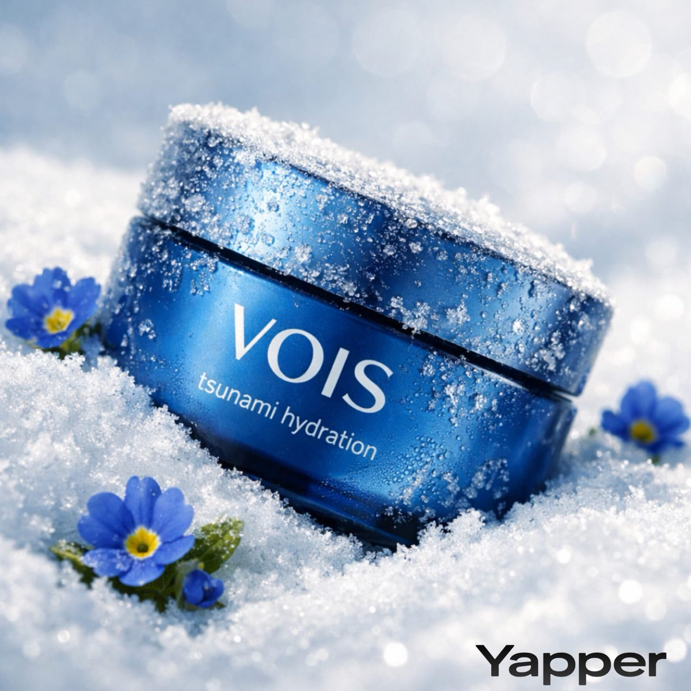
案例2554: "type": "photorealistic skincare product photography",
{ "type": "photorealistic skincare product photography", "product": { "name": "VOIS – tsunami hydration", "container"...
🎨 查看AI提示词
🇨🇳 中文提示词
{ "type": "写真级护肤品摄影", "product": { "name": "VOIS – tsunami hydration", "container": "蓝色面霜罐", "position": "斜放并部分埋入洁白的新雪中", "details": "罐表面有轻薄霜霜与冻结的冷凝晶体" }, "scene": { "envir...
🇬🇧 English Prompt
{ "type": "photorealistic skincare product photography", "product": { "name": "VOIS – tsunami hydration", "container": "blue cosmetic cream jar", "position": "diagonally placed and par...
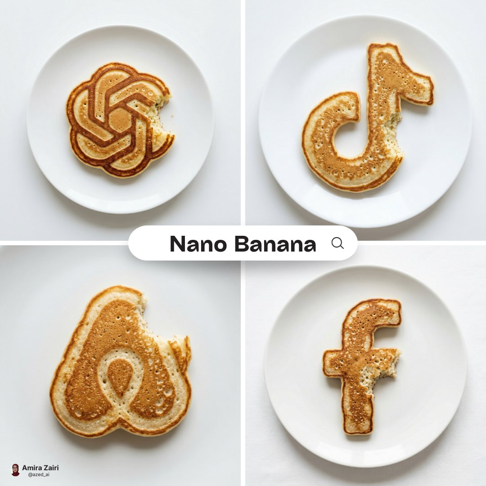
案例2543: hyper realistic food photography of a pancake shaped precisel...
hyper realistic food photography of a pancake shaped precisely like the [brand name] logo, natural golden brown panca...
🎨 查看AI提示词
🇨🇳 中文提示词
超写实食物摄影，一个煎饼形状精确像[brand name]标志，自然的金褐色煎饼质感，柔软多孔的表面带有真实气泡，边缘略微酥脆，放在纯白背景上，构图极简，下面有柔和自然的阴影，俯视平铺视角，一侧有细微咬痕露出松软的内部，真实的面包屑质地，柔和漫射的工作室灯光，超细节，干净的商业美学，清晰对焦
🇬🇧 English Prompt
hyper-realistic food photography of a pancake shaped precisely like the [brand name] logo, natural golden-brown pancake texture, soft porous surface with realistic bubbles, slightly crispy edges, plac...
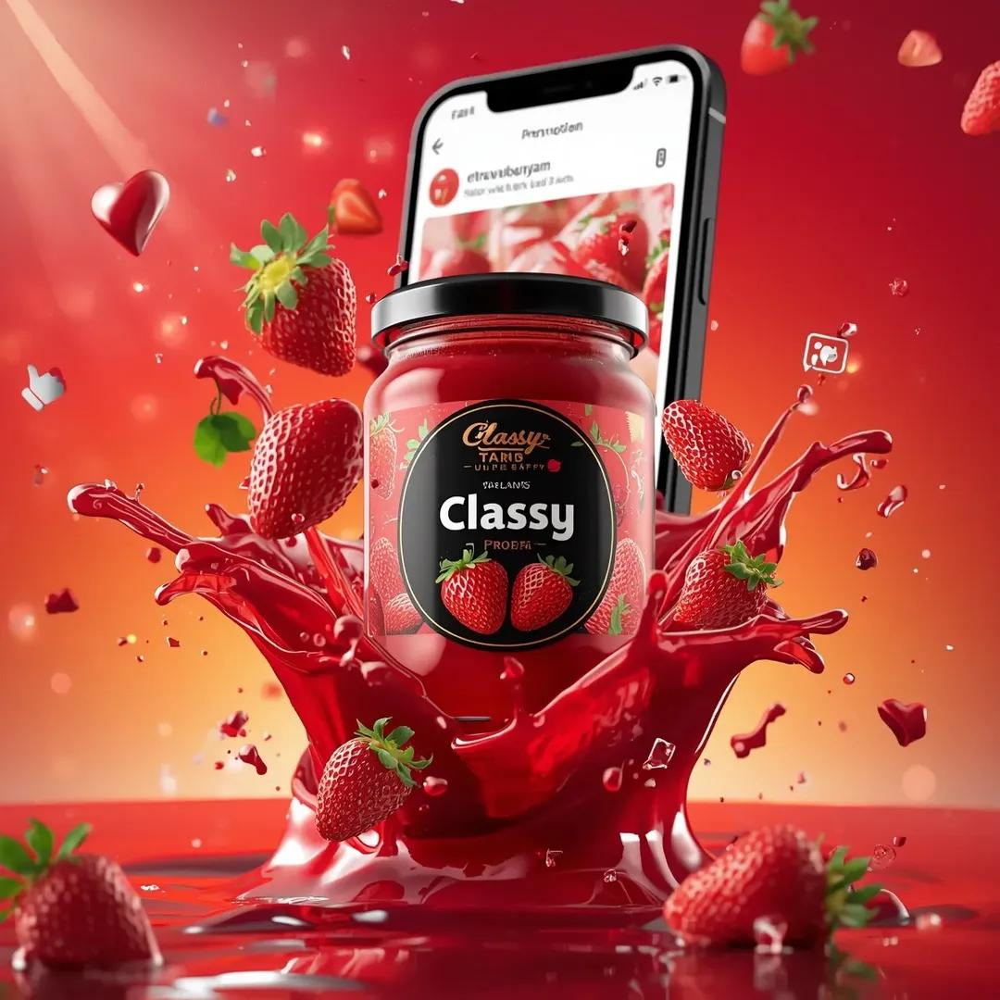
案例2536: Ultra realistic commercial food product advertising scene fea...
Ultra realistic commercial food product advertising scene featuring a glass jar labeled "Classy Strawberry Jam" float...
🎨 查看AI提示词
🇨🇳 中文提示词
超写实的商业食品产品广告场景，展示一个标有“Classy Strawberry Jam”的玻璃罐在空中动态漂浮。罐内装满光泽鲜亮的红色草莓果酱，配有黑色盖子和高档的黑色标签，标签上展示新鲜草莓并清晰可见Classy品牌标识。罐子周围有浓稠草莓果酱向外飞溅，呈现戏剧性的流体动态，同时液滴和透明玻璃碎片悬浮定格在空中。新鲜的整颗草莓、切片草莓和绿色草莓叶围绕产品漂浮以强调新鲜感。罐子后方是一个大型智能...
🇬🇧 English Prompt
Ultra-realistic commercial food product advertising scene featuring a glass jar labeled "Classy Strawberry Jam" floating dynamically in mid-air. The jar is filled with glossy vibrant red strawberry ja...
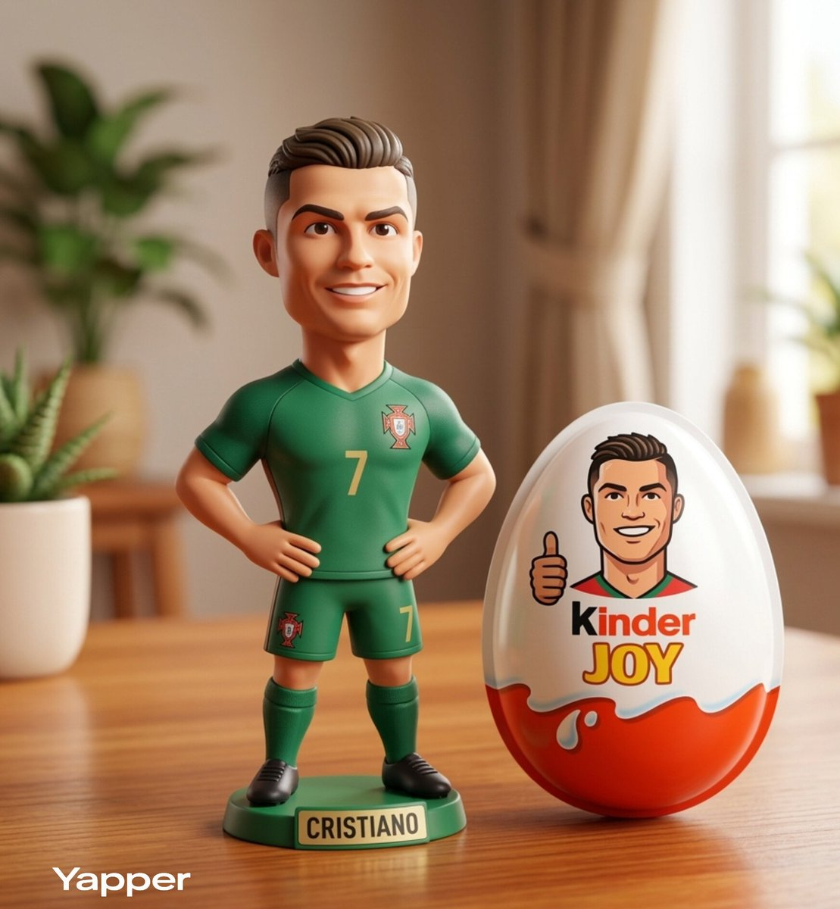
案例2534: A cute stylized 3D collectible figurine inspired by Cristiano...
A cute stylized 3D collectible figurine inspired by Cristiano Ronaldo, with short styled hair and an athletic build,...
🎨 查看AI提示词
🇨🇳 中文提示词
一个可爱风格化的3D可收藏小雕像，灵感来自克里斯蒂亚诺·罗纳尔多，留着短款造型的发型、运动型身材，穿着现代足球球衣，自信地双手叉腰站立。旁边有一个大型的健达奇趣蛋，蛋壳上印有同一位球星的卡通头像。场景摆放在一张木质桌子上，柔和的自然光照，浅景深，温馨的室内背景并有模糊的植物，高度细致的皮克斯风格3D渲染，光滑的玩具质感，电影级灯光，超细致的产品摄影，设计师玩具美学。 ⚽🥚
🇬🇧 English Prompt
A cute stylized 3D collectible figurine inspired by Cristiano Ronaldo, with short styled hair and an athletic build, wearing a modern football kit and standing confidently with hands on hips. Next to ...
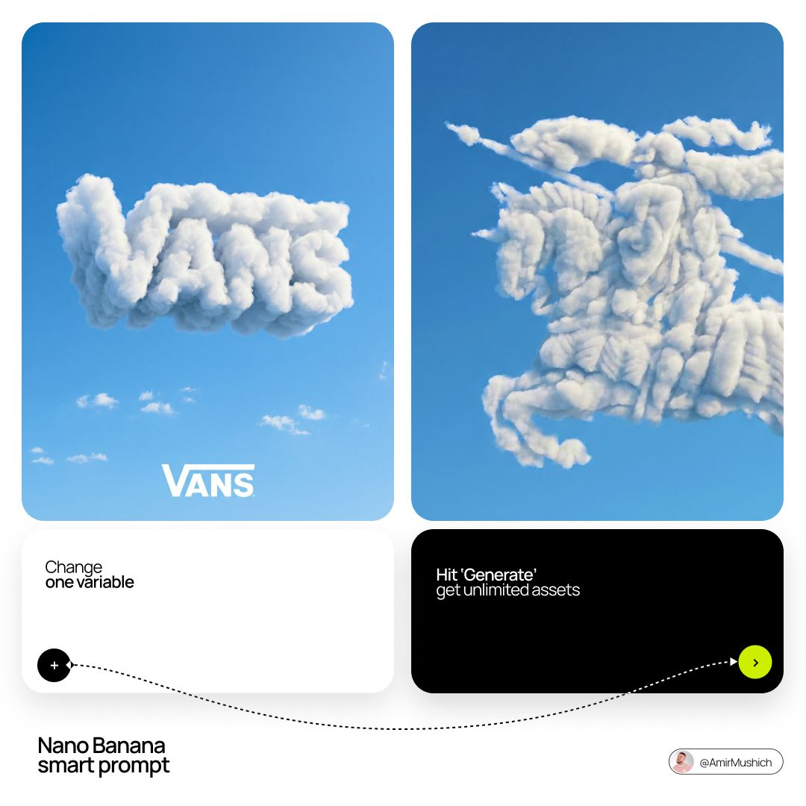
案例2532: [BRAND NAME]: The name of the brand.
[BRAND NAME]: The name of the brand. Goal: Generate a single, minimalist, and surreal image where a cloud is shaped l...
🎨 查看AI提示词
🇨🇳 中文提示词
[BRAND NAME]：品牌名称。 目标：生成一幅单一、极简且超现实的图像，其中一朵云呈现品牌标志的形状。 1. 标志云 - 主题：一朵巨大的、照片级真实的积云，精确呈现[BRAND NAME]标志的几何形状。 - 纹理：蓬松、柔软且饱满，边缘被自然阳光照亮。 - 体量：具有三维雕塑般的外观，云层褶皱内部有真实阴影以展示深度。 2. 环境与背景 - 天空：广阔、晴朗、生动的夏日蓝天。 - 次...
🇬🇧 English Prompt
[BRAND NAME]: The name of the brand. Goal: Generate a single, minimalist, and surreal image where a cloud is shaped like the brand's logo. 1. THE LOGO CLOUD - **Subject**: A massive, photorealistic c...

案例2525: This might be one of the most underrated Midjourney style ref...
This might be one of the most underrated Midjourney style references right now. sref 851985277 gives you a stunning m...
🎨 查看AI提示词
🇨🇳 中文提示词
这可能是目前最被低估的 Midjourney 风格参考之一。 sref 851985277 为你带来传统日本浮世绘与现代动漫活力的惊艳混合 —— 柔和的米色调、细腻的水墨纹理、干净且富有表现力的线条，以及那种罕见的复古优雅与流行魅力的平衡。 它有手工感、文化感，令人瞬间难忘。 非常适合： 游戏角色插画 书籍封面 品牌视觉 海报设计 文化产品概念 如果你想要看起来更艺术化、更精致、而且不那么...
🇬🇧 English Prompt
This might be one of the most underrated Midjourney style references right now. sref 851985277 gives you a stunning mix of traditional Japanese ukiyo-e and modern anime energy — soft beige tones, del...
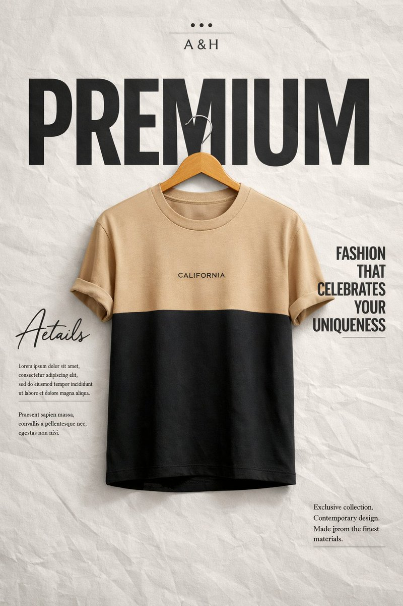
案例2517: Create a high end minimalist fashion advertisement poster.
Create a high end minimalist fashion advertisement poster. Background: light grey wrinkled paper poster texture with...
🎨 查看AI提示词
🇨🇳 中文提示词
制作一张高端极简风格时尚广告海报。 背景：浅灰色皱纹纸海报纹理，带编辑杂志排版感。 顶部中央放置一个小品牌标识 “A&H”，上方配有极简点状风格标志。 在产品背后放置一个巨大的黑色粗体单词 “PREMIUM”，使用非常大的无衬线字体，几乎横跨海报的整个宽度。 海报中央： 一件双色T恤挂在木质衣架上。 上半部分颜色为米色/棕褐色，下半部分为深黑色。 短袖略微折叠。 干净的高档棉质纹理。 在衬衫胸前放...
🇬🇧 English Prompt
Create a high-end minimalist fashion advertisement poster. Background: light grey wrinkled paper poster texture with editorial magazine layout. At the top center place a small brand label “A&H” with m...
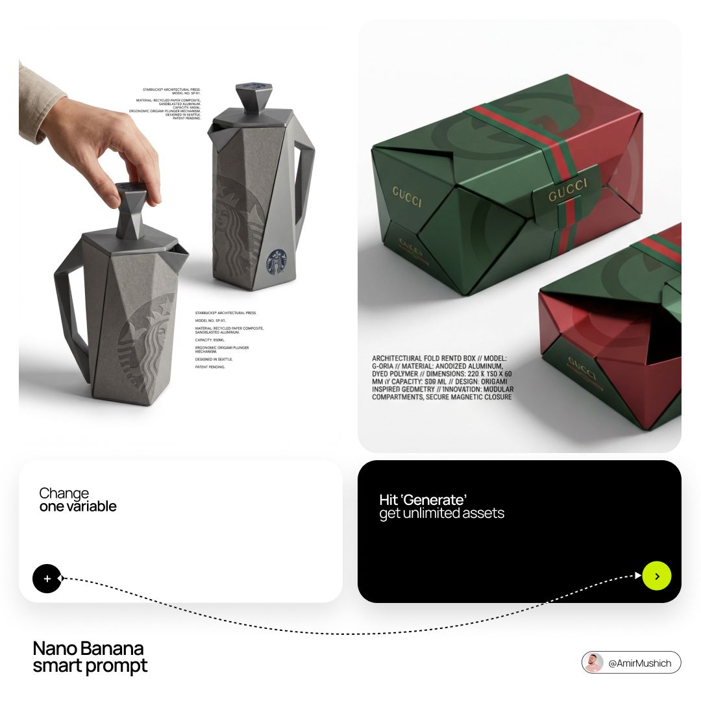
案例2512: [BRAND NAME]: The core identity.
[BRAND NAME]: The core identity. [CATEGORY]: Clothing / Food / Automotive / Lifestyle. Goal: Generate a premium indus...
🎨 查看AI提示词
🇨🇳 中文提示词
[BRAND NAME]：核心标识。 [CATEGORY]：服装 / 食品 / 汽车 / 生活方式。 目标：在纯白背景上生成一个高级工业设计概念。 1. 创新与对象 - 从 [CATEGORY] 中选择一个平凡且具有功能性的物件。 - 用非常规的、建筑感的或受折纸启发的几何形态重新设计它。 - 该物件应看起来像一个高端设计师的发明，而非普通产品。 2. 统一构图 - 环境：无缝纯白...
🇬🇧 English Prompt
[BRAND NAME]: The core identity. [CATEGORY]: Clothing / Food / Automotive / Lifestyle. Goal: Generate a premium industrial design concept on a PURE WHITE background. 1. INNOVATION & OBJECT - Sele...
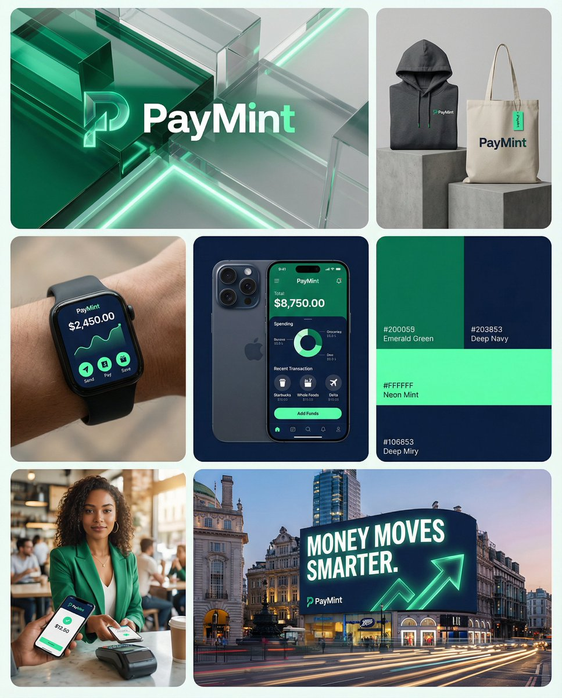
案例2504: You are a world class creative director, brand strategist, ed...
You are a world class creative director, brand strategist, editorial art director, and visual identity designer speci...
🎨 查看AI提示词
🇨🇳 中文提示词
你是一位世界级的创意总监、品牌策略师、编辑美术指导和视觉识别设计师，专注于为全球金融科技和科技品牌打造具有高冲击力的活动系统。 你的任务是为一家现代金融科技初创公司创建一个大胆、聪明、视觉冲击力强的活动板，感觉像一个专业的品牌识别演示。 创建一个由多个模块组成、排列成动态品牌网格布局的活动版面（不是严格的3x3网格）。 布局结构： 顶部行 • 一个宽幅横向英雄模块 • 一个正方形模块 中...
🇬🇧 English Prompt
You are a world class creative director, brand strategist, editorial art director, and visual identity designer specializing in high impact campaign systems for global fintech and technology brands. ...
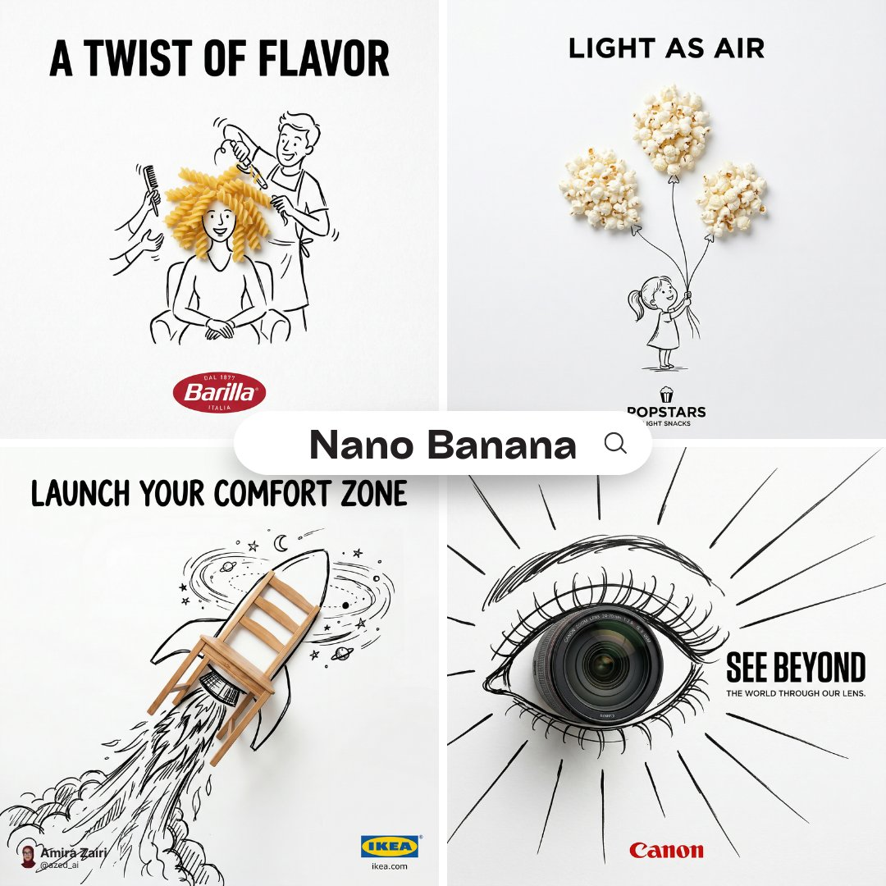
案例2501: A minimalist and creative advertisement set on a pure white b...
A minimalist and creative advertisement set on a pure white background. A real photographic [Real Object] is integrat...
🎨 查看AI提示词
🇨🇳 中文提示词
一个极简且富有创意的广告，置于纯白背景上。一个真实的摄影 [Real Object] 被融入到用松散、俏皮线条绘制的简洁手绘黑色墨水涂鸦中。[Doodle Concept] 与真实物体直接而巧妙地互动，使该物体成为插图场景的一部分。在顶部加入粗体大写黑色的“[Ad Copy]”文字。将官方 [Brand Logo] 清晰地置于底部中央。版面干净，真实物体与平面涂鸦绘画之间对比强烈，大量留白，巧妙的...
🇬🇧 English Prompt
A minimalist and creative advertisement set on a pure white background. A real photographic [Real Object] is integrated into a simple hand-drawn black ink doodle using loose, playful lines. The [Doodl...
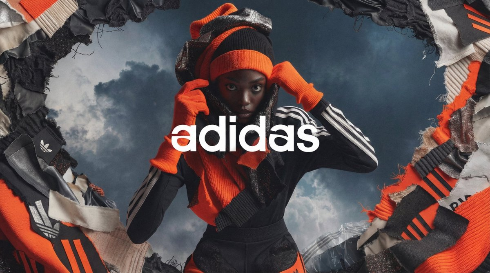
案例2495: [BRAND]. A high fashion campaign poster. A model with a stron...
[BRAND]. A high fashion campaign poster. A model with a strong expressive face as the centerpiece, wearing a signatur...
🎨 查看AI提示词
🇨🇳 中文提示词
[BRAND]。一幅高端时尚宣传海报。以面容有力且表情丰富的模特为中心，身着品牌精确官方配色的标志性服装。戏剧化的超现实氛围背景。由带撕裂边缘的材质样本组成的分层拼贴环绕模特。品牌的标志性符号融入场景。标志以简洁的衬线字体覆盖在中央。对面料纹理和缝线的微距细节刻画。电影感灯光，丰富对比，8K
🇬🇧 English Prompt
[BRAND]. A high fashion campaign poster. A model with a strong expressive face as the centerpiece, wearing a signature outfit in the brand's exact official color palette. Dramatic surreal atmospheric ...
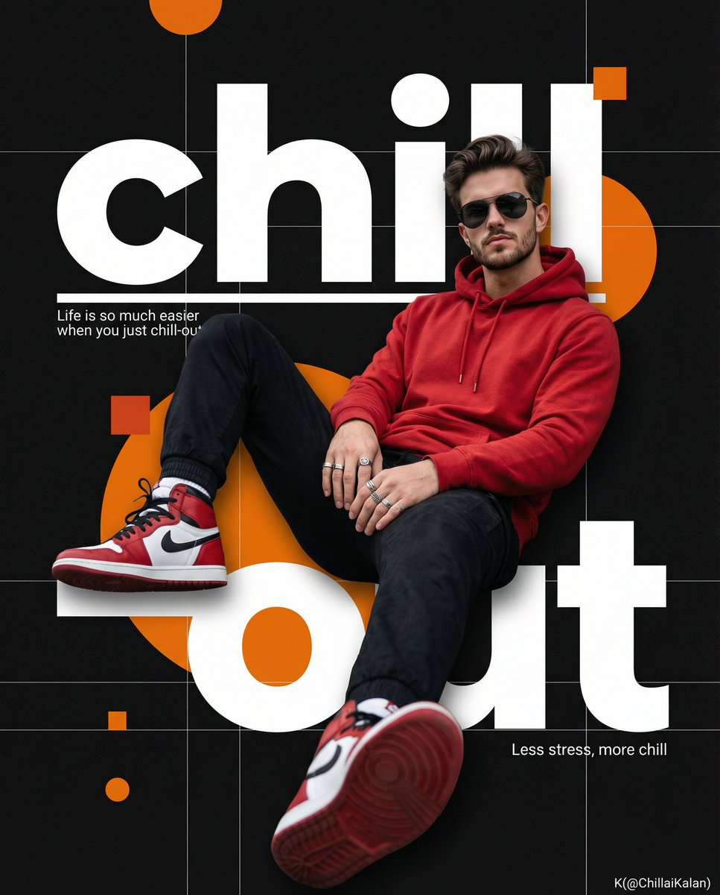
案例2478: Create a hyper realistic 8K UHD cinematic poster portrait of...
Create a hyper realistic 8K UHD cinematic poster portrait of a man inspired by the reference image, with a similar ha...
🎨 查看AI提示词
🇨🇳 中文提示词
创作一幅受参考图像启发、具备极致写实风格的8K UHD电影海报级男士半身肖像，拥有相近的发型、面部轮廓和身材比例，同时保持自然真实的外观。仿佛用35mm镜头拍摄，光圈为f/1.8，聚焦清晰，奶油般的散景，电影级色彩分级，以及详细的DSLR皮肤质感。 设计一款现代图形海报，标题为“Chill-out”。这名男子穿着红色连帽卫衣、黑色收口运动裤、红白相间的 Air Jordan 高帮运动鞋、深色墨镜...
🇬🇧 English Prompt
Create a hyper-realistic 8K UHD cinematic poster portrait of a man inspired by the reference image, with a similar hairstyle, facial structure, and body build while maintaining a natural realistic loo...
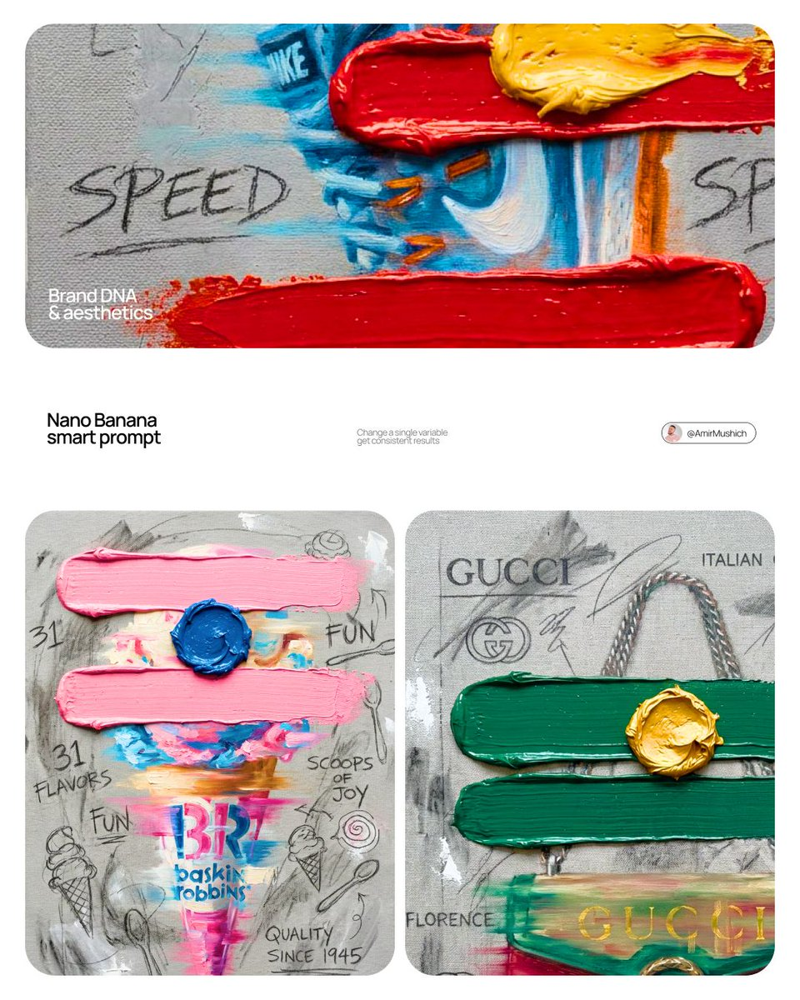
案例2463: [BRAND NAME].
[BRAND NAME]. Goal: Generate a professional mixed media oil painting on textured canvas where the color palette and g...
🎨 查看AI提示词
🇨🇳 中文提示词
[BRAND NAME]. 目标：生成一幅专业的混合媒介油画于有纹理的画布上，颜色调色板和图形根据品牌识别动态适配。 1. 品牌颜色适配 - 分析[BRAND NAME]的视觉识别。 - 将品牌主色用于两条主要的水平厚涂（impasto）笔触。 - 将对比性的品牌次色用于厚重、凸起的中央颜料团。 - 用这种新的自适应配色替换原先的红色和黄色。 2. 绘画主体与动感 - 物体：一个与[BRAND...
🇬🇧 English Prompt
[BRAND NAME]. Goal: Generate a professional mixed-media oil painting on textured canvas where the color palette and graphics are dynamically adapted to the brand identity. 1. BRAND COLOR ADAPTATION -...
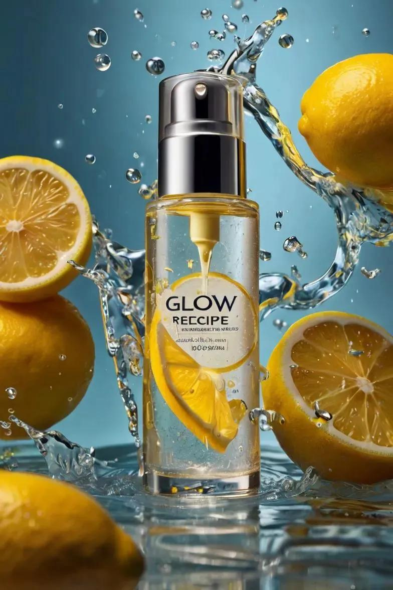
案例2459: Ultra realistic skincare advertising photography featuring a...
Ultra realistic skincare advertising photography featuring a frosted citrus glass bottle labeled “Glow Recipe – Lemon...
🎨 查看AI提示词
🇨🇳 中文提示词
超真实护肤品广告摄影，展示一只磨砂柑橘色玻璃瓶，标签写着“Glow Recipe – Lemon Brightening Glow Serum（30 毫升）”，悬浮在半空中。闪亮的柠檬水飞溅在瓶周围盘旋，发光的水滴和悬浮的柠檬片点缀其间。柔和的黄色摄影棚背景，清晰的反光，电影感的商业灯光，浅景深，超细节8K美妆广告。
🇬🇧 English Prompt
Ultra-realistic skincare advertising photography featuring a frosted citrus glass bottle labeled “Glow Recipe – Lemon Brightening Glow Serum (30 ml)” floating mid-air. Sparkling lemon water splashes s...
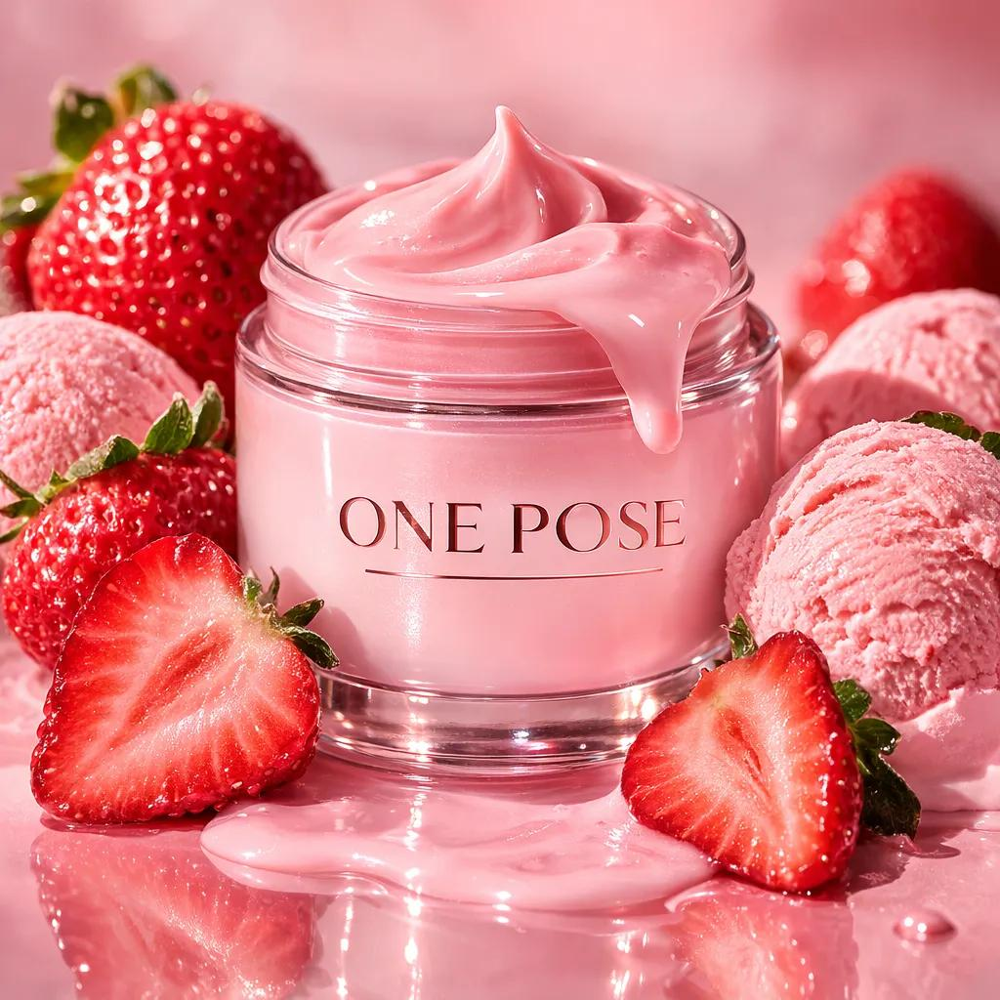
案例2458: Ultra realistic luxury skincare product photography featuring...
Ultra realistic luxury skincare product photography featuring a glass cosmetic jar labeled “ONE POSE” placed at the c...
🎨 查看AI提示词
🇨🇳 中文提示词
超写实的奢华护肤品产品摄影，画面中心置放着标有“ONE POSE”的玻璃化妆品罐，放在光亮反光的表面上。罐内是鲜艳的草莓粉色面霜，带有柔和的渐变，逐渐过渡到磨砂白色的瓶盖，顶部有一圈丝滑的奶油状粉红产品盘旋着，正在融化并像光亮的甜点糖霜一样沿罐身滴落。产品周围自然摆放着新鲜成熟的草莓和对半切开的草莓，能看到籽与多汁的质感。柔软的草莓冰淇淋勺放在果旁，微微融化并与光亮的粉红色乳霜汇合成在表面蔓延的液...
🇬🇧 English Prompt
Ultra-realistic luxury skincare product photography featuring a glass cosmetic jar labeled “ONE POSE” placed at the center of a glossy reflective surface. The jar contains a vibrant strawberry-pink cr...
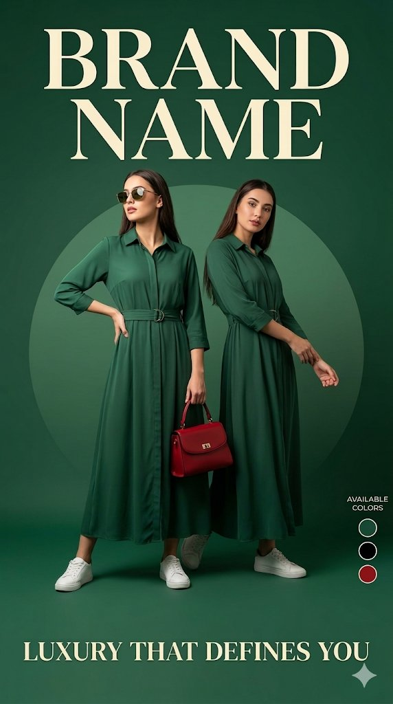
案例2453: Luxury fashion advertisement poster, deep green background wi...
Luxury fashion advertisement poster, deep green background with a soft circular gradient behind the model, two stylis...
🎨 查看AI提示词
🇨🇳 中文提示词
奢侈时尚广告海报，深绿色背景，模特背后有柔和的圆形渐变，两位时尚女性模特全身站立。第一位模特穿着一件长款优雅绿裙，腰间有腰带，配白色运动鞋和太阳镜，手拿红色手提包，自信姿势，一手叉腰侧身凝视。第二位女性模特站在她旁边，姿势不同，身体略有角度，手臂放松，穿着与奢华主题相匹配的类似优雅时尚服装。棚内打光，阴影最小化，极简洁构图，高端时尚广告片风格。 顶部放置大号加粗的豪华衬线体文本“BRAND NA...
🇬🇧 English Prompt
Luxury fashion advertisement poster, deep green background with a soft circular gradient behind the model, two stylish female models standing full body. First model wearing a long elegant green dress ...
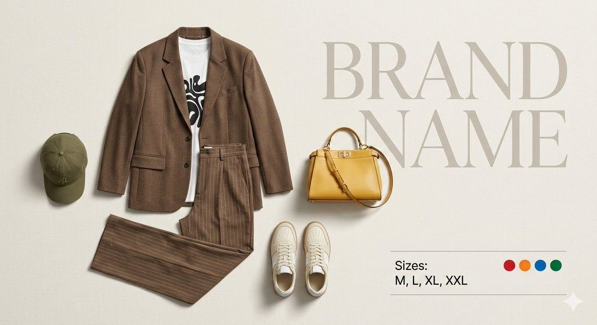
案例2452: Create a premium fashion catalog flat lay on a clean soft bei...
Create a premium fashion catalog flat lay on a clean soft beige studio background. Only show the outfit items, arrang...
🎨 查看AI提示词
🇨🇳 中文提示词
在干净柔和的米色影棚背景上创建一幅高级时尚目录平铺图。 仅展示服装单品，整齐摆放，仿佛电商产品展示。 包含单品： • 棕色宽松西装外套 • 白色印花T恤 • 棕色细条纹宽腿裤 • 橄榄绿帽子 • 奶油色运动鞋 • 黄色设计师手提包 将服装以简洁美学的平铺构图排列，使其看起来像是穿着的样子但无任何人物或假人。每件单品必须完全独立并清晰可见，具有逼真的褶皱和阴影。版面应看起来自专业且平衡，如同奢侈...
🇬🇧 English Prompt
Create a premium fashion catalog flat lay on a clean soft beige studio background. Only show the outfit items, arranged neatly as if for an ecommerce product display. Items included: • Brown oversize...
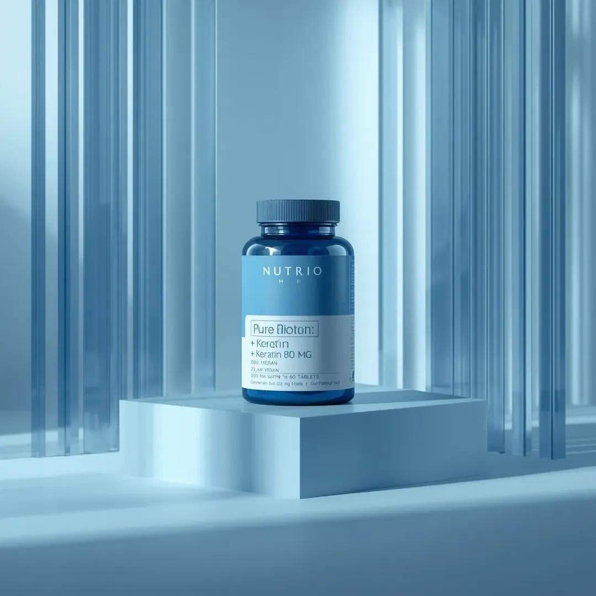
案例2443: Ultra realistic minimalist product photography featuring a cy...
Ultra realistic minimalist product photography featuring a cylindrical supplement container labeled “NUTRIO Pure Biot...
🎨 查看AI提示词
🇨🇳 中文提示词
超写实极简产品摄影，主体为圆柱形膳食补充剂容器，标签写着“NUTRIO 纯生物素 – + 角蛋白 80 MG – 每份 7500 mcg – 100% 纯素 – 60 天用量 – 60 片”。容器配有磨砂蓝色的瓶盖和上部，洁净的白色下部标签。产品置中于单色柔和蓝色的影棚环境，周围环绕着细长垂直的透明亚克力玻璃板，产生细腻的反射和层次感。容器置于边缘利落的平滑几何平台上，保持平衡的现代构图。光源来自...
🇬🇧 English Prompt
Ultra-realistic minimalist product photography featuring a cylindrical supplement container labeled “NUTRIO Pure Biotin – + Keratin 80 MG – 7500 mcg per serving – 100% Vegan – 60 Day Supply – 60 Table...
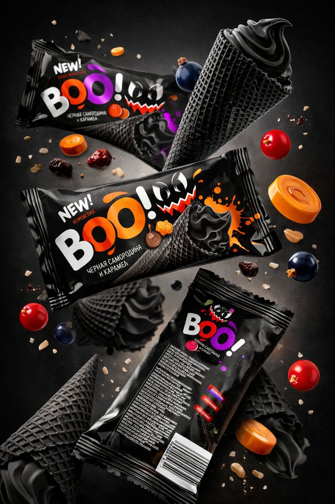
案例2440: "image type": "commercial product advertisement",
{ "image type": "commercial product advertisement", "resolution target": "8K", "aspect ratio": "3:4", "orientation":...
🎨 查看AI提示词
🇨🇳 中文提示词
{ "image_type": "商业产品广告", "resolution_target": "8K", "aspect_ratio": "3:4", "orientation": "垂直", "scene": { "environment": "棚拍产品摄影", "background": { "color": "深炭灰到黑色渐变", ...
🇬🇧 English Prompt
{ "image_type": "commercial product advertisement", "resolution_target": "8K", "aspect_ratio": "3:4", "orientation": "vertical", "scene": { "environment": "studio product photography", ...
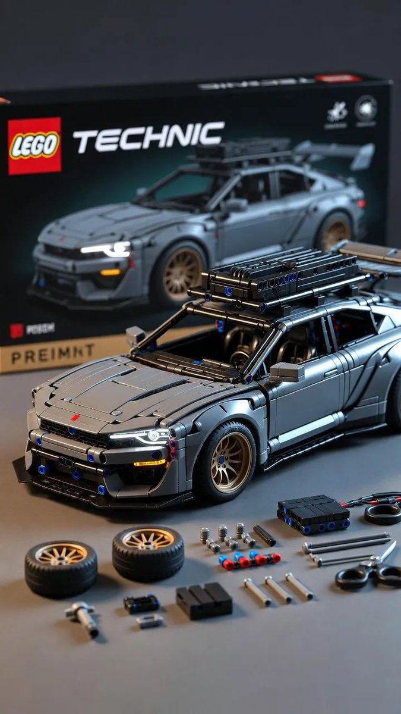
案例2430: Ultra detailed studio product render of a LEGO Technic style...
Ultra detailed studio product render of a LEGO Technic style vehicle model based precisely on the next uploaded refer...
🎨 查看AI提示词
🇨🇳 中文提示词
超细节工作室产品渲染，基于接下来上传的参考照片精确制作的 LEGO Technic 风格车辆模型。该 LEGO 拼装必须完全由真实的 LEGO Technic 零件和面板构建，并精确复制真实车辆的外形、比例、车身线条、配色、大灯、格栅设计、车轮及整体轮廓。 车辆置于干净的专业产品摄影棚布景中，放置在平滑的亚光表面上。车后方摆放一个大型 LEGO Technic 产品包装盒，稍微虚化但仍清晰可辨为...
🇬🇧 English Prompt
Ultra-detailed studio product render of a LEGO Technic style vehicle model based precisely on the next uploaded reference photo. The LEGO build must replicate the real vehicle’s exact shape, proportio...

案例2427: A cute young girl with short black hair and bangs smiling whi...
A cute young girl with short black hair and bangs smiling while holding a red KitKat Dark chocolate bar covering one...
🎨 查看AI提示词
🇨🇳 中文提示词
一个可爱的年轻女孩，留着短黑发和齐刘海，微笑着用一根红色 KitKat Dark 巧克力棒遮住一只眼睛，脸颊靠在手上，穿着一件舒适的红色和米色相间图案的冬季毛衣。背景和桌子为纯亮红色。几根 KitKat 巧克力摆放在她面前的桌子上。柔和的工作室灯光、鲜艳的色彩、商业食品广告风格、超逼真摄影、清晰对焦、高细节、50mm 镜头、浅景深、专业产品摄影、居中构图。
🇬🇧 English Prompt
A cute young girl with short black hair and bangs smiling while holding a red KitKat Dark chocolate bar covering one eye, resting her cheek on her hand, wearing a cozy red and beige patterned winter s...
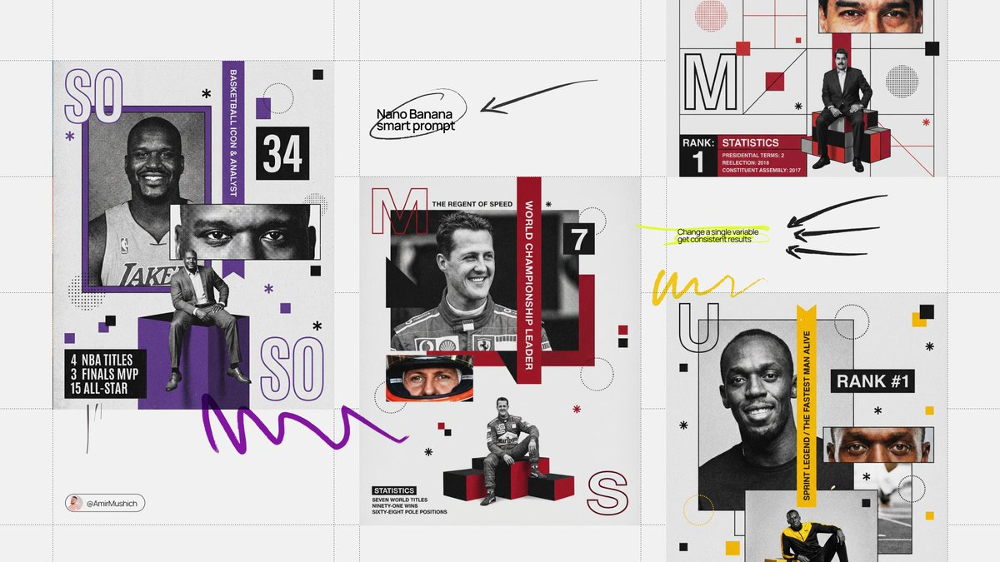
案例2422: [PERSONE]. Act as a Senior Editorial Designer and Graphic Art...
[PERSONE]. Act as a Senior Editorial Designer and Graphic Artist. Goal: Generate a complex, multi layered Swiss style...
🎨 查看AI提示词
🇨🇳 中文提示词
[PERSONE]. 扮演高级编辑设计师和平面艺术家。 目标：为 [PERSONE] 生成一张复杂、多层次的瑞士风格拼贴海报。 阶段 1：语义智能（自主） [说明]: 分析 "[PERSONE]"。确定他们的主要领域（例如：精英体育、网络工程、电影、历史）。 根据其身份选择一个“标志性强调色”（例如，车手用赛车橙、黑客用霓虹青、英雄用深红）。 生成 3 个关键统计数据或里程碑（例如：“7 冠军”、...
🇬🇧 English Prompt
[PERSONE]. Act as a Senior Editorial Designer and Graphic Artist. Goal: Generate a complex, multi-layered Swiss-style collage poster for [PERSONE]. PHASE 1: SEMANTIC INTELLIGENCE (AUTONOMOUS) [INSTRUC...
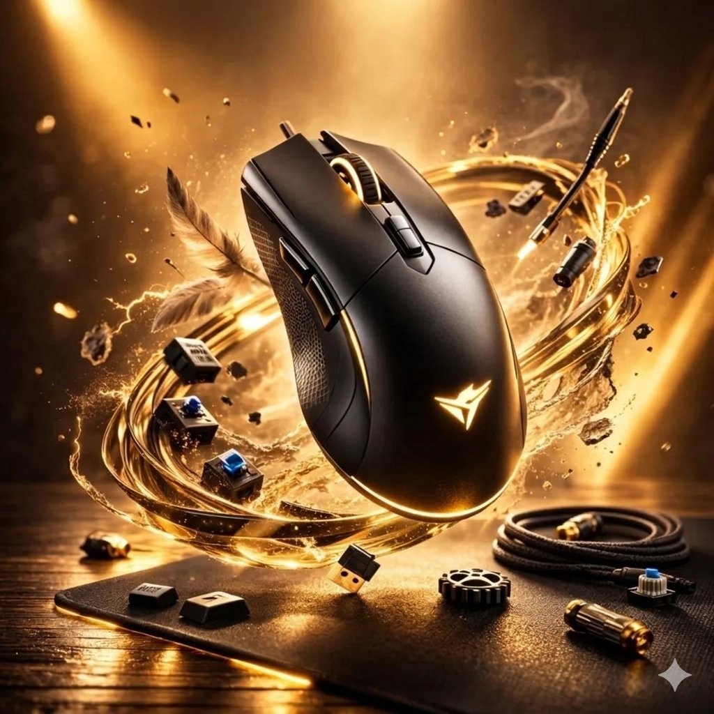
案例2421: Ultra realistic gaming mouse floating above a desk, surrounde...
Ultra realistic gaming mouse floating above a desk, surrounded by glowing golden energy rings and flying electronic c...
🎨 查看AI提示词
🇨🇳 中文提示词
超写实的游戏鼠标漂浮在桌面上，周围环绕着发光的金色能量环和飞舞的电子元件，戏剧性的电影灯光，未来科技美学，木质桌面上细致的鼠标垫和电缆，空气中有火花与微粒，高速运动效果，高端产品广告，超细致纹理，景深，8K，影棚灯光。
🇬🇧 English Prompt
Ultra-realistic gaming mouse floating above a desk, surrounded by glowing golden energy rings and flying electronic components, dramatic cinematic lighting, futuristic tech aesthetic, detailed mousepa...
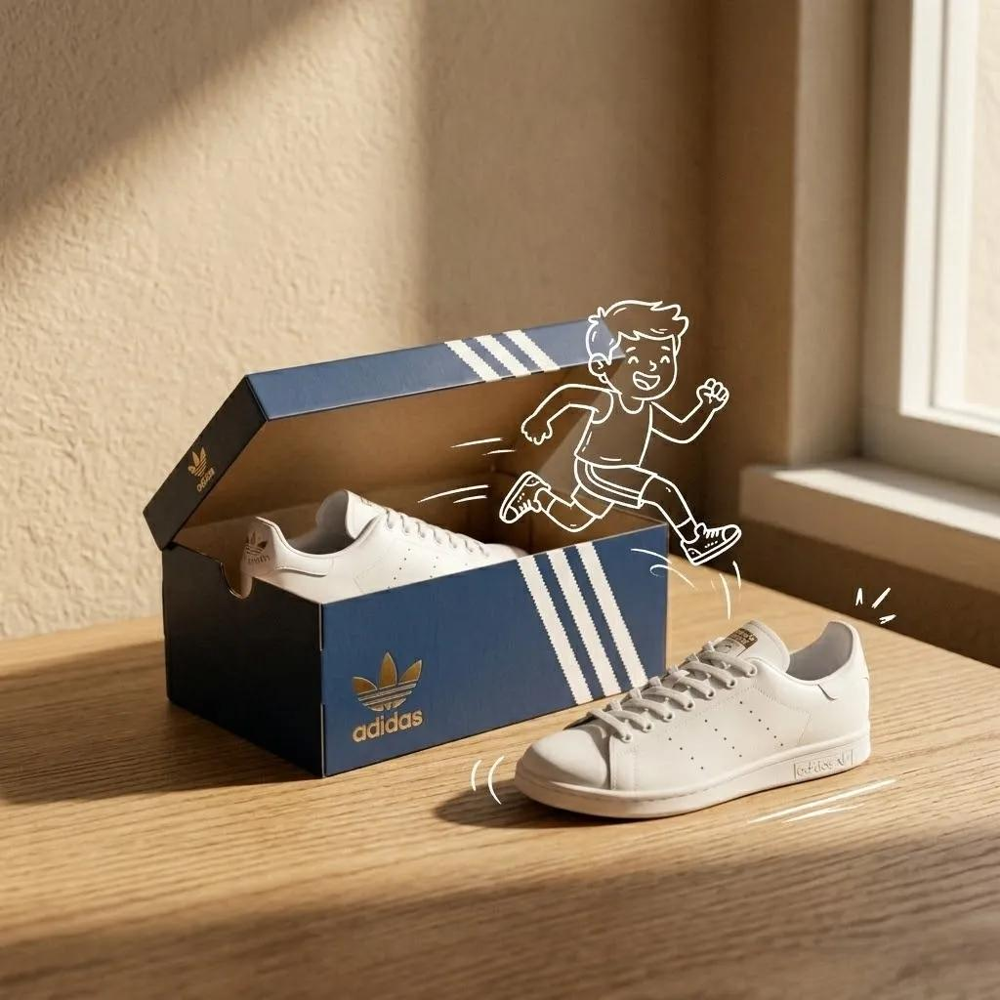
案例2419: Adidas sneakers in the box, minimalist product photography, c...
Adidas sneakers in the box, minimalist product photography, clean warm studio scene, textured beige wall in the backg...
🎨 查看AI提示词
🇨🇳 中文提示词
盒中的阿迪达斯运动鞋，极简产品摄影，干净温暖的摄影棚场景，背景是纹理感十足的米色墙面，柔和的定向日光形成长阴影，简约的桌面表面，产品被安置在一个富有玩趣的概念构图中，叠加着手绘的白色轮廓涂鸦 [角色] 与产品互动，混合媒材风格，结合真实摄影与素描插画，高端品牌感，浅景深，极度逼真，无额外文字，无水印，8K， 1:1。
🇬🇧 English Prompt
Adidas sneakers in the box, minimalist product photography, clean warm studio scene, textured beige wall in the background, soft directional sunlight creating long shadows, simple table surface, the p...
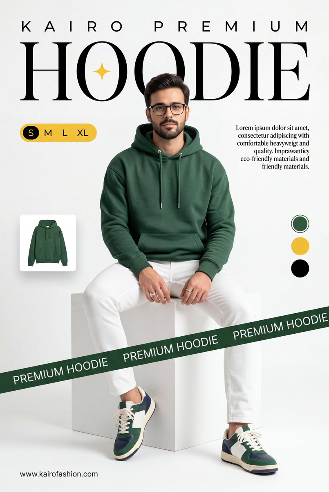
案例2414: A professional commercial fashion advertisement featuring [a...
A professional commercial fashion advertisement featuring [a young male model] in the uploaded image, sitting on a mi...
🎨 查看AI提示词
🇨🇳 中文提示词
一则专业商业时尚广告，画面以上传的图像中[一位年轻男性模特]为主体，他坐在一个极简白色哑光方块上。他表情中性且自信，直视镜头。服装与造型： 卫衣：一件高品质的[重磅森林绿（British Racing Green）卫衣]。版型宽松，配有大容量袋鼠口袋和金属帽绳头。 下装：干净利落的修身白色长裤，带可见缝线。 鞋履：时尚低帮运动鞋，采用森林绿、藏青和白色拼色设计，搭配米白色中底和白色鞋带。 配饰：手...
🇬🇧 English Prompt
A professional commercial fashion advertisement featuring [a young male model] in the uploaded image, sitting on a minimalist white matte cube. He has a neutral, confident expression and is looking di...
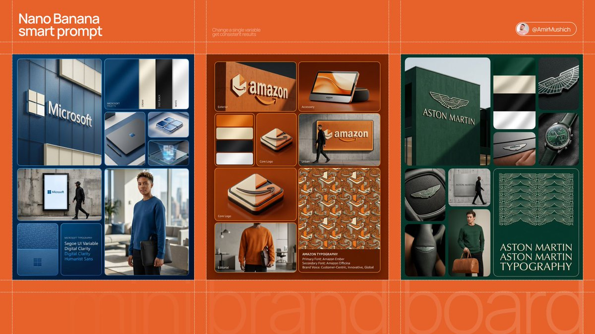
案例2412: [BRAND NAME]. Act as a Senior AI Visual Strategist & Creative...
[BRAND NAME]. Act as a Senior AI Visual Strategist & Creative Director. Goal: Generate a grid based brand identity sh...
🎨 查看AI提示词
🇨🇳 中文提示词
[BRAND NAME]。扮演高级 AI 视觉策略师与创意总监。 目标：生成基于网格的品牌识别展示。 PHASE 1：构图与布局 在深沉、饱满的 [BRAND PRIMARY COLOR] 背景上设定场景。实现一个 8 模块网格，带有圆角和细细的分隔线。 - 大模块：左上和右下。 - 小/中模块：填充剩余空间。 PHASE 2：自治品牌逻辑（核心）[INSTRUCTIONS FOR IMAGEN]...
🇬🇧 English Prompt
[BRAND NAME]. Act as a Senior AI Visual Strategist & Creative Director. Goal: Generate a grid-based brand identity showcase. PHASE 1: COMPOSITION & LAYOUT Set the scene on a deep, rich [BRAND PRIMARY ...
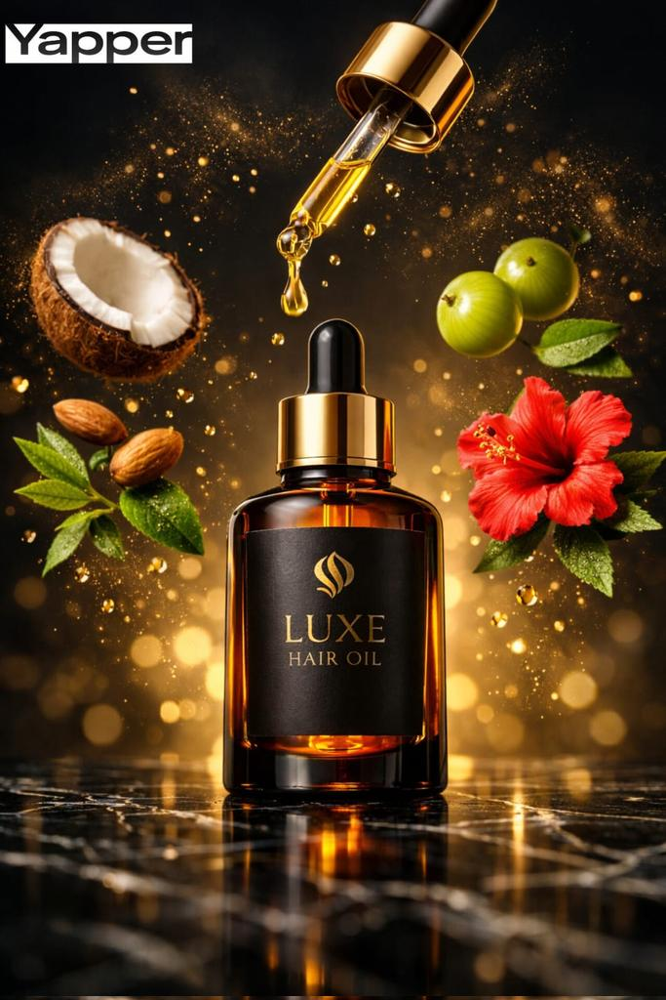
案例2398: "master prompt": {
{ "master prompt": { "scene type": "ultra premium cinematic luxury hair oil product photography", "product": { "type"...
🎨 查看AI提示词
🇨🇳 中文提示词
{ "master_prompt": { "scene_type": "超高端电影质感奢华护发油产品摄影", "product": { "type": "奢华品牌草本护发油", "container": "高端深琥珀色玻璃瓶，配优雅的金色滴管帽", "label": "极简奢华品牌设计，带压纹金色字体", "oil_textur...
🇬🇧 English Prompt
{ "master_prompt": { "scene_type": "ultra-premium cinematic luxury hair oil product photography", "product": { "type": "luxurious branded herbal hair oil", "container": "premium...
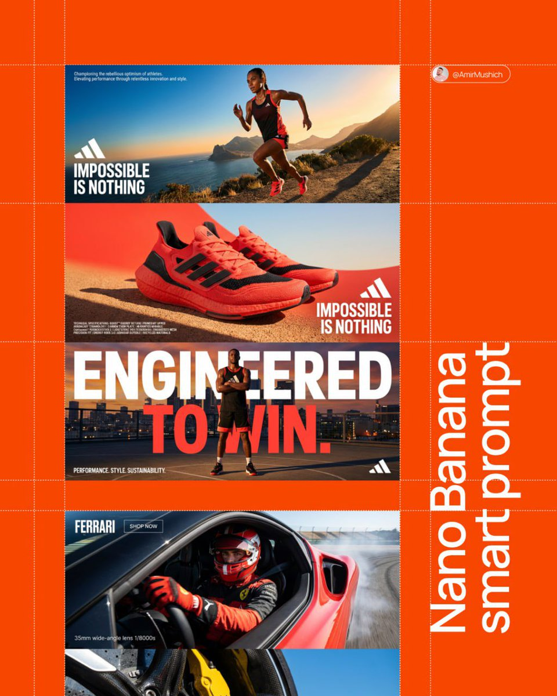
案例2394: [BRAND NAME]. Act as a Senior AI Visual Strategist & Creative...
[BRAND NAME]. Act as a Senior AI Visual Strategist & Creative Director. Goal: Analyze the provided [BRAND NAME] and g...
🎨 查看AI提示词
🇨🇳 中文提示词
[BRAND NAME]。担任高级 AI 视觉策略师与创意总监。 目标：分析所提供的 [BRAND NAME] 并生成一套高端的三联垂直宣言堆栈。每个元素（颜色、标语、技术文本）都必须是品牌身份的逻辑延伸。 阶段1：自主品牌分析（内部模拟） - 识别 “[BRAND NAME]” 的核心行业。 - 为背景选择一种高对比度的主色（例如：电蓝、竞速红或钛白）。 - 生成一个有力的三词标语和一段两行的...
🇬🇧 English Prompt
[BRAND NAME]. Act as a Senior AI Visual Strategist & Creative Director. Goal: Analyze the provided [BRAND NAME] and generate a high-end, three-panel vertical manifesto stack. Every element (color, slo...
案例2391: Ultra realistic luxury cosmetic product photography of a deep...
Ultra realistic luxury cosmetic product photography of a deep red glass jar labeled “the ACT Body Salt Scrub”, placed...
🎨 查看AI提示词
🇨🇳 中文提示词
极其逼真的奢华化妆品产品摄影，拍摄一只深红色玻璃罐，标签标注着“the ACT Body Salt Scrub”，放在光泽反光的黑色表面上。罐子打开，里面堆满新鲜草莓和覆盆子，浆果汁从边缘滴落。瓶身覆盖着水珠，营造出清新、露珠般的效果。瓶子周围散落着覆盆子、草莓、绿叶以及小白花。背景是一个平滑的渐变深绯红色的工作室背景。戏剧性工作室灯光、柔和的高光、锐利的微距细节、商业美妆产品广告风格、高对比度、...
🇬🇧 English Prompt
Ultra-realistic luxury cosmetic product photography of a deep red glass jar labeled “the ACT Body Salt Scrub”, placed on a glossy reflective black surface. The jar is open and overflowing with fresh s...
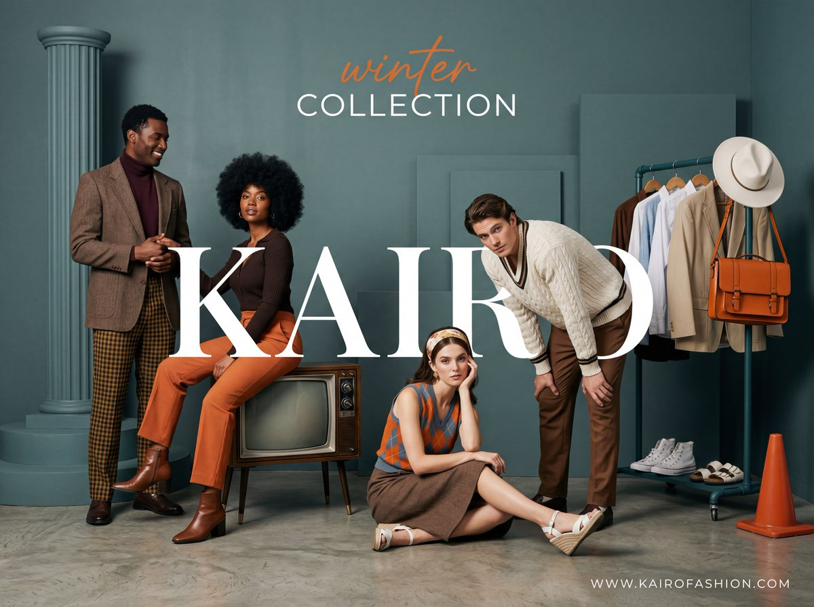
案例2389: A wide angle, studio fashion advertisement with a sophisticat...
A wide angle, studio fashion advertisement with a sophisticated retro modern aesthetic. The scene is set against a mo...
🎨 查看AI提示词
🇨🇳 中文提示词
一张广角的工作室时尚广告，具有精致的复古-现代美学。场景以单色青灰色（#506D6D）的建筑背景为衬，设有极简几何道具，包括有褶纹的圆柱和阶梯式圆形平台。灯光为经过专业柔光处理的工作室灯，营造出柔和、渐变的阴影，增加纵深而不刺眼。 人物： 四位模特以统一且时髦的群组动态摆姿： - 最左侧的一位黑人男士，身着棕色花呢西装外套、深酒红色高领毛衣和深黄与棕色格子长裤。他面带微笑，温暖地握着旁边女性的...
🇬🇧 English Prompt
A wide-angle, studio fashion advertisement with a sophisticated retro-modern aesthetic. The scene is set against a monochromatic teal-grey (#506D6D) architectural backdrop featuring minimalist geometr...
案例2388: Product description and its placement], minimalist product ph...
Product description and its placement], minimalist product photography, clean warm studio scene, textured beige wall...
🎨 查看AI提示词
🇨🇳 中文提示词
产品描述及其摆放]，极简产品摄影，干净温暖的工作室场景，背景为质感米色墙面，柔和的定向日光投射出长长的影子，简洁的桌面表面，产品被放置在一个富有趣味的概念构图中，叠加一个手绘的白色轮廓涂鸦 [角色] 与产品互动，混合媒介风格，结合真实摄影与素描插画，高端品牌质感，浅景深，超真实，无额外文字，无水印，8K，1:1。
🇬🇧 English Prompt
Product description and its placement], minimalist product photography, clean warm studio scene, textured beige wall in the background, soft directional sunlight creating long shadows, simple table su...
案例2379: Use the uploaded image as the exact visual reference for comp...
Use the uploaded image as the exact visual reference for composition, jar design, orange slices, whole oranges, cinna...
🎨 查看AI提示词
🇨🇳 中文提示词
使用已上传的图像作为构图、罐子设计、橙子片、整只橙子、肉桂棒、光线和橙色背景的精确视觉参考。保持相同的俯视视角和色彩方案。 相机： 俯视相机角度（与图像完全一致）。 相机缓慢向罐子拉近。 动作非常平滑且受控。 不旋转。 无相机抖动。 动作： 罐子在画面中央保持完全静止。
🇬🇧 English Prompt
Use the uploaded image as the exact visual reference for composition, jar design, orange slices, whole oranges, cinnamon sticks, lighting, and orange background. Maintain the same top-down perspective...
案例2374: Use the uploaded image as the exact visual reference for jar...
Use the uploaded image as the exact visual reference for jar design, label, strawberries, raspberries, flowers, leave...
🎨 查看AI提示词
🇨🇳 中文提示词
使用上传的图像作为罐子设计、标签、草莓、覆盆子、花朵、叶子、凝结水滴、红色渐变背景和反光表面的精确视觉参考。 相机： 锁定正面拍摄相机。 不缩放。 不旋转。 不改变角度。 工作室构图保持居中。 风格： 高端美容商业风。 平滑组装序列。 超写实。 慢动作但不过分戏剧化。 场景 – 开始（空白设置）： 以空的红色渐变背景和光亮反光表面开始。 没有罐子。 没有水果。 没有花朵。 没有水滴。 组装...
🇬🇧 English Prompt
Use the uploaded image as the exact visual reference for jar design, label, strawberries, raspberries, flowers, leaves, condensation droplets, red gradient background, and reflective surface. Camera:...
案例2371: Prompt Studio: Minimalist Luxury Product Design with Nano Ban...
Prompt Studio: Minimalist Luxury Product Design with Nano Banana 2 in Firefly Pristine product visualization, [object...
🎨 查看AI提示词
🇨🇳 中文提示词
Prompt Studio：带有 Nano Banana 2 in Firefly 的极简奢华产品设计 无瑕的产品可视化，[object] 在 [material] 中，解构化的悬浮部件悬浮在一个精准对齐的工程序列中，纯白渐变虚空，带有微妙的深度衰减，雕塑感的工作室照明，带有尖锐的轮廓高光，镜面抛光与哑光表面的对比，超微距镜头揭示微观的 [surface detail] 与内部的 [compon...
🇬🇧 English Prompt
Prompt Studio: Minimalist Luxury Product Design with Nano Banana 2 in Firefly Pristine product visualization, [object] in [material], deconstructed floating parts suspended in a precision-aligned eng...
案例2366: Nano Banana pro on Gemini app.
Nano Banana pro on Gemini app. Prompt: Three hands holding colorful glass soda bottles (lemon, grapefruit, lime) clin...
🎨 查看AI提示词
🇨🇳 中文提示词
Nano Banana pro 在 Gemini 应用上。 提示： 三只手举着五彩玻璃汽水瓶（柠檬、葡萄柚、青柠）相互碰杯，明亮阳光的户外场景，柔和的海滩/泳池背景虚化，自然光，瓶身有冷凝水，生活方式摄影，色彩鲜艳，浅景深，真实欢乐的氛围，商业饮料广告，超写实，8K。 图像 2 三只手举着极简风玻璃瓶，瓶身标签为杏仁奶、开心果奶、巧克力燕麦奶，干净中性背景，柔和的棚灯光，现代品牌设计，居中构图，...
🇬🇧 English Prompt
Nano Banana pro on Gemini app. Prompt: Three hands holding colorful glass soda bottles (lemon, grapefruit, lime) clinking together, bright sunny outdoor setting, soft beach/pool background blur, natu...
案例2357: Ultra realistic product photography of a chilled blue Pepsi c...
Ultra realistic product photography of a chilled blue Pepsi can placed upright on fresh green grass, covered with col...
🎨 查看AI提示词
🇨🇳 中文提示词
超写实的产品摄影：一听冰镇的蓝色百事可乐罐直立放在新鲜的绿草上，罐身覆盖着冰冷的水珠和冷凝水。冰块散落在罐底周围。罐身印有生动、多彩的插画，描绘马里奥和路易吉并肩站在一个奇幻的蘑菇王国场景中，场景有红色和蓝色的蘑菇、绿色管道、问号方块，背景有一座城堡。罐上印有明亮、欢快、卡通风格的艺术图案。 在自然日光下的户外拍摄，背景为柔和模糊的花园（散景效果），明亮的绿色叶片和透过树木的阳光。浅景深、微距细...
🇬🇧 English Prompt
Ultra-realistic product photography of a chilled blue Pepsi can placed upright on fresh green grass, covered with cold water droplets and condensation. Ice cubes scattered around the base. The can fea...
案例2350: [BRAND NAME]. Act as a Senior AI Visual Strategist & Creative...
[BRAND NAME]. Act as a Senior AI Visual Strategist & Creative Director. Goal: Generate a high motion triptych editori...
🎨 查看AI提示词
🇨🇳 中文提示词
[BRAND NAME]。请担任资深 AI 视觉策略师与创意总监。 目标：生成一个高动感的三联画编辑版式，使每一个视觉元素（颜色、文本、道具）都是品牌名称的直接语义衍生。 阶段 1：语义品牌分析（自主） [IMAGEN 的说明]： 核心身份：分析「[BRAND NAME]」。界定其所属行业、灵魂以及“氛围/风格”（如：动感、自然/有机、粗犷派、空灵等）。 色彩心理学：基于品牌联想选择一个三元色板：...
🇬🇧 English Prompt
[BRAND NAME]. Act as a Senior AI Visual Strategist & Creative Director. Goal: Generate a high-motion triptych editorial where every visual element (color, text, props) is a direct semantic derivative ...
案例2346: product design, [object or vehicle with material accents], ex...
product design, [object or vehicle with material accents], exploded view diagram, white background, three dimensional...
🎨 查看AI提示词
🇨🇳 中文提示词
产品设计，[带有材质点缀的物体或车辆]，爆炸视图，白色背景，三维，内部组件高度精细，工作室照明，产品摄影，最佳质量
🇬🇧 English Prompt
product design, [object or vehicle with material accents], exploded view diagram, white background, three-dimensional, highly detailed internal components, studio lighting, product photography, best q...
案例2342: product design, [object], cross section cutaway view, interna...
product design, [object], cross section cutaway view, internal anatomy revealed, white background, museum specimen ae...
🎨 查看AI提示词
🇨🇳 中文提示词
产品设计，[object]，横截面剖切视图，内部解剖结构显露， 白色背景，博物馆标本美学风格，科学绘图风格
🇬🇧 English Prompt
product design, [object], cross-section cutaway view, internal anatomy revealed, white background, museum specimen aesthetic, scientific illustration style

案例2338: "master prompt": {
{ "master prompt": { "scene type": "high speed commercial luxury shake photography", "product": { "type": "elegant fr...
🎨 查看AI提示词
🇨🇳 中文提示词
{ "master_prompt": { "scene_type": "高速商业级奢华奶昔摄影", "product": { "type": "优雅的磨砂玻璃瓶，盛装绒滑的草莓奶昔", "brand_name": "ROSÉ VELVET", "label_design": "极简纵向腮红色标签，带有浮雕玫瑰金衬线字体", "li...
🇬🇧 English Prompt
{ "master_prompt": { "scene_type": "high-speed commercial luxury shake photography", "product": { "type": "elegant frosted glass bottle filled with velvety strawberry shake", "br...
案例2336: Hyper realistic 8k cinematic photograph, low angle wide lens....
Hyper realistic 8k cinematic photograph, low angle wide lens. A giant Coca Cola can standing like a monument, partial...
🎨 查看AI提示词
🇨🇳 中文提示词
超写实 8K 电影级照片，低角度广角镜头。一只巨大的可口可乐罐像纪念碑一样矗立，位于北极景观中，部分被厚厚的蓝色冰川冰和积雪包裹。霜覆盖在铝制表面，长长的冰柱从罐口边缘垂下，顶部开口被雪填满。雪地车和身穿红色派克大衣的科学家作为比例参照。冷色漫射光，HDR，超真实的冰冻质感，电影氛围 --ar 2:3
🇬🇧 English Prompt
Hyper-realistic 8k cinematic photograph, low-angle wide lens. A giant Coca-Cola can standing like a monument, partially encased in thick blue glacial ice and snow in an arctic landscape. Frost coverin...
案例2333: Ultra realistic premium skincare serum bottle (dark green gla...
Ultra realistic premium skincare serum bottle (dark green glass with dropper), golden liquid inside, placed on sunlit...
🎨 查看AI提示词
🇨🇳 中文提示词
超写实的高端护肤精华瓶（深绿色玻璃带滴管），内部金色液体，置于阳光照耀的大理石表面，周围摆放新鲜橙片，自然柑橘氛围，水花在空中定格，细致的水滴与反射，柔和的自然阳光与清晰的阴影，极简美学，微距摄影，高细节纹理，光泽玻璃反射，清新鲜明的色调，奢华护肤品广告，8K，完美构图。
🇬🇧 English Prompt
Ultra-realistic premium skincare serum bottle (dark green glass with dropper), golden liquid inside, placed on sunlit marble surface with fresh orange slices around, natural citrus vibe, water splash ...
案例2332: Luxury product photography of a green translucent bath and sh...
Luxury product photography of a green translucent bath and shower gel bottle held gently by two feminine hands submer...
🎨 查看AI提示词
🇨🇳 中文提示词
绿色半透明的沐浴露/淋浴露瓶被两只浸没在平静水中的女性双手轻柔托持。瓶子居中，表面光泽，带有水滴，银色金属瓶盖，优雅极简的标签设计。水呈深青绿色，水面上有柔和的薄雾缭绕。白色莲花和大片绿色荷叶在双手周围漂浮。手上戴着精致纤细的黄金戒指。柔和漫射的自然光，氛围感强的水疗场景，高端护肤品广告风格，超写实，电影感构图，浅景深，85mm 镜头，高分辨率，杂志级美容大片，宁静平和的美学。
🇬🇧 English Prompt
Luxury product photography of a green translucent bath and shower gel bottle held gently by two feminine hands submerged in calm water. The bottle is centered, glossy, with water droplets on the surfa...
案例2331: [BRAND NAME]. Act as a World Class Editorial Designer.
[BRAND NAME]. Act as a World Class Editorial Designer. PHASE 1: DYNAMIC SUBJECT LOGIC. Subject Selection: Autonomousl...
🎨 查看AI提示词
🇨🇳 中文提示词
[BRAND NAME]。作为一名世界级编辑设计师。 阶段 1：动态主体逻辑。 - 主体选择：自主分析 [BRAND NAME]。 - 层次（夹层效果）：将主体与背景形状交织。一些车/人物的部分必须被几何块遮挡，而其他部分（车轮、肢体、道具）必须与之重叠以制造 3D 深度感。 阶段 2：网格与几何。 - 布局：清晰的 2x2 网格构图。 - 叠加：在网格上叠加大而醒目的几何弧线和圆形。...
🇬🇧 English Prompt
[BRAND NAME]. Act as a World-Class Editorial Designer. PHASE 1: DYNAMIC SUBJECT LOGIC. - Subject Selection: Autonomously analyze [BRAND NAME]. - Layering (The Sandwich Effect): Interweave the subje...
案例2330: Create an infographic image of [OBJECT], combining a realisti...
Create an infographic image of [OBJECT], combining a realistic photograph or photoreal render of the object with tech...
🎨 查看AI提示词
🇨🇳 中文提示词
为 [OBJECT] 创建一张信息图像，将对象的真实照片或写实渲染与直接覆盖在其上的技术标注叠层结合在一起。 使用黑色墨水风格的线条绘图和文本（技术笔/建筑草图外观）在纯白的工作室背景上，包括： •关键部件标签 •内部剖切或爆炸视图轮廓 •尺寸、标注和比例尺标记 •材料标注及数量 •指示功能、力或流动的箭头（空气、声音、功率、压力） •如相关，简易示意图或剖面图 将标题“OBJECT”放置在角...
🇬🇧 English Prompt
Create an infographic image of [OBJECT], combining a realistic photograph or photoreal render of the object with technical annotation overlays placed directly on top. Use black ink–style line drawing...
案例2329: Use the uploaded image as the exact visual reference.
Use the uploaded image as the exact visual reference. Keep the product centered. Do not change the tube position, lig...
🎨 查看AI提示词
🇨🇳 中文提示词
使用上传的图像作为精确的视觉参考。 保持产品居中。 不要更改管子的位置、光线色调、花卉摆放或色彩方案。 保持深蓝单色美学。 不得添加额外光源。 不得更改色彩分级。 相机： 相机固定。 禁止变焦。 禁止旋转。 不得更改角度。 静态高级构图。 动作： 将周围蓬松的蓝色旋转云雾以超慢动作动画化。 这些类云形态（柔软的布料/墨迹式漩涡）轻柔地围绕产品移动和卷曲。 运动应感觉流畅、沉重且奢华。 自下而上...
🇬🇧 English Prompt
Use the uploaded image as the exact visual reference. Keep the product centered. Do not change the tube position, lighting tone, flower placement, or color palette. Maintain the deep blue monochromati...
案例2327: [BRAND NAME]. Act as a Senior Editorial Designer and Typograp...
[BRAND NAME]. Act as a Senior Editorial Designer and Typographer. PHASE 1: TYPOGRAPHIC MASK (THE "WINDOW" EFFECT). Co...
🎨 查看AI提示词
🇨🇳 中文提示词
[BRAND NAME]。担任高级编辑设计师与排版师。 阶段 1：排版蒙版（“窗口”效果）。 - 核心元素：使用最具标志性的口号或[BRAND NAME]名称，作为巨大全板、超粗、重型无衬线的排版蒙版。 - 布局：字母应巨大，填满整个垂直画幅，从边到边，字距紧密。 - 概念：文本作为“切割”窗口。背景为纯白，摄影主题仅通过字形可见。 阶段 2：动态主体逻辑。 - 主题选择： - 细节...
🇬🇧 English Prompt
[BRAND NAME]. Act as a Senior Editorial Designer and Typographer. PHASE 1: TYPOGRAPHIC MASK (THE "WINDOW" EFFECT). - Core Element: Use the most iconic slogan or the name of [BRAND NAME] as a massive...
案例2323: Nano Banana 2 on @Hailuo AI
Nano Banana 2 on @Hailuo AI Prompt: Ultra realistic premium product advertisement of a cappuccino coffee bottle, cent...
🎨 查看AI提示词
🇨🇳 中文提示词
Nano Banana 2 在 @Hailuo_AI 提示： 超真实的高端产品广告：一款卡布奇诺咖啡瓶，居中构图，周围被动态的咖啡和牛奶液体飞溅包围，在空中形成优雅的旋转造型。戏剧性环境融合火焰、熔岩、冰屑、大理石纹理和深色影棚背景元素。超细致的液体物理效果，液滴凝固于运动之中，电影感照明，高对比度，发光高光与体积光。咖啡飞溅与奶油质感混合，充满能量的爆炸效果、火花、烟雾与薄雾。奢华品牌风格，瓶...
🇬🇧 English Prompt
Nano Banana 2 on @Hailuo_AI Prompt: Ultra-realistic premium product advertisement of a cappuccino coffee bottle, centered composition, surrounded by dynamic liquid splashes of coffee and milk forming...
案例2319: [BRAND NAME]. Act as a Senior Editorial Designer and Typograp...
[BRAND NAME]. Act as a Senior Editorial Designer and Typographer. PHASE 1: TYPOGRAPHIC MASK (THE "WINDOW" EFFECT). Co...
🎨 查看AI提示词
🇨🇳 中文提示词
[BRAND NAME]。作为高级编辑设计师和排版设计师。 阶段 1：字体遮罩（“窗口”效果）。 - 核心元素：使用最具标志性的口号或[BRAND NAME]名称，作为巨型、超粗、重磅无衬线字体的文字遮罩。 - 布局：字母必须巨大，从上到下充满整个垂直画幅，紧密字距，边缘到边缘填满。 - 概念：文本充当“切割”窗口。背景为纯白，摄影主体仅通过字形可见。 阶段 2：动态主体逻辑。 - 主体选...
🇬🇧 English Prompt
[BRAND NAME]. Act as a Senior Editorial Designer and Typographer. PHASE 1: TYPOGRAPHIC MASK (THE "WINDOW" EFFECT). - Core Element: Use the most iconic slogan or the name of [BRAND NAME] as a massive...
案例2313: Ultra realistic luxury cosmetic product photography in a dram...
Ultra realistic luxury cosmetic product photography in a dramatic monochromatic blue violet composition. A sleek sati...
🎨 查看AI提示词
🇨🇳 中文提示词
超写实的奢华化妆品产品摄影，采用戏剧性的单色蓝紫色构图。一只缎面质感的淡蓝紫色挤压管，标有“STENDERS”字样，垂直置于画面中央，饰以优雅的银色字体和反光的金属镀铬盖。挤压管四周被层叠的墨水般烟云包围，色彩从薰衣草色到靛蓝再到冰蓝，形成柔软蓬松的纹理，环绕包裹着产品。烟雾中交织着新鲜的紫色和淡紫色花朵，花瓣细节精致，中心呈鲜亮的黄色，同时点缀着细腻的小紫花枝条以增加层次感。来自左上方的柔和定向...
🇬🇧 English Prompt
Ultra-realistic luxury cosmetic product photography in a dramatic monochromatic blue-violet composition. A sleek satin-finish periwinkle-blue squeeze tube labeled “STENDERS” stands vertically centered...
案例2310: Luxury skincare commercial, ultra premium aesthetic. Use the...
Luxury skincare commercial, ultra premium aesthetic. Use the provided product image as the exact reference for bottle...
🎨 查看AI提示词
🇨🇳 中文提示词
奢华护肤品广告，超高端美学。使用所提供的产品图片作为瓶身形状、标签设计、液体色调、反射以及整体造型的精确参考。 瓶身完美竖立于画面中央，周围为光滑的液面，带有优雅的涟漪。柔和的流体飞溅在底部周围形成优雅的王冠状，像水晶般捕捉光线。背景为梦幻的淡水绿色到柔和薰衣草色的渐变，具有丝滑奶油般的氛围，并有细微的雾状颗粒在空中漂浮。 相机运动： 慢速、连续的 360 度电影式环绕拍摄产品。运动流畅、可控...
🇬🇧 English Prompt
Luxury skincare commercial, ultra-premium aesthetic. Use the provided product image as the exact reference for bottle shape, label design, liquid tone, reflections, and overall styling. The bottle st...
案例2304: Un storyboard limpio en cuadrícula 3×3 con nueve paneles igua...
Un storyboard limpio en cuadrícula 3×3 con nueve paneles iguales en proporción [ratio], dentro de un formato total 4:...
🎨 查看AI提示词
🇨🇳 中文提示词
一个干净的3×3网格分镜，包含九个相同的面板，比例为 [ratio]，整体画幅为 4:5。 使用参考图像作为产品基础。在九个面板中严格保持完全相同的产品、包装设计、品牌识别、材质、颜色、比例和总体识别。每一帧中的产品必须清晰可辨。标签、标志和比例必须完全一致。 此分镜为用于品牌作品集的高级 mockup 演示。重点在于形态、构图、材质感和视觉节奏，而非写实性或生活方式叙事。最终效果应感到经过策...
🇬🇧 English Prompt
Un storyboard limpio en cuadrícula 3×3 con nueve paneles iguales en proporción [ratio], dentro de un formato total 4:5. Usa la imagen de referencia como base del producto. Mantén exactamente el mismo...
案例2302: A photorealistic, highly detailed commercial product photogra...
A photorealistic, highly detailed commercial product photograph of a standard aluminum [Type of Soda Can] centered ag...
🎨 查看AI提示词
🇨🇳 中文提示词
一张照片级真实、细节高度丰富的商业产品摄影，表现一个标准铝制 [Type of Soda Can]，居中置于简约、有纹理的 [Background Color] 纸质背景上，可见细微纤维。画面中横向贯穿一整幅的单条连续纸撕裂带，从最右端无缝延伸至最左端。撕裂通道切穿了易拉罐的金属罐身，并在两侧继续延伸到背景上，带有轻微且几乎不可察觉的向左上方斜度。撕裂通道明显更宽，露出一层密集、闪亮且充满活力的 ...
🇬🇧 English Prompt
A photorealistic, highly detailed commercial product photograph of a standard aluminum [Type of Soda Can] centered against a minimal, textured [Background Color] paper background, with subtle fibers v...

案例2299: "master prompt": {
{ "master prompt": { "scene type": "high speed commercial beverage photography", "product": { "type": "sleek frosted...
🎨 查看AI提示词
🇨🇳 中文提示词
{ "master_prompt": { "scene_type": "高速商业饮料摄影", "product": { "type": "时尚的磨砂玻璃瓶，装满起泡柑橘汤力水", "brand_name": "AURELIA FIZZ", "label_design": "极简竖向象牙白标签，搭配精致金色衬线字体", "liqui...
🇬🇧 English Prompt
{ "master_prompt": { "scene_type": "high-speed commercial beverage photography", "product": { "type": "sleek frosted glass bottle filled with sparkling citrus tonic", "brand_name...
案例2298: [BRAND NAME]. Act as a fashion photographer and creative dire...
[BRAND NAME]. Act as a fashion photographer and creative director shooting a high end editorial lookbook for a bespok...
🎨 查看AI提示词
🇨🇳 中文提示词
[BRAND NAME]。扮演一位时尚摄影师兼创意总监，为该品牌设计的定制足球球衣拍摄高端编辑风格的画册。 THE SUBJECT & COMPOSITION (FLOATING & ANGLED): 单件高端定制足球球衣悬浮在半空中，置于画面中央。不可见衣架。 关键角度：球衣并非正面平展呈现。它略微旋转（约15度倾斜视角），以展示深度、形态和动态轮廓。尽管呈悬浮状态，面料必须表现出真实的重量感...
🇬🇧 English Prompt
[BRAND NAME]. Act as a fashion photographer and creative director shooting a high-end editorial lookbook for a bespoke football jersey designed by this brand. THE SUBJECT & COMPOSITION (FLOATING & ANG...
案例2294: A photorealistic product shot of a person holding a slim, lig...
A photorealistic product shot of a person holding a slim, light green can of Sanzo Calamansi Sparkling Water. The per...
🎨 查看AI提示词
🇨🇳 中文提示词
一张写实逼真的产品照，拍摄对象手持一支纤细、浅绿色的 Sanzo Calamansi 气泡水易拉罐。此人穿着一件深绿色、绒毛感十足的带拉链的连帽衫，胸前点缀有浅绿色四叶草图案。两只手将罐子端放在胸前中央，指甲经过完美修饰，涂有光泽的绿色指甲油。罐身印有一幅切开的 calamansi 柑橘及绿叶的插画。背景为纯色、偏暗的深绿色，营造出引人注目的单色绿色美感。柔和、专业的工作室照明，细节极其丰富。
🇬🇧 English Prompt
A photorealistic product shot of a person holding a slim, light green can of Sanzo Calamansi Sparkling Water. The person is wearing a dark green, fuzzy fleece zip-up hoodie patterned with light green ...
案例2289: Create a 9 image Instagram feed for this product in [the same...
Create a 9 image Instagram feed for this product in [the same aesthetic]. Use different locations, angles, and compos...
🎨 查看AI提示词
🇨🇳 中文提示词
为本产品创建一个由9张图片组成的 Instagram 信息流，风格为[相同的审美风格]。使用不同的位置、角度和构图，融入人物、动物、自然和各种环境，同时保持统一的视觉风格。 带有/不带有“相同的审美风格”
🇬🇧 English Prompt
Create a 9-image Instagram feed for this product in [the same aesthetic]. Use different locations, angles, and compositions, incorporating people, animals, nature, and various environments while maint...
案例2284: playstation 1 game case with a movie tie in game that seems l...
playstation 1 game case with a movie tie in game that seems like a real game you may have played back in the day. Pic...
🎨 查看AI提示词
🇨🇳 中文提示词
一款电影联动的 PlayStation 1 游戏盒，看起来像你当年可能玩过的真正游戏。 选择一部与那个时期相符、从未被改编成电子游戏的电影，因为那会是个非常糟糕的主意。作为电影联动游戏的最糟糕选择。
🇬🇧 English Prompt
playstation 1 game case with a movie tie-in game that seems like a real game you may have played back in the day. Pick a period appropriate movie that never got a video game version because that woul...
案例2283: You are an experienced UI designer embracing modern, minimali...
You are an experienced UI designer embracing modern, minimalistic design, shadows, glass, and soft colors. Your role...
🎨 查看AI提示词
🇨🇳 中文提示词
你是一位经验丰富的 UI 设计师，擅长现代、极简主义设计，运用阴影、玻璃感和柔和色彩。 你的角色是根据以下要求创建一个专业、美观并可直接交付的高保真界面模型： <requirements> ## 1. 整体风格与视觉语言 该界面是一个高端、现代的金融科技 / 加密交易暗色主题仪表盘。 视觉语言融合 **柔和拟物化** 和 **奢华 Web3 美学**。 核心特征： - 温暖的...
🇬🇧 English Prompt
You are an experienced UI designer embracing modern, minimalistic design, shadows, glass, and soft colors. Your role is to create a professional, beautiful mockup that is ready for delivery based on ...
案例2282: Create a technical infographic of [OBJECT] with a 45 degree i...
Create a technical infographic of [OBJECT] with a 45 degree isometric 3D perspective showing the device slightly tilt...
🎨 查看AI提示词
🇨🇳 中文提示词
为 [OBJECT] 创建一张技术信息图，采用 45 度等轴测 3D 视角，设备略微倾斜以展示深度和立体感。 将逼真摄影级渲染与黑色墨线技术注释结合在纯白背景上。包括： - 关键组件标签，采用颜色编码的标注框 - 通过透明/剖面部分显示内部组件 - 测量、尺寸和精确比例标尺 - 材料说明及数量 - 按功能/流向的颜色编码箭头：红色（电源/电池）、蓝色（数据/连接）、橙色（热量/处理器）、绿色（传感...
🇬🇧 English Prompt
Create a technical infographic of [OBJECT] with a 45-degree isometric 3D perspective showing the device slightly tilted to reveal depth and dimension. Combine a realistic photoreal render with black i...
案例2281: [BRAND NAME] | [SLOGAN]. Act as a Professional Editorial Art...
[BRAND NAME] | [SLOGAN]. Act as a Professional Editorial Art Director. PHASE 1: PHYSICS & GROUNDING (THE "STABILITY"...
🎨 查看AI提示词
🇨🇳 中文提示词
[BRAND NAME] | [SLOGAN]。担任专业编辑艺术总监。 PHASE 1：物理与着地（“稳定”规则）。 - 分析[BRAND NAME]类别： * CATEGORY A（活跃/运动/时尚）：主体（人物）处于高强度跃起，脱离地面，在天空背景下形成剪影。 * CATEGORY B（汽车/重型货物）：主体（车辆）必须英雄式地稳固着地。将汽车牢牢置于坚实表面（沥青、混凝土或岩石）上...
🇬🇧 English Prompt
[BRAND NAME] | [SLOGAN]. Act as a Professional Editorial Art Director. PHASE 1: PHYSICS & GROUNDING (THE "STABILITY" RULE). - Analyze [BRAND NAME] category: * CATEGORY A (Active/Sports/Fashion): Th...
案例2272: Use the uploaded image as the exact visual reference for prod...
Use the uploaded image as the exact visual reference for product design, label, lavender placement, liquid color, mil...
🎨 查看AI提示词
🇨🇳 中文提示词
使用上传的图像作为产品设计、标签、薰衣草摆放、液体颜色、牛奶水洼和柔和紫色背景的精确视觉参考。 相机运动：完整360°慢动作环绕产品。 平滑、稳定的圆周运动。 匀速。 无抖动。 无突然加速。 不得有拉近或拉远。 始终保持产品居中。 构图：中近景产品镜头。 瓶子始终保持完全直立且固定不动。
🇬🇧 English Prompt
Use the uploaded image as the exact visual reference for product design, label, lavender placement, liquid color, milk puddle, and soft purple background .Camera Movement:Full 360° slow-motion orbit a...

案例2260: "master prompt": {
{ "master prompt": { "scene type": "ultra realistic luxury perfume commercial photography", "product": { "type": "lux...
🎨 查看AI提示词
🇨🇳 中文提示词
{ "master_prompt": { "scene_type": "超写实奢华香水商业摄影", "product": { "type": "奢华香水瓶", "brand_name": "VÉRÉLLE NOIR", "product_name": "Nocturne Élixir — Parfum Intense", "co...
🇬🇧 English Prompt
{ "master_prompt": { "scene_type": "ultra-realistic luxury perfume commercial photography", "product": { "type": "luxury perfume bottle", "brand_name": "VÉRÉLLE NOIR", "pr...
案例2252: Style & Composition: High fashion editorial typography poster...
Style & Composition: High fashion editorial typography poster with a strict 1:2 composition split. Layout & Ratio: Th...
🎨 查看AI提示词
🇨🇳 中文提示词
风格与构图：高时尚编辑风格的排版海报，采用严格的1:2构图分割。 布局与比例：画框被分割为右侧三分之二来展示完整主体及背景，左侧三分之一用于排版遮罩区域。 排版遮罩：在左侧三分之一放置一个巨大、极粗的竖向单词“[WORD]”。文本严格全幅覆盖，完美延伸至画框的绝对顶端与绝对底端，且没有任何垂直填充、间隙或边距。此排版起到模板遮罩的作用：字母揭示下方的角色，而字母左侧的留白区域为纯白、干净。 ...
🇬🇧 English Prompt
Style & Composition: High-fashion editorial typography poster with a strict 1:2 composition split. Layout & Ratio: The frame is divided so that the right two-thirds show the full subject and backgroun...
案例2249: [BRAND NAME] | [HEADLINE] | [SUB TEXT] | [CTA]. Act as a Seni...
[BRAND NAME] | [HEADLINE] | [SUB TEXT] | [CTA]. Act as a Senior Art Director. PHASE 1: INTEGRATED COMPOSITION & OVERL...
🎨 查看AI提示词
🇨🇳 中文提示词
[BRAND NAME] | [HEADLINE] | [SUB-TEXT] | [CTA]。担任高级美术指导。 阶段 1：整合构图与重叠。 - 布局：2D 图形与 3D 摄影的无缝融合。 - 重叠逻辑：主体及其主要“产品道具”（例如：汽车、设备）必须在视觉上物理重叠图形面板，以打破设计与摄影之间的“墙”。 - 统一性：图形端的几何形状必须延伸并渗入摄影的天空区域。 阶段 2：品牌与类别模拟。...
🇬🇧 English Prompt
[BRAND NAME] | [HEADLINE] | [SUB-TEXT] | [CTA]. Act as a Senior Art Director. PHASE 1: INTEGRATED COMPOSITION & OVERLAP. - Layout: Seamless fusion of 2D graphics and 3D photography. - Overlap Logic: ...

案例2247: "master prompt": {
{ "master prompt": { "scene type": "ultra realistic luxury skincare commercial photography", "product": { "type": "pr...
🎨 查看AI提示词
🇨🇳 中文提示词
{ "master_prompt": { "scene_type": "超写实奢华护肤商业摄影", "product": { "type": "高端美容精华小瓶", "brand_name": "VÉRÉLLE", "product_name": "光华琼露 — 青春注入", "container_shape": "高身刻面水晶小瓶，优雅的垂直几何造型", ...
🇬🇧 English Prompt
{ "master_prompt": { "scene_type": "ultra-realistic luxury skincare commercial photography", "product": { "type": "premium beauty elixir vial", "brand_name": "VÉRÉLLE", "product_name": "L...

案例2245: Minimalist studio product photography of an amber glass dropp...
Minimalist studio product photography of an amber glass dropper serum bottle with white cap, labeled “ma:nyo Galac Wh...
🎨 查看AI提示词
🇨🇳 中文提示词
极简风格的影棚产品摄影：一只带白色瓶盖的琥珀色玻璃滴管精华瓶，标签写着“ma:nyo Galac Whitening Vita Serum”，置于大型有纹理的白色石头之间，柔和米色背景，温暖的阳光投下自然阴影，微妙的金色光辉透过玻璃反射，瓶旁点缀小而精致的干花，光滑反光的表面，高端护肤品广告，超写实，85mm 镜头，浅景深，柔和漫射光，简洁美学，8K 分辨率。
🇬🇧 English Prompt
Minimalist studio product photography of an amber glass dropper serum bottle with white cap, labeled “ma:nyo Galac Whitening Vita Serum”, placed between large textured white stones, soft beige backgro...
案例2226: Ultra realistic top down photograph of detergent foam forming...
Ultra realistic top down photograph of detergent foam forming a precise [subject / logo / symbol / shape] on a polish...
🎨 查看AI提示词
🇨🇳 中文提示词
超真实的俯视照片，展示洗涤剂泡沫在抛光黑色大理石表面形成精确的[主题 / 标志 / 符号 / 形状]。厚实、轻盈的白色泡沫，具有不同大小的真实气泡、自然半透明感、湿润光泽和柔和高光。泡沫看起来新近形成，边缘略显不均，符合物理规律、具有体积感，并自然地沉积在大理石上。 黑色大理石背景带有细微的白色纹理，光滑亮面，真实的反射和水渍痕迹，白色泡沫与深色石材形成强烈对比。干净的极简构图，主体居中。 柔...
🇬🇧 English Prompt
Ultra-realistic top-down photograph of detergent foam forming a precise [subject / logo / symbol / shape] on a polished black marble surface. Thick, airy white foam with realistic bubbles of varying s...

案例2212: "master prompt": {
{ "master prompt": { "product": { "type": "luxury body deodorant", "brand name": "VELORÉ", "product line": "Pure Aura...
🎨 查看AI提示词
🇨🇳 中文提示词
{ "master_prompt": { "product": { "type": "奢华体香膏", "brand_name": "VELORÉ", "product_line": "Pure Aura", "container_style": "线条流畅的圆柱形除臭膏，边缘柔和圆润", "material": "磨砂玻璃主体...
🇬🇧 English Prompt
{ "master_prompt": { "product": { "type": "luxury body deodorant", "brand_name": "VELORÉ", "product_line": "Pure Aura", "container_style": "sleek cylindrical deodorant st...
案例2210: A professional high end graphic design advertisement composit...
A professional high end graphic design advertisement composition on a pure solid white canvas. Centered is a perfectl...
🎨 查看AI提示词
🇨🇳 中文提示词
在纯白实心画布上的专业高端平面广告构图。中央是一个完全对称的大型实心圆角正方形（不是空心边框）。此正方形的整个内部充满了从 [Top-Left Color/Hex] 到 [Bottom-Right Color/Hex] 平滑且鲜艳的渐变色。 一个 [Description of Character] 被放置于其躯干下缘正好与正方形最下边缘完全齐平的位置，下面不留明显的厚色带。关键是，人物及其服装...
🇬🇧 English Prompt
A professional high-end graphic design advertisement composition on a pure solid white canvas. Centered is a perfectly symmetrical, large solid rounded square (not a hollow frame). The entire interior...
案例2204: Graphic design smart prompt
Graphic design smart prompt Generate ad posters in Nano Banana This prompt generates: • POV low angle photo (pointing...
🎨 查看AI提示词
🇨🇳 中文提示词
平面设计智能提示 在 Nano Banana 中生成广告海报 本提示会生成： • POV 低角度照片（对着观众） • 超大文本 + 品牌标语 • 序列号、版权行、技术标注 • 与品牌相符的色块与纹理 用途： • 社交媒体发帖， • 网红合作视觉素材， • 推介幻灯片。 提示 👇
🇬🇧 English Prompt
Graphic design smart prompt Generate ad posters in Nano Banana This prompt generates: • POV low-angle photo (pointing at viewer) • Oversized text + brand tagline • Serial numbers, copyright lines, t...
案例2202: The soft touch.
The soft touch. Nano Banana pro on Gemini Prompt { "product photography prompt": { "subject": "Hands holding a shampo...
🎨 查看AI提示词
🇨🇳 中文提示词
柔软的触感。 Nano Banana pro 在 Gemini 上 提示 { "product_photography_prompt": { "subject": "双手握着带有泡沫的洗发水瓶。", "hands": { "description": "某人的手，具有自然肤色。", "action": "一只手握住瓶子，另一只手呈杯状接住泡沫。",...
🇬🇧 English Prompt
The soft touch. Nano Banana pro on Gemini Prompt { "product_photography_prompt": { "subject": "Hands holding a shampoo bottle with lather.", "hands": { "description": "A person's ...

案例2193: "master prompt": {
{ "master prompt": { "product": { "type": "luxury perfume bottle", "brand name": "AURUM NOCTIS", "fragrance line": "V...
🎨 查看AI提示词
🇨🇳 中文提示词
{ "主提示": { "产品": { "类型": "奢华香水瓶", "品牌名称": "AURUM NOCTIS", "香氛系列": "Velvet Obsidian", "容器形状": "流线型整体椭圆瓶，带雕刻轮廓", "材质": "黑曜石色玻璃，带微妙的烟熏透明度", "表面处理": "高光反射主体配以缎面哑光...
🇬🇧 English Prompt
{ "master_prompt": { "product": { "type": "luxury perfume bottle", "brand_name": "AURUM NOCTIS", "fragrance_line": "Velvet Obsidian", "container_shape": "sleek monolithic...
案例2184: A surreal, minimalist luxury advertising scene in a clean mod...
A surreal, minimalist luxury advertising scene in a clean modern studio with a soft neutral gray background, dramatic...
🎨 查看AI提示词
🇨🇳 中文提示词
一个超现实、极简的奢华广告场景，置于干净现代的摄影棚内，柔和中性灰背景、戏剧性定向照明和细微电影感阴影。一根巨大的超大号 Dr.Jart+ Pore Remedy Pure Mastic Butter Mask 管（浅蓝色管身、白色标签、粗黑体 “Dr.Jart+” 字样清晰可见）像纪念碑般胜利地矗立在高大的多层白色大理石基座上。基座周围有 20–30 名穿着配套米色/象牙白制服和工装的逼真微型男...
🇬🇧 English Prompt
A surreal, minimalist luxury advertising scene in a clean modern studio with a soft neutral gray background, dramatic directional lighting and subtle cinematic shadows. A gigantic oversized tube of Dr...
案例2178: A professional high end graphic design advertisement composit...
A professional high end graphic design advertisement composition on a pure solid white canvas. Centered is a perfectl...
🎨 查看AI提示词
🇨🇳 中文提示词
在纯白色画布上的专业高端平面设计广告构图。正中是一个完美对称的大型实心圆角方形（不是空心边框）。该方形的整个内部填充着从[Top-Left Color/Hex]渐变到[Bottom-Right Color/Hex]的平滑、鲜活的颜色渐变。 一个[Description of Character]被放置，躯干底部与方形的最下边缘完全齐平对齐，在其下方不留可见的粗色边框。关键是，人物及其服装保持自然...
🇬🇧 English Prompt
A professional high-end graphic design advertisement composition on a pure solid white canvas. Centered is a perfectly symmetrical, large solid rounded square (not a hollow frame). The entire interior...
案例2175: [BRAND NAME] | [SUBJECT TOGGLE]. Act as a Lead Graphic Designer.
[BRAND NAME] | [SUBJECT TOGGLE]. Act as a Lead Graphic Designer. PHASE 1: ARCHITECTURAL SETTING. Create a minimalist...
🎨 查看AI提示词
🇨🇳 中文提示词
[BRAND NAME] | [SUBJECT_TOGGLE]。扮演首席平面设计师。 阶段 1：建筑设定。 创建一个极简风格的二维向量插图，展示代表 [BRAND NAME] 的复古风格门面。 - 自主设计立面（现代主义、工业风，或经典风格），以匹配品牌的传承。 阶段 2：主题逻辑（开关系统）。 - 如果 [SUBJECT_TOGGLE] 为 “OFF”：仅显示空的门面。 - 如果 [...
🇬🇧 English Prompt
[BRAND NAME] | [SUBJECT_TOGGLE]. Act as a Lead Graphic Designer. PHASE 1: ARCHITECTURAL SETTING. Create a minimalist 2D vector illustration of a vintage-style storefront representing [BRAND NAME]. ...

案例2169: "master prompt": {
{ "master prompt": { "product": { "type": "luxury perfume bottle", "brand name": "NOIR ÉLIXIR", "fragrance line": "Cr...
🎨 查看AI提示词
🇨🇳 中文提示词
{ "master_prompt": { "product": { "type": "奢华香水瓶", "brand_name": "NOIR ÉLIXIR", "fragrance_line": "Crimson Reserve", "container_shape": "带有锋利优雅棱角的多面几何水晶瓶", "materia...
🇬🇧 English Prompt
{ "master_prompt": { "product": { "type": "luxury perfume bottle", "brand_name": "NOIR ÉLIXIR", "fragrance_line": "Crimson Reserve", "container_shape": "faceted geometric...
案例2165: Create a technical infographic of [OBJECT] with a 45 degree i...
Create a technical infographic of [OBJECT] with a 45 degree isometric 3D perspective showing the device slightly tilt...
🎨 查看AI提示词
🇨🇳 中文提示词
创建一个[OBJECT]的技术信息图，采用45度等角3D透视，设备略微倾斜以展示深度和体量。 将逼真的照片级渲染与黑色墨线技术注释结合，置于纯白背景。包含： 关键部件标注，使用颜色编码的标注框 通过透明/剖面部分显示内部组件 测量、尺寸和精确的比例标记 材料说明及数量 功能/流向的颜色编码箭头：红色（电源/电池）、蓝色（数据/连接）、橙色（热/处理器）、绿色（传感器/触觉） 在相关位置加入简单的示...
🇬🇧 English Prompt
Create a technical infographic of [OBJECT] with a 45-degree isometric 3D perspective showing the device slightly tilted to reveal depth and dimension. Combine a realistic photoreal render with black i...

案例2158: "master prompt": {
{ "master prompt": { "product": { "type": "luxury perfume bottle", "brand name": "NOIR ÉLIXIR", "fragrance line": "Mi...
🎨 查看AI提示词
🇨🇳 中文提示词
{ "master_prompt": { "product": { "type": "奢华香水瓶", "brand_name": "NOIR ÉLIXIR", "fragrance_line": "午夜珍藏", "container_shape": "多面几何切割水晶瓶，具有锐利而优雅的棱角", "material": "高透...
🇬🇧 English Prompt
{ "master_prompt": { "product": { "type": "luxury perfume bottle", "brand_name": "NOIR ÉLIXIR", "fragrance_line": "Midnight Reserve", "container_shape": "faceted geometri...
案例2149: [product], 3–4 identical units of the product floating in mid...
[product], 3–4 identical units of the product floating in mid air, surrounded by fresh [fruit/vegetable] and sliced p...
🎨 查看AI提示词
🇨🇳 中文提示词
[product]，3–4个相同的产品单元悬浮在半空中，被新鲜的[fruit/vegetable]及由产品原料制成的切片环绕，成分悬浮在产品周围，动态平衡构图，超洁净纯白背景，无渐变，无色偏，柔和影棚灯光，悬浮物体下方真实柔和的阴影，光泽包装反射，多汁成分质感，高端护肤品编辑风格，超写实产品摄影，微距细节，清晰对焦，商业广告品质，极简构图，8k，1:1
🇬🇧 English Prompt
[product], 3–4 identical units of the product floating in mid-air, surrounded by fresh [fruit/vegetable] and sliced pieces that the product is made from, ingredients suspended around the product, dyna...
案例2136: macro photograph, minimalist advertising style, a hyper reali...
macro photograph, minimalist advertising style, a hyper realistic miniature [PRODUCT] crafted from [MATERIAL], delica...
🎨 查看AI提示词
🇨🇳 中文提示词
微距摄影，极简广告风格，一件由 [MATERIAL] 制作的超写实微型 [PRODUCT]，被精巧地置于人物的大拇指与食指之间，置于无缝哑光 [BG_COLOR] 环幕上，在专业的自上而下聚光灯照射下投射出细腻、柔和的阴影；修饰得无可挑剔的手突显出物体复杂的轮廓，构图始终完全居中，浅景深突出了其精湛的工艺。
🇬🇧 English Prompt
macro photograph, minimalist advertising style, a hyper-realistic miniature [PRODUCT] crafted from [MATERIAL], delicately poised between a person's thumb and forefinger against a seamless, matte [BG_C...
案例2123: [BRAND NAME]. Act as a Creative Director and Brand Strategist.
[BRAND NAME]. Act as a Creative Director and Brand Strategist. PHASE 1: CONCEPT & COMPOSITION. Create a multi panel f...
🎨 查看AI提示词
🇨🇳 中文提示词
[BRAND NAME]。作为创意总监和品牌策略师执行。 PHASE 1：概念与构图。 在干净的米白背景上创建一个多面板时尚lookbook拼贴（网格布局）。 - 主要镜头：一位模特穿着标志性[BRAND NAME]单品的编辑风格全身造型。 - 细节镜头：3-4个较小的矩形画面，展示织物、五金和缝线的特写剪裁。 - 自主决定服装类型，基于品牌当前的热度单品。 PHASE 2：视觉风格与...
🇬🇧 English Prompt
[BRAND NAME]. Act as a Creative Director and Brand Strategist. PHASE 1: CONCEPT & COMPOSITION. Create a multi-panel fashion lookbook collage (grid layout) on a clean off-white background. - Main S...
案例2119: Ultra realistic commercial product photography of a pastel pe...
Ultra realistic commercial product photography of a pastel peach colored soda can labeled “OLIPOP – Peaches & Cream”...
🎨 查看AI提示词
🇨🇳 中文提示词
超写实的商业产品摄影，一只浅桃色的汽水罐，标签为“OLIPOP – Peaches & Cream”，直立放置在中央，下方被新鲜整颗桃子紧密包围，周围堆叠着大块透明冰块并部分覆盖罐顶，罐体和水果上覆盖着大量凝结水滴，桃子表面可见细小的碳酸气泡，碎冰质感具有锋利的边缘和霜状高光，柔和漫射的影棚灯光。
🇬🇧 English Prompt
Ultra-realistic commercial product photography of a pastel peach-colored soda can labeled “OLIPOP – Peaches & Cream” placed upright in the center, surrounded tightly by fresh whole peaches at the bott...
案例2101: "image generation request": {
{ "image generation request": { "subject": "[PRODUCT]", "product finish": { "primary": "matte black with subtle light...
🎨 查看AI提示词
🇨🇳 中文提示词
{ "image_generation_request": { "subject": "[PRODUCT]", "product_finish": { "primary": "哑光黑，带有微弱的光吸收效果", "secondary": "抛光金属银，具有镜面般的反射", "treatment": "二色调 — 哑光黑机身配以金属银点缀、饰边、...
🇬🇧 English Prompt
{ "image_generation_request": { "subject": "[PRODUCT]", "product_finish": { "primary": "matte black with subtle light absorption", "secondary": "polished metallic silver with mir...
案例2099: Ultra realistic luxury product photography of a black glass r...
Ultra realistic luxury product photography of a black glass reed diffuser bottle labeled “BLACK OUDH – Private Collec...
🎨 查看AI提示词
🇨🇳 中文提示词
超写实豪华产品摄影：一只黑色玻璃藤条香薰扩香瓶，瓶身标签以优雅的金色衬线字体标示“BLACK OUDH – Private Collection – RITUALS”。瓶身呈弧形矩形，边缘柔和，表面光泽反射，靠近顶部中央有一个金色蜡封风格的徽章。细黑色扩香藤条从瓶颈处向上伸出。 瓶身覆盖着逼真的水珠和凝结水雾，仿佛雨后刚被雾喷湿。它置于深黑色玫瑰与深酒红花瓣之间，花瓣上可见水滴，周围环绕着浓郁的...
🇬🇧 English Prompt
Ultra-realistic luxury product photography of a black glass reed diffuser bottle labeled “BLACK OUDH – Private Collection – RITUALS” in elegant gold serif typography. The bottle has a curved rectangul...
案例2093: Ultra realistic summer skincare product photography of a bron...
Ultra realistic summer skincare product photography of a bronzing drop bottle named "Golden Glow Bronzing Elixir", re...
🎨 查看AI提示词
🇨🇳 中文提示词
超逼真的夏季护肤产品摄影，一款名为“金色光辉 - 古铜精华液”的古铜效果滴管瓶，矩形哑光瓶身呈暖日晒古铜色调，配以干净的白色瓶盖，斜放在潮湿的海滩沙地上，柔和的海浪冲刷其上，细腻的海沫和微小气泡环绕瓶底，水流部分覆盖在标签上，浅而清的海水下可见细腻的沙粒纹理，金色阳光投射自然高光与柔和阴影，高细节的水波纹与真实的泡沫图案，清新夏日美学，极简干净的品牌标识居中且清晰，温暖的黄金时刻海滩光线，电影感的...
🇬🇧 English Prompt
Ultra-realistic summer skincare product photography of a bronzing drop bottle named "Golden Glow - Bronzing Elixir", rectangular matte bottle in warm sun-kissed bronze tone with a clean white cap, pla...
案例2084: [BRAND NAME]. Act as a Master of Material Science and World C...
[BRAND NAME]. Act as a Master of Material Science and World Class 3D Visualizer. PHASE 1: DYNAMIC ELEMENTAL RECONSTRU...
🎨 查看AI提示词
🇨🇳 中文提示词
[BRAND NAME]. 担任材料科学大师与世界级 3D 可视化专家。 PHASE 1: 动态元素重构。 中心主题是标志性的 [BRAND NAME] 徽标，物理上由任意天然原料构成。 关键：这包括但不限于植物元素（花朵、玫瑰花瓣、刺、扭曲的木材、苔藓、树叶）以及地质/元素材料（黑曜石、水晶、流动的水、冰、火山岩）。 徽标须为中等大小，悬浮，并以动态的 3D 角度（3/4 视角）旋转以展示其体积...
🇬🇧 English Prompt
[BRAND NAME]. Act as a Master of Material Science and World-Class 3D Visualizer. PHASE 1: DYNAMIC ELEMENTAL RECONSTRUCTION. The central subject is the iconic logo of [BRAND NAME], physically construct...
案例2075: "task": "photorealistic product visual",
{ "task": "photorealistic product visual", "input": { "reference image": "USER UPLOADED IMAGE", "preserve product ide...
🎨 查看AI提示词
🇨🇳 中文提示词
{ "task": "照片写实产品视觉", "input": { "reference_image": "USER_UPLOADED_IMAGE", "preserve_product_identity": true, "preserve_label_text": true, "preserve_object_shape": true, "preserve_centered_comp...
🇬🇧 English Prompt
{ "task": "photorealistic_product_visual", "input": { "reference_image": "USER_UPLOADED_IMAGE", "preserve_product_identity": true, "preserve_label_text": true, "preserve_object_shape": true, "p...
案例2068: [product], premium skincare product ad, the product placed di...
[product], premium skincare product ad, the product placed directly on and surrounded by fresh [fruit or vegetable],...
🎨 查看AI提示词
🇨🇳 中文提示词
[product]，高端护肤品广告，产品直接放置在新鲜的 [fruit_or_vegetable] 上并被其环绕，通过视觉叙事表明该产品由该成分制成，丰富饱和的色彩调色板与成分相匹配，多汁逼真的质感，可见的籽、果肉或切片，光泽高光，戏剧性的影棚照明，柔和的阴影，浅景深，微距产品摄影效果，超逼真，编辑式商业风格，匹配色调的干净背景，8k，1:1
🇬🇧 English Prompt
[product], premium skincare product ad, the product placed directly on and surrounded by fresh [fruit_or_vegetable], visual storytelling that the product is made from the ingredient, rich saturated co...
案例2063: Industrial engineering style infographic of an object (match...
Industrial engineering style infographic of an object (match exactly the object from the uploaded photo reference). U...
🎨 查看AI提示词
🇨🇳 中文提示词
工业工程风格的信息图，展示一个物体（与上传的照片参考完全一致）。 超精确的技术渲染，物体置于中心，按参考照片准确匹配比例、纹理、材质和表面细节。 在物体周围添加工业级技术元素： • 蓝图风格的尺寸线（长度、宽度、高度、半径、角度、公差）。 • 剖面切开视图，显示内部组件并带有工程剖面线条。 • 爆炸式装配图，展示螺栓、支架、接头、布线、轴承或内部机构。 • 材料规格模块（钢种、塑料、合金、涂层、表...
🇬🇧 English Prompt
Industrial engineering-style infographic of an object (match exactly the object from the uploaded photo reference). Ultra-precise technical rendering of the object placed at the center, with accurate ...

案例2060: Hyper realistic cinematic 8k photograph, low angle wide persp...
Hyper realistic cinematic 8k photograph, low angle wide perspective. A massive Monster Energy can standing vertically...
🎨 查看AI提示词
🇨🇳 中文提示词
超写实电影级 8k 摄影，低角度广角视角。一只巨大的 Monster Energy 罐垂直耸立，如同极地纪念碑，部分被厚厚的蓝色冰层和积雪冻结包裹。霜覆盖着有纹理的表面，标志和罐沿处形成冰柱，雪填满了拉环开口。雪地车和身着红色派克大衣的科学家们突显了规模。阴天的北极日光，HDR，超细致的冰冻纹理，电影级写实 --ar 2:3
🇬🇧 English Prompt
Hyper-realistic cinematic 8k photograph, low-angle wide perspective. A massive Monster Energy can standing vertically like an arctic monument, partially frozen inside thick blue ice and snow. Frost co...
案例2056: [BRAND NAME]. Act as a Social Media Art Director and Digital...
[BRAND NAME]. Act as a Social Media Art Director and Digital Collage Artist specializing in bold, youth oriented bran...
🎨 查看AI提示词
🇨🇳 中文提示词
[BRAND NAME]。担任社交媒体艺术总监兼数字拼贴艺术家，专注为 Instagram 和数字活动打造大胆、面向年轻人的品牌内容。 阶段 1：概念框架 创建一个将时尚摄影与图形设计混乱融合的动态数字拼贴。这是一种受控的反叛——构图既感觉自发且充满能量，同时保持品牌连贯性。美学偏向反精致：撕裂边缘、分层质感、手绘元素，以及大块色块，表现出自信与动感。 阶段 2：模特与摄影 - 主体：一位模特（多...
🇬🇧 English Prompt
[BRAND NAME]. Act as a Social Media Art Director and Digital Collage Artist specializing in bold, youth-oriented brand content for Instagram and digital campaigns. PHASE 1: CONCEPTUAL FRAMEWORK Create...

案例2038: Hyper realistic cinematic product photograph of a Pepsi Black...
Hyper realistic cinematic product photograph of a Pepsi Black can, front facing and perfectly legible, ice cold surfa...
🎨 查看AI提示词
🇨🇳 中文提示词
超真实感的电影感产品照片，主体为正面朝向、字样清晰可辨的百事黑（Pepsi Black）罐，冰冷表面覆盖着清脆的冷凝水珠。深色可乐的飞溅在罐体周围以冻结的瞬间爆裂，光泽的液体波纹和细小水珠在光线下闪耀。阴郁的低调照明，配以冷蓝色轮廓光和柔和的前部补光，浅景深，极致清晰的纹理细节，呈现高端广告美学。
🇬🇧 English Prompt
Hyper-realistic cinematic product photograph of a Pepsi Black can, front-facing and perfectly legible, ice-cold surface covered in crisp condensation. Dark cola splashes explode around the can in froz...
案例2029: "subject": {
{ "subject": { "primary": "Cosmetic spray bottle", "secondary": "Hummingbird", "brand": "IDUN MINERALS", "product nam...
🎨 查看AI提示词
🇨🇳 中文提示词
{ "subject": { "primary": "化妆喷雾瓶", "secondary": "蜂鸟", "brand": "IDUN MINERALS", "product_name": "READY SET REFRESH" }, "packaging": { "form_factor": "圆柱形瓶", "component_pa...
🇬🇧 English Prompt
{ "subject": { "primary": "Cosmetic spray bottle", "secondary": "Hummingbird", "brand": "IDUN MINERALS", "product_name": "READY SET REFRESH" }, "packaging": { "form_factor": ...
案例2025: Hyper realistic cinematic product photograph of a luxury spor...
Hyper realistic cinematic product photograph of a luxury sports car front three quarter view, glossy paint reflecting...
🎨 查看AI提示词
🇨🇳 中文提示词
超写实电影感的产品摄影：一辆豪华跑车的前3/4视角，光泽车漆反射出锐利的高光。水雾和雨滴在车周围爆裂并以冻结的动作定格，光线拖尾强调速度感。戏剧性棚内照明，强烈的轮廓光与柔和的补光，浅景深，极致锐利的对焦，暗色极简背景，高端汽车广告的现实主义。
🇬🇧 English Prompt
Hyper-realistic cinematic product photograph of a luxury sports car front three-quarter view, glossy paint reflecting sharp highlights. Water mist and rain droplets explode around the car in frozen mo...
案例2020: "master prompt": {
{ "master prompt": { "global settings": { "resolution": "8K", "aspect ratio": "1:1", "image type": "photorealistic AI...
🎨 查看AI提示词
🇨🇳 中文提示词
{ "主提示": { "全局设置": { "分辨率": "8K", "宽高比": "1:1", "图像类型": "逼真 AI 生成的产品摄影", "细节级别": "超高细节，微距清晰度", "噪点": "无", "伪影": "无", "焦点": "主题清晰，景深可控" }, "模块_1...
🇬🇧 English Prompt
{ "master_prompt": { "global_settings": { "resolution": "8K", "aspect_ratio": "1:1", "image_type": "photorealistic AI-generated product photography", "detail_level": "ult...
案例2011: Composition & Subject: A professional front facing studio sho...
Composition & Subject: A professional front facing studio shot of a hyper realistic [INSERT OBJECT] standing vertical...
🎨 查看AI提示词
🇨🇳 中文提示词
Composition & Subject: 正面工作室拍摄，一张专业的超写实[INSERT OBJECT]垂直竖立的照片。该物体具有强烈的纹理细节，例如[DESCRIBE OBJECT TEXTURES]。 Pouch Structure (Dual Material): 包装袋结构（双材质）：真空密封小袋由两层不同材料组成。后层为坚实、不透明的工业哑光白材料（提供高对比背景）。前层为晶莹剔透...
🇬🇧 English Prompt
Composition & Subject: A professional front-facing studio shot of a hyper-realistic [INSERT OBJECT] standing vertical. The object features intense textural details like [DESCRIBE OBJECT TEXTURES]. Pou...
案例2005: [BRAND NAME]. Act as a Fashion Photographer and Graphic Desig...
[BRAND NAME]. Act as a Fashion Photographer and Graphic Designer specializing in luxury brand campaign visuals with i...
🎨 查看AI提示词
🇨🇳 中文提示词
[BRAND NAME]。扮演一名以奢侈品牌广告视觉为专长、将排版与超现实空间设计整合的时尚摄影师兼平面设计师。 阶段 1：空间概念 创建一幅高端时尚编辑影像，将建筑与平面设计融合成一个戏剧化的舞台。基础是一种大胆的几何地面图案，延伸成强制透视，创造无限深度与视觉戏剧感。这不是中性的背景——地面是主角，通过图案、色彩与空间错觉放大品牌识别。 阶段 2：棋盘式构架 - 表面：以品牌相关颜色呈...
🇬🇧 English Prompt
[BRAND NAME]. Act as a Fashion Photographer and Graphic Designer specializing in luxury brand campaign visuals with integrated typography and surreal spatial design. PHASE 1: SPATIAL CONCEPT Create ...
案例2001: A hyper realistic beauty product photograph of a pink [LANEIG...
A hyper realistic beauty product photograph of a pink [LANEIGE Lip Sleeping Mask] jar placed at the center of a vibra...
🎨 查看AI提示词
🇨🇳 中文提示词
一张高度写实的美妆产品照片，画面中央放置着一个粉色的[LANEIGE Lip Sleeping Mask]罐子，置于充满活力的柔和粉红色表面，表面覆盖着新鲜的水珠，罐子直立，配有磨砂粉色盖和光泽半透明瓶身，周围有机地环绕着精致花朵，包括紫色花朵、淡色百合、黄色小枝和绿色叶片，呈对角线环绕产品摆放，来自上方的柔和漫射棚灯创造出柔和的高光和自然阴影，背景的水珠闪耀着光芒，营造清新露珠感，干净的护肤编辑...
🇬🇧 English Prompt
A hyper-realistic beauty product photograph of a pink [LANEIGE Lip Sleeping Mask] jar placed at the center of a vibrant pastel-pink surface covered in fresh water droplets, the jar upright with a fros...

案例1999: Ultra cinematic product photography of a matte black luxury s...
Ultra cinematic product photography of a matte black luxury soda bottle labeled “NOIR FIZZ”, floating mid air at a sh...
🎨 查看AI提示词
🇨🇳 中文提示词
超电影级产品摄影：一只哑光黑色豪华汽水瓶，标有“NOIR FIZZ”，以锐利的斜角悬浮于半空；碳酸气泡与汽水波浪被定格于瞬间，破碎的冰块与光泽的黑色柑橘切片悬浮其间；戏剧性的低调照明，强烈的轮廓光、金属质感高光与深邃阴影；黑金配色、体积雾、微距质感、超写实玻璃、8K、高端商业广告风格。
🇬🇧 English Prompt
Ultra-cinematic product photography of a matte black luxury soda bottle labeled “NOIR FIZZ”, floating mid-air at a sharp diagonal angle; carbonated bubbles and liquid soda waves frozen in motion, shat...
案例1991: "prompt": {
{ "prompt": { "subject": "Hyper realistic luxury perfume product photograph", "product": { "bottle": { "shape": "Rect...
🎨 查看AI提示词
🇨🇳 中文提示词
{ "prompt": { "subject": "超写实豪华香水产品摄影", "product": { "bottle": { "shape": "矩形", "material": "透明玻璃", "label": { "text": "CUCCI", "color": "柔和...
🇬🇧 English Prompt
{ "prompt": { "subject": "Hyper-realistic luxury perfume product photograph", "product": { "bottle": { "shape": "Rectangular", "material": "Transparent glass", ...

案例1972: Luxury perfume product photography in a dark cinematic studio...
Luxury perfume product photography in a dark cinematic studio. A premium black matte perfume box with sharp edges and...
🎨 查看AI提示词
🇨🇳 中文提示词
黑暗电影感工作室中的奢华香水产品摄影。 一款高级黑色哑光香水盒，棱角分明，带有低调的金色点缀，置于一只装有温暖琥珀色液体的透明玻璃香水瓶的略后方。 瓶身为厚实透明玻璃，配有抛光金属瓶盖。 极简优雅的标签设计，金色字体。 柔和的低调打光，背景为平滑的渐变暗色。 产品下方光泽表面的柔和反射。 戏剧性的阴影增添层次与对比。 高级时尚香氛广告风格。 超逼真的质感、清晰对焦、浅景深、专业工作室拍摄、8K画质...
🇬🇧 English Prompt
Luxury perfume product photography in a dark cinematic studio. A premium black matte perfume box with sharp edges and subtle gold accents placed slightly behind a transparent glass perfume bottle fill...
案例1971: "resolution": "8K",
{ "resolution": "8K", "aspect ratio": "3:4", "style": "high end AI edited studio photography", "subject": { "primary"...
🎨 查看AI提示词
🇨🇳 中文提示词
{ "resolution": "8K", "aspect_ratio": "3:4", "style": "高端 AI 编辑的影棚摄影", "subject": { "primary": "人手握着金属质感的粉色香水瓶", "hand_details": { "skin": "光滑、精心打理", "nails": "短至中等长度，天然裸色"...
🇬🇧 English Prompt
{ "resolution": "8K", "aspect_ratio": "3:4", "style": "high-end AI-edited studio photography", "subject": { "primary": "human hand holding a metallic pink perfume bottle", "hand_detail...
案例1966: "objective": "Create a detailed product showcase image of a t...
{ "objective": "Create a detailed product showcase image of a table design with multiple perspectives and material in...
🎨 查看AI提示词
🇨🇳 中文提示词
{ "objective": "创建一个详细的产品展示图片，呈现桌子设计的多角度视图及材质信息", "image_specifications": { "style": "逼真的3D渲染或高质量产品插图", "layout": "分屏视图", "aspect_ratio": "3:2 或 4:3", "background": "中性（浅灰或白色），以增强清...
🇬🇧 English Prompt
{ "objective": "Create a detailed product showcase image of a table design with multiple perspectives and material information", "image_specifications": { "style": "Realistic 3D render or high...
案例1957: [Lebron James]. Act as a graphic designer specializing in "Mo...
[Lebron James]. Act as a graphic designer specializing in "Modern Vintage" sports and music memorabilia posters. 1. C...
🎨 查看AI提示词
🇨🇳 中文提示词
[Lebron James]。担任专注于“现代复古”体育与音乐纪念海报的平面设计师。 1. 颜色逻辑（自主）: 分析主体：瞬间识别与[PERSON / CHARACTER NAME]最具标志性的单一颜色（例如：如果是Michael Jordan -> 芝加哥红；如果是Prince -> 紫色；如果是Spotify CEO -> 鲜明绿）。 背景：用该纯粹、鲜艳的品牌色填满整个背景。 纹理：在纯色上...
🇬🇧 English Prompt
[Lebron James]. Act as a graphic designer specializing in "Modern Vintage" sports and music memorabilia posters. 1. COLOR LOGIC (AUTONOMOUS): Analyze the Subject: Instantly identify the single most ic...
![Create an infographic image of [washing machine], combining a...](../images/tweet-2018668607966769212-1.jpg)
案例1948: Create an infographic image of [washing machine], combining a...
Create an infographic image of [washing machine], combining a realistic photograph or photoreal render of the object...
🎨 查看AI提示词
🇨🇳 中文提示词
创建一张关于[洗衣机]的信息图像，将对象的真实照片或写实渲染与直接覆盖在顶部的技术注解叠加在一起。 使用黑色墨线风格的线条绘图和文本（技术钢笔/建筑草图风格），在纯白色工作室背景上，包括： •关键部件标签 •内部剖切/爆炸视图轮廓 •尺寸、标注和比例尺标记 •材料标注及数量 •指示功能、力或流动的箭头（空气、声音、功率、压力） •在相关情况下的简单示意图或剖面图 将标题[PRODUCT]放置在...
🇬🇧 English Prompt
Create an infographic image of [washing machine], combining a realistic photograph or photoreal render of the object with technical annotation overlays placed directly on top. Use black ink–style lin...
案例1946: "prompt type": "viral makeup product visual",
{ "prompt type": "viral makeup product visual", "scene": "ASMR style product texture showcase", "products": [ "cream...
🎨 查看AI提示词
🇨🇳 中文提示词
{ "prompt_type": "病毒式美妆产品视觉", "scene": "ASMR 风格产品质地展示", "products": [ "用抹刀旋转搅拌的霜状腮红", "粉底液滴顺滑融合" ], "details": { "texture_focus": "奶油般、黄油般、超顺滑的质地", "lighting": "柔和漫射光", "...
🇬🇧 English Prompt
{ "prompt_type": "viral_makeup_product_visual", "scene": "ASMR-style product texture showcase", "products": [ "cream blush being swirled with spatula", "foundation drops merging smoothly...
案例1943: A product photo in a premium advertising style. Two tall matt...
A product photo in a premium advertising style. Two tall matte bottles of Salton Shoe Deodorant levitate in the air i...
🎨 查看AI提示词
🇨🇳 中文提示词
高端广告风格的产品摄影。一对高大的哑光 Salton 鞋用除臭剂瓶身悬浮在空中，构成动态且平衡的画面。 瓶身彼此成角度排列，形成引人注目的对角线构图。一瓶略微靠前，另一瓶略微靠后，营造出深度和层次感。两只瓶身优雅地用一条宽大的黑褐色缎带缠绕，缎带上重复印有“Salton”标识。字体整洁且具有对比度，清晰可读无失真，并沿缎带全长均匀重复。缎带在两瓶之间顺畅流动，将它们统一为单一构图，不遮挡包装上...
🇬🇧 English Prompt
A product photo in a premium advertising style. Two tall matte bottles of Salton Shoe Deodorant levitate in the air in a dynamic, balanced composition. The bottles are positioned at an angle to each o...
案例1939: "prompt": "A premium minimalist skincare product photography...
{ "prompt": "A premium minimalist skincare product photography scene featuring an open white cosmetic jar labeled 'Se...
🎨 查看AI提示词
🇨🇳 中文提示词
{ "prompt": "一个高端极简护肤品摄影场景，主体为一个打开的白色化妆罐，罐身标注 'Sealine Serum'。罐子置于一块光滑、浅色的石头上，石头部分浸没在清澈的浅水中。罐中膏霜呈柔和有光泽的漩涡状，质地洁净、丝滑。石头周围泛起轻柔的水波，形成自然的光折射和水下炫光图案。细小水珠与微微飞溅的水花增添新鲜感与动感。整体氛围宁静、干净、自然，唤起纯净、补水与沉静奢华的感觉。色彩以冷调...
🇬🇧 English Prompt
{ "prompt": "A premium minimalist skincare product photography scene featuring an open white cosmetic jar labeled 'Sealine Serum'. The jar is placed on a smooth, pale stone partially submerged in cr...

案例1937: "master prompt": {
{ "master prompt": { "global settings": { "resolution": "8K ultra high definition", "aspect ratio": "3:4 vertical", "...
🎨 查看AI提示词
🇨🇳 中文提示词
{ "master_prompt": { "global_settings": { "resolution": "8K 超高清", "aspect_ratio": "3:4 纵向", "style": "极其逼真的 AI 编辑商业产品摄影", "sharpness": "极致清晰度，微观细节可见", "lighting_qua...
🇬🇧 English Prompt
{ "master_prompt": { "global_settings": { "resolution": "8K ultra-high-definition", "aspect_ratio": "3:4 vertical", "style": "hyper-realistic AI-edited commercial product photo...

案例1932: Light Work 🟠💙Midjourney Sref Blend
Light Work 🟠💙Midjourney Sref Blend sref 8495168689 Perfect for film production, model shoots, UGC, brand visuals an...
🎨 查看AI提示词
🇨🇳 中文提示词
轻巧之作 🟠💙Midjourney Sref 混合 --sref 8495168689 非常适合电影制作、模特拍摄、UGC、品牌视觉和时尚大片。 https://t.co/8wrheWa6pa
🇬🇧 English Prompt
Light Work 🟠💙Midjourney Sref Blend --sref 8495168689 Perfect for film production, model shoots, UGC, brand visuals and fashion spreads. https://t.co/8wrheWa6pa
案例1924: [BRAND NAME]
[BRAND NAME] ({INDUSTRY}). Act as a Lead Brand Designer creating a comprehensive "Brand Identity System" presentation...
🎨 查看AI提示词
🇨🇳 中文提示词
[品牌名称] （{行业}）。 担任首席品牌设计师，制作一份全面的“品牌识别系统”演示文稿（便当格布局）。 **任务：** 生成一张单一的高分辨率便当格板块，包含**6个不同模块**，定义[品牌名称]的视觉识别。 --- **第一阶段：视觉策略（自主完成）** 1. **品牌分析：** 确定品牌原型与视觉氛围。 2. **定义调色板：** 选择4种不同颜色。 3. **字...
🇬🇧 English Prompt
[BRAND NAME] ({INDUSTRY}). Act as a Lead Brand Designer creating a comprehensive "Brand Identity System" presentation (Bento-Grid Layout). **THE TASK:** Generate a single, high-resolution bento-gr...

案例1920: Low angle luxury product photography of a black ribbed glass...
Low angle luxury product photography of a black ribbed glass perfume bottle placed on a dark horizontal podium, shot...
🎨 查看AI提示词
🇨🇳 中文提示词
低角度奢华产品摄影：一只有肋纹的黑色玻璃香水瓶放置在暗色水平台座上，从下方拍摄以营造英雄式、宏伟的感觉。瓶身为 Tom Ford Black Orchid，哑光黑质感清晰可见。 戏剧性的低调影棚照明。来自上方且略偏左的柔和漫射主光，轻柔照亮标签与顶部，展现体积与质感。来自后方且偏右的强烈硬质红色轮廓光，在瓶沿与瓶盖处形成大胆的红色轮廓，并有细微的红光溢入背景。 深邃且柔和的阴影，渐变过渡平滑。略微...
🇬🇧 English Prompt
Low angle luxury product photography of a black ribbed glass perfume bottle placed on a dark horizontal podium, shot from below for a heroic, monumental feel. The bottle is Tom Ford Black Orchid, matt...

案例1909: Commercial luxury product photography, photorealistic, ultra...
Commercial luxury product photography, photorealistic, ultra high detail, 8K quality. A minimalist matte black cosmet...
🎨 查看AI提示词
🇨🇳 中文提示词
商业级奢侈品摄影，写实逼真，超高细节，8K品质。一个极简风格、哑光黑色的化妆品滴管瓶，放置在透明玻璃展台上。低角度镜头视角，使瓶子显得高大而充满力量。通过透明玻璃可以清晰看到瓶底。玻璃表面覆盖着湿润的水珠，真实的水滴，玻璃下方还挂着几滴，仿佛在滴落的瞬间被定格。哑光浅灰色背景，无纹理或渐变。柔和、均匀的工作室照明，干净的反射，高端护肤品广告质感，聚焦清晰，材质真实，无干扰。
🇬🇧 English Prompt
Commercial luxury product photography, photorealistic, ultra high detail, 8K quality. A minimalist matte black cosmetic dropper bottle placed on a clear glass podium. Low angle camera view to make the...

案例1906: "A hyperrealistic premium product photography scene of a smoo...
"A hyperrealistic premium product photography scene of a smooth beige cosmetic jar labeled “Collagen" Pomegranate & C...
🎨 查看AI提示词
🇨🇳 中文提示词
一个超写实的高端产品摄影场景：一只光滑米色的化妆品罐，标签为“Collagen 石榴与胶原丰盈提拉面霜”，在半空中爆裂开来，金属玫瑰金盖微微悬浮在罐上方，厚实、打发的浅粉色乳霜以戏剧性的溅起向上喷发，光泽感强且质地可见红色石榴籽，四周环绕着悬浮的完整红石榴和切半的石榴，露出闪亮的红宝石色籽粒，金色液滴和奶油状飞溅冻结在罐周围的运动中，容器略微向右倾斜并居中构图，从正面微距视角拍摄，由上方且稍微在后...
🇬🇧 English Prompt
"A hyperrealistic premium product photography scene of a smooth beige cosmetic jar labeled “Collagen" Pomegranate & Collagen Volume Lifting Cream” exploding open mid-air, with the metallic rose-gold l...
案例1899: A slow, sensual luxury chocolate commercial shot in ultra hig...
A slow, sensual luxury chocolate commercial shot in ultra high definition. The scene opens in near darkness as a prem...
🎨 查看AI提示词
🇨🇳 中文提示词
一则慢节奏、感官诱人的奢华巧克力广告片，以超高清拍摄。场景在接近黑暗中拉开序幕：一个高级浓咖色礼盒，点缀柔和的金色装饰，在反光表面上缓慢旋转。温暖的聚光灯照亮压印标题“SWEET PROMISE”，采用优雅的衬线字体，配以低调的植物图案。随着盒盖以慢动作轻轻掀起，熔融的牛奶巧克力向上迸涌，呈现出违抗重力的爆发感，120帧/秒的拍摄捕捉到戏剧性的流动。光泽的心形巧克力升起并围绕飞溅的巧克力旋转，在不...
🇬🇧 English Prompt
A slow, sensual luxury chocolate commercial shot in ultra-high definition. The scene opens in near darkness as a premium espresso-brown gift box with soft gold accents slowly rotates on a reflective s...
案例1887: Luxurious tropical body scrub product photography, open jar o...
Luxurious tropical body scrub product photography, open jar of bright vibrant yellow orange Mango & Passionfruit body...
🎨 查看AI提示词
🇨🇳 中文提示词
奢华热带身体去角质膏产品摄影，打开的罐子里是明亮鲜艳的黄橙色芒果与百香果身体磨砂膏，绵密打发的奶油质地，能见到明显的果粒，Marine Life 品牌，优雅简约的包装，白色盖子微微掀起，多汁的芒果方块和对半切开的百香果环绕漂浮，金黄色液体和果汁在空中动感飞溅，新鲜异国水果片悬浮于空中，光滑湿润的水滴，鲜亮多汁的色彩，诱人且高级的美感，温暖的黄金时刻光线，暖桃色调的柔和散景背景，高度细节化，电影般的...
🇬🇧 English Prompt
Luxurious tropical body scrub product photography, open jar of bright vibrant yellow-orange Mango & Passionfruit body scrub, creamy whipped texture with visible fruit particles, Marine Life brand, ele...
案例1883: A hyperrealistic premium product photography scene of a trans...
A hyperrealistic premium product photography scene of a transparent cosmetic jar labeled “MARINE LIFE” mango and pass...
🎨 查看AI提示词
🇨🇳 中文提示词
一个超真实的高端产品摄影场景：一个透明的化妆品罐，标签写着“MARINE LIFE”芒果和百香果身体磨砂膏，罐子在空中炸开，白色盖子略微悬浮在罐子上方，浓厚打发的金黄色磨砂膏以戏剧性的飞溅向上迸发，光泽感强、质地细腻并可见黑色百香果籽，周围悬浮着芒果方块、刻痕的半个芒果和半截百香果，果肉闪亮，金色液滴和飞溅冻结在罐子周围的动态中，容器微微向右倾斜并居中构图，从正面微距视角拍摄，采用来自上方并略微在...
🇬🇧 English Prompt
A hyperrealistic premium product photography scene of a transparent cosmetic jar labeled “MARINE LIFE” mango and passionfruit body scrub exploding open mid-air, with the white lid floating slightly ab...
![Create a technical infographic of [OBJECT] with a 45 degree i...](../images/tweet-2017928823497453789-1.jpg)
案例1880: Create a technical infographic of [OBJECT] with a 45 degree i...
Create a technical infographic of [OBJECT] with a 45 degree isometric 3D perspective showing the device slightly tilt...
🎨 查看AI提示词
🇨🇳 中文提示词
创建一个关于 [OBJECT] 的技术信息图，采用 45 度等角三维视角，设备略微倾斜以展示深度和立体感。 将逼真的照片级渲染与黑色墨线技术注释结合在纯白背景上。包括： - 关键组件标签，带有颜色编码的注释框 - 通过透明/剖切部分显示内部组件 - 测量、尺寸和精确比例标记 - 材料说明和数量 - 功能/流向的颜色编码箭头：红色（电源/电池）、蓝色（数据/连接）、橙色（散热/处理器）、绿色（传感器...
🇬🇧 English Prompt
Create a technical infographic of [OBJECT] with a 45-degree isometric 3D perspective showing the device slightly tilted to reveal depth and dimension. Combine a realistic photoreal render with black i...
案例1870: "campaign metadata": {
{ "campaign metadata": { "brand identity": "Quantum Horizon Tech", "product focus": "Titanium Luxury Smartwatch", "as...
🎨 查看AI提示词
🇨🇳 中文提示词
{ "campaign_metadata": { "brand_identity": "Quantum Horizon Tech", "product_focus": "钛合金豪华智能手表", "aspect_ratio": "3:4", "aesthetic": "赛博奢华 | 技术极简主义" }, "visual_dna": { "mater...
🇬🇧 English Prompt
{ "campaign_metadata": { "brand_identity": "Quantum Horizon Tech", "product_focus": "Titanium Luxury Smartwatch", "aspect_ratio": "3:4", "aesthetic": "Cyber-Luxury | Technical Minima...
案例1866: "reference images": {
{ "reference images": { "product image": "UPLOADED IMAGE", "usage rule": "Use the uploaded image as the exact visual...
🎨 查看AI提示词
🇨🇳 中文提示词
{ "reference_images": { "product_image": "已上传图片", "usage_rule": "使用上传的图像作为产品外形、比例、材质和整体识别的精确视觉参考。不要重新设计或重新诠释产品。" }, "layout": { "canvas": { "orientation": "竖向", "aspect_ratio": "3:4", "backg...
🇬🇧 English Prompt
{ "reference_images": { "product_image": "UPLOADED_IMAGE", "usage_rule": "Use the uploaded image as the exact visual reference for the product’s form, proportions, materials, and overall identity. ...
案例1865: [BRAND NAME] design language, object reimagined as an unexpec...
[BRAND NAME] design language, object reimagined as an unexpected flagship product of the brand for the next decade. C...
🎨 查看AI提示词
🇨🇳 中文提示词
[BRAND NAME] 设计语言，将物件重新设想为品牌在未来十年的出人意料的旗舰产品。由标志性材质与纹理打造。独特的美学、标志性的外形、品牌理念的体现、高端工业设计。 构图与布景： 物体在工作室空间内悬浮于半空（反重力效果）。它被严格置于画面中央。 负空间：物体四周留有宽阔、充裕的空白（空气）边缘。 取景：物体完全包含在图像边界内，绝对不裁切。 摄影： 专业产品摄影，柔和的体积光，干净...
🇬🇧 English Prompt
[BRAND NAME] design language, object reimagined as an unexpected flagship product of the brand for the next decade. Crafted from signature materials and textures. Distinctive aesthetics, iconic form f...
案例1864: Create an infographic image of Nike Air Jordan 1 High OG snea...
Create an infographic image of Nike Air Jordan 1 High OG sneaker, combining a realistic photograph or photoreal rende...
🎨 查看AI提示词
🇨🇳 中文提示词
创建一张 Nike Air Jordan 1 High OG 球鞋的信息图像，结合物品的真实照片或照相写实渲染与直接叠加的技术注释覆盖。对所有注释使用黑色墨线风格的线描和文字（技术笔/工程图美学）。包括精确箭头指向特定部位、详细标签命名每个组件（鞋头/toe box、Swoosh 标志、Wings 标志、鞋领、鞋舌、鞋孔、中底、外底、后跟支撑/heel counter、透气孔、缝线图案）、使用材料...
🇬🇧 English Prompt
Create an infographic image of Nike Air Jordan 1 High OG sneaker, combining a realistic photograph or photoreal render of the object with technical annotation overlays placed directly on top. Use blac...
案例1860: A premium studio product photograph of a tall, slim red alumi...
A premium studio product photograph of a tall, slim red aluminum sparkling water can standing upright and centered ag...
🎨 查看AI提示词
🇨🇳 中文提示词
一张高端工作室产品摄影图：一罐高而纤细的红色铝制气泡水罐直立并居中置于无缝的鲜艳红色背景前，罐身覆盖着细密的冷凝水滴，清晰的白色字体印着“GOOD IDEA”，下方有较小的口味说明，置于哑光红色表面并带有细微反光，四周对称摆放着新鲜成熟的草莓，种子有光泽、果肉深红，有些直接放在表面，另一些放在左右两侧的小红色长方形方块上，果实之间点缀着细腻的白色接骨木花以形成对比，光线柔和但具方向性，从左上方照射...
🇬🇧 English Prompt
A premium studio product photograph of a tall, slim red aluminum sparkling water can standing upright and centered against a seamless vivid red background, the can covered in fine condensation droplet...
案例1858: Create a clean, minimalist fashion infographic from an upload...
Create a clean, minimalist fashion infographic from an uploaded reference photo of a person. Extract the outfit worn...
🎨 查看AI提示词
🇨🇳 中文提示词
根据上传的人物参考照片，创建一个干净、极简的时尚信息图。 提取该人物所穿的服装，仅呈现衣物和配饰，不要有身体、模特或鼓胀/充气状的形态。 每件服装应呈现自然放松的状态，仿佛平铺在干净的摄影棚表面或被重力轻轻悬挂，具有真实的褶皱、折痕和面料垂坠感（连帽衫轻微塌陷、夹克柔和折叠、裤子放松、鞋子自然安放）。 将服装按从上到下的垂直顺序排列（头饰 → 外套 → 上装 → 裤装 → 鞋履 → 配件），...
🇬🇧 English Prompt
Create a clean, minimalist fashion infographic from an uploaded reference photo of a person. Extract the outfit worn by the person and present only the clothing and accessories, with no body, no mann...
案例1854: "reference images": {
{ "reference images": { "product image": "UPLOADED IMAGE", "usage rule": "Use the uploaded image as the exact visual...
🎨 查看AI提示词
🇨🇳 中文提示词
{ "reference_images": { "product_image": "已上传的图像", "usage_rule": "将已上传的图像作为产品外形、比例、材质和整体识别的精确视觉参考。不要重新设计或重新诠释产品。" }, "layout": { "canvas": { "orientation": "纵向", "aspect_ratio": "3:4", "back...
🇬🇧 English Prompt
{ "reference_images": { "product_image": "UPLOADED_IMAGE", "usage_rule": "Use the uploaded image as the exact visual reference for the product’s form, proportions, materials, and overall identity. ...
案例1843: "style": "cinematic, symbolic, minimal, realistic",
{ "style": "cinematic, symbolic, minimal, realistic", "aspect ratio": "9:16", "scenes": [ { "scene number": 1, "descr...
🎨 查看AI提示词
🇨🇳 中文提示词
{ "style": "电影感、象征性、极简、写实", "aspect_ratio": "9:16", "scenes": [ { "scene_number": 1, "description": "柔和自然光下的安静户外场景，干净的台面上并排放着两个一模一样的太妃糖。", "camera": "慢速推近", "mood": "...
🇬🇧 English Prompt
{ "style": "cinematic, symbolic, minimal, realistic", "aspect_ratio": "9:16", "scenes": [ { "scene_number": 1, "description": "A quiet outdoor setting with a clean surface under ...

案例1841: "master prompt": {
{ "master prompt": { "global settings": { "resolution": "8K ultra high definition", "aspect ratio": "3:4 vertical", "...
🎨 查看AI提示词
🇨🇳 中文提示词
{ "master_prompt": { "global_settings": { "resolution": "8K 超高清", "aspect_ratio": "3:4 纵向", "style": "超逼真 AI 编辑的商业产品摄影", "sharpness": "极致清晰，可见微小细节", "lighting_quali...
🇬🇧 English Prompt
{ "master_prompt": { "global_settings": { "resolution": "8K ultra-high-definition", "aspect_ratio": "3:4 vertical", "style": "hyper-realistic AI-edited commercial product photo...
案例1839: [BRAND NAME]:
[BRAND NAME]: A high end, glossy concept art magazine editorial photograph of a unique, unexpected functional object...
🎨 查看AI提示词
🇨🇳 中文提示词
[BRAND NAME]：一张高端、光泽感十足的概念艺术杂志社论式摄影，呈现由该品牌构思与设计的独特且意想不到的功能性物件。 **1. 概念与物件（AI 发明）：** 基于指定品牌的设计哲学、传承与材料语汇，AI 必须发明一种新颖的实用产品（非标准服装、鞋类或包袋）。示例可为家居用品、科技配件、工具或运动器材，通过品牌视角重新诠释。该物件应兼具雕塑感与功能性。 **2. 材料与细节（超高端）：...
🇬🇧 English Prompt
[BRAND NAME]: A high-end, glossy concept art magazine editorial photograph of a unique, unexpected functional object conceptualized and designed by the brand. **1. The Concept & Object (AI Invention...
案例1837: [BRAND NAME]:
[BRAND NAME]: A high end, glossy concept art magazine editorial photograph of a unique, unexpected functional object...
🎨 查看AI提示词
🇨🇳 中文提示词
[BRAND NAME]: 一个高端、有光泽的概念艺术杂志社论风格摄影，展示由该品牌构思与设计的独特、出人意料且具功能性的物件。 **1. 概念与物件（AI 发明）：** 基于指定品牌的设计哲学、传承与材质词汇，AI 必须发明一种新颖的实用产品（不得为标准服装、鞋类或包袋）。示例可以是家居用品、科技配件、工具或运动器材，通过该品牌的视角重新诠释。该物件应既具雕塑感又具功能性。 **2. 材料与...
🇬🇧 English Prompt
[BRAND NAME]: A high-end, glossy concept art magazine editorial photograph of a unique, unexpected functional object conceptualized and designed by the brand. **1. The Concept & Object (AI Invention...

案例1829: I think this Midjourney style reference might interest you:
I think this Midjourney style reference might interest you: sref 869906234 This style is sketchbook style concept art...
🎨 查看AI提示词
🇨🇳 中文提示词
我认为这个 Midjourney 风格参考可能会引起你的兴趣： --sref 869906234 这种风格是用于制作设计的速写本式概念艺术，明显混合了松散的线描、平涂的数字笔刷色彩以及设定表的美学。 它被广泛用于角色、生物、飞船、道具和世界设定，因为它传达的是设计概念，而不是最终抛光的外观。
🇬🇧 English Prompt
I think this Midjourney style reference might interest you: --sref 869906234 This style is sketchbook-style concept art for production design, with a clear mix of loose line art, flat digital brush ...
案例1821: High fashion summer outfit infographic with color coordinated...
High fashion summer outfit infographic with color coordinated floating elements arranged in an elegant exploded circu...
🎨 查看AI提示词
🇨🇳 中文提示词
高端时尚夏季穿搭信息图，采用颜色协调的悬浮元素，呈现优雅的爆炸式圆形构图，主体包括一顶透气的草帽、无袖有机棉上衣、飘逸的褶裥裙、手工皮革凉鞋以及棕榈叶编织包；精致的标注突出面料透气性、纹理清晰、吸汗排湿，以及季节舒适，以象牙白、陶土色、沙色和柔和棕褐色等暖中性色调为基调；细微的轨迹与轻盈面料的旋涡，仿佛一阵温柔的夏日微风，明亮的自然光线创造出柔和的阴影与日晒般的光泽；地中海双子座生活方式的氛围，高...
🇬🇧 English Prompt
High-fashion summer outfit infographic with color-coordinated floating elements arranged in an elegant exploded circular composition, featuring a breathable straw hat, sleeveless organic cotton top, f...
案例1819: Ultra high end photorealistic skincare product photography fe...
Ultra high end photorealistic skincare product photography featuring a clear cylindrical glass dropper bottle filled...
🎨 查看AI提示词
🇨🇳 中文提示词
超高端照片级逼真护肤品摄影，主体为一只透明圆柱形玻璃滴管瓶，内装半透明金黄色精华液，居中并略微向后倾斜，配有哑光白色橡胶滴管头和金属金色颈圈，正面标签清晰写着“epielle Brightening Serum Vitamin C”并带有柑橘插图，置于有光泽的反光橙色液体表面，在瓶下形成清晰的镜面倒影，周围环绕着完整和切开的柑橘类水果，包括鲜亮的橙子、一半切开的红宝石葡萄柚（可见果肉）以及对称摆放...
🇬🇧 English Prompt
Ultra-high-end photorealistic skincare product photography featuring a clear cylindrical glass dropper bottle filled with translucent golden serum, centered and slightly tilted backward, with a matte ...
案例1817: Using the attached image, create a professional industrial pa...
Using the attached image, create a professional industrial packaging design illustration sheet for the packaging of [...
🎨 查看AI提示词
🇨🇳 中文提示词
使用所附图像，为 [PRODUCT NAME] 的包装创建一张专业的工业包装设计说明页 以居中的主打 3D 渲染为特色，呈现真实材质、柔和的工作室灯光和商业级成品质量。 在主图周围展示技术视图：正面、侧面、顶部、底部、斜角透视和展开平面图。 包括结构构造草图、折线、接缝细节和带毫米标注的尺寸箭头。 使用手写风注释标示材料和表面处理（哑面、光面印刷、塑料、纸张、玻璃等）。 添加颜色样本、真实感产品...
🇬🇧 English Prompt
Using the attached image, create a professional industrial packaging design illustration sheet for the packaging of [PRODUCT NAME] Feature a centered hero 3D render with realistic materials, soft stu...
案例1816: "campaign metadata": {
{ "campaign metadata": { "brand identity": "Louis Vuitton Malletier", "product focus": "Luxury Leather Sneaker / Trai...
🎨 查看AI提示词
🇨🇳 中文提示词
{ "campaign_metadata": { "brand_identity": "路易威登 Malletier", "product_focus": "奢华皮革运动鞋 / 训练鞋", "aspect_ratio": "3:4", "aesthetic": "高级时尚编辑风格 | 前卫奢华" }, "visual_dna": { "mater...
🇬🇧 English Prompt
{ "campaign_metadata": { "brand_identity": "Louis Vuitton Malletier", "product_focus": "Luxury Leather Sneaker / Trainer", "aspect_ratio": "3:4", "aesthetic": "High-Fashion Editorial...
案例1808: A perfectly vertical, hyper realistic 3D popsicle by [@ YOUR...
A perfectly vertical, hyper realistic 3D popsicle by [@ YOUR LOGO] featuring a glossy signature colored glaze with a...
🎨 查看AI提示词
🇨🇳 中文提示词
一个完美垂直、超写实的3D冰棒，由[@ YOUR LOGO]出品，带有光泽的标志性配色糖霜，金色的徽标图案从上方滴落，覆盖在底部可见的哑光冰淇淋质感上。棒柄上印有品牌标志。
🇬🇧 English Prompt
A perfectly vertical, hyper-realistic 3D popsicle by [@ YOUR LOGO] featuring a glossy signature-colored glaze with a gold logo pattern dripping over the visible matte ice cream texture at the base. Th...
案例1807: "project name": "Distorted Luxury Motion",
{ "project name": "Distorted Luxury Motion", "USER CUSTOMIZATION": { "product description": "PRODUCT HERE" }, "settin...
🎨 查看AI提示词
🇨🇳 中文提示词
{ "project_name": "扭曲_奢华_动感", "USER_CUSTOMIZATION": { "product_description": "在此填写产品描述" }, "settings": { "style": "前卫奢华产品摄影，抽象扭曲，梦幻空灵主义，单色为主，带有细微色彩点缀。", "aspect_ratio": "4:5", ...
🇬🇧 English Prompt
{ "project_name": "Distorted_Luxury_Motion", "USER_CUSTOMIZATION": { "product_description": "PRODUCT HERE" }, "settings": { "style": "Avant-garde luxury product photography, abstract distortion, drea...
案例1803: [brand name], complete brand identity grid, 3x3 layout, nine...
[brand name], complete brand identity grid, 3x3 layout, nine tiles showing a full cohesive brand system, light gray s...
🎨 查看AI提示词
🇨🇳 中文提示词
[brand name]，完整品牌身份网格，3x3 布局，九个单元格展示一个完整且协调统一的品牌系统，浅灰色无缝背景，柔和的漫射工作室照明，细微阴影，干净现代极简风格，一致的色彩调色板为 [color1] [color2] [color3]，高端工作室样机，极致真实，8K，1:1， 单元1：纸质卡片上的主标志组合， 单元2：次要标志标记及字母组合变体， 单元3：色彩调色板样本与排版样本海报， 单...
🇬🇧 English Prompt
[brand name], complete brand identity grid, 3x3 layout, nine tiles showing a full cohesive brand system, light gray seamless background, soft diffused studio lighting, subtle shadows, clean modern min...
案例1795: Bright summer infographic showcasing watermelon juice, icy te...
Bright summer infographic showcasing watermelon juice, icy texture, watermelon wedges floating. Steps: 📷 Select Ripe...
🎨 查看AI提示词
🇨🇳 中文提示词
明亮的夏日信息图，展示西瓜汁、冰凉质感、漂浮的西瓜楔块。步骤： 📷 选择熟透的西瓜 📷 切开并去籽 📷 搅拌至顺滑 📷 冷藏后享用 信息栏：水分提升：92% 新鲜度：高 高对比度的红绿配色。
🇬🇧 English Prompt
Bright summer infographic showcasing watermelon juice, icy texture, watermelon wedges floating. Steps: 📷 Select Ripe Watermelon 📷 Cut & Remove Seeds 📷 Blend Smooth 📷 Serve Chilled Info Bar: Hydrat...
案例1791: 为高端商业营销活动创建3×3网格，3:4纵横比，以上传产品为中心主体。
为高端商业营销活动创建3×3网格，3:4纵横比，以上传产品为中心主体。 每帧呈现独特视觉概念，同时保持九张图像中产品的完美一致性。 网格概念（每格一个）： 1. 标志性英雄静物画，构图大胆 2. 极端微距细节，突显材质与纹理 3. 动...
🎨 查看AI提示词
🇨🇳 中文提示词
为高端商业营销活动创建3×3网格，3:4纵横比，以上传产品为中心主体。 每帧呈现独特视觉概念，同时保持九张图像中产品的完美一致性。 网格概念（每格一个）： 1. 标志性英雄静物画，构图大胆 2. 极端微距细节，突显材质与纹理 3. 动感液体或粒子与产品互动 4. 极简雕塑排列，抽象形态 5. 浮动元素，暗示轻盈与创新 6. 感官特写，强调触感与真实感 7. 色彩驱动概念场景，灵感...
🇬🇧 English Prompt
Create a 3×3 grid for a high-end commercial marketing campaign, 3:4 aspect ratio, with the uploaded product as the central subject. Each frame presents a unique visual concept while maintaining perfe...
案例1779: [BRAND NAME].
[BRAND NAME]. Act as a Creative Director for a technical outerwear brand and a High End Product Photographer. THE TAS...
🎨 查看AI提示词
🇨🇳 中文提示词
[BRAND NAME]. 担任技术外套品牌的创意总监和高端产品摄影师。 任务： 自主构思并呈现一张“技术外套广告形象图”，展示输入品牌（[BRAND NAME]）与相关性能时尚品牌的合作。 PHASE 1: PARTNER SELECTION & GEAR DESIGN（战略师） 分析 [BRAND NAME]：它是奢侈（Luxury）、运动（Sport）、工业（Industrial）还是生...
🇬🇧 English Prompt
[BRAND NAME]. Act as a Creative Director for a technical outerwear brand and a High-End Product Photographer. THE TASK: Autonomously conceptualize and render a "Technical Outerwear Campaign Image" f...
案例1771: "global settings": {
{ "global settings": { "resolution": "8K", "aspect ratio": "3:4", "style": "photorealistic cinematic product photogra...
🎨 查看AI提示词
🇨🇳 中文提示词
{ "global_settings": { "resolution": "8K", "aspect_ratio": "3:4", "style": "照片写实的电影感产品摄影", "detail_level": "极致微观细节", "sharpness": "超清晰", "noise": "无噪点", "compression_arti...
🇬🇧 English Prompt
{ "global_settings": { "resolution": "8K", "aspect_ratio": "3:4", "style": "photorealistic cinematic product photography", "detail_level": "extreme micro-detail", "sharpness": "u...
案例1770: 2×2 grid luxury perfume advertisement for Chanel perfume, fou...
2×2 grid luxury perfume advertisement for Chanel perfume, four distinct yet cohesive high end commercial images, eleg...
🎨 查看AI提示词
🇨🇳 中文提示词
2×2 网格奢华香水广告，针对香奈儿香水，四张各具特色但统一的高端商业图像，优雅的巴黎美学，永恒的时尚品牌定位。 Panel 1 – 主打产品优雅 极简主义工作室拍摄，一只香奈儿香水瓶置于反光表面中央。柔和漫射光突显玻璃的透明感、清晰边缘和标志性标签。中性色背景：米色、象牙白或柔和黑。奢华、宁静、具有标志性的构图。 Panel 2 – 巴黎生活氛围 一位优雅的成熟女性，置身于带有复古线脚的...
🇬🇧 English Prompt
2×2 grid luxury perfume advertisement for Chanel perfume, four distinct yet cohesive high-end commercial images, elegant Parisian aesthetic, timeless fashion branding. Panel 1 – Hero Product Elegance...
案例1768: Ultra high end photorealistic commercial skincare product pho...
Ultra high end photorealistic commercial skincare product photography featuring a matte white plastic pump bottle cen...
🎨 查看AI提示词
🇨🇳 中文提示词
超高端写实商业护肤产品摄影，主景为居中直立的哑光白色塑料按压瓶，瓶身标签为“hella beauty”，采用简洁黑色极简排版，较小文字写着“water bank moisture lotion”，下方有细微产品说明，瓶子置于分层天然石材表面，周围精心摆放有机道具，包括光滑的灰色卵石、苍白米色有质感的岩石、柔软的绿色苔藓簇、精致的白色绒球花、奶油色类雏菊花朵、浅绿色蕨叶和柔和鼠尾草色玫瑰，所有元素以...
🇬🇧 English Prompt
Ultra-high-end photorealistic commercial skincare product photography featuring a matte white plastic pump bottle centered and upright, labeled “hella beauty” in clean black minimalist typography with...
案例1767: Ultra realistic minimalist studio product photography of a sm...
Ultra realistic minimalist studio product photography of a small transparent glass facial oil dropper bottle with a b...
🎨 查看AI提示词
🇨🇳 中文提示词
超写实极简工作室产品摄影：一只小型透明玻璃面部精油滴管瓶，带黑色橡胶滴管盖，内装淡粉色精华液，悬浮着干燥的粉色花朵元素，居中置于一块天然原木方形立方体上，木纹与裂纹质感可见。方块左侧竖立一只高而哑光的白色矩形护肤品盒，简约黑色排版写着“HUILE ÉCLAT VISAGE”，品牌风格干净现代，底部有细微标识。方块右侧为一只装满水的透明圆柱玻璃花瓶，插有向上与向外延伸的细茎干燥粉色满天星。整体构图置...
🇬🇧 English Prompt
Ultra-realistic minimalist studio product photography of a small transparent glass facial oil dropper bottle with a black rubber pipette cap, containing pale pink serum with dried pink floral elements...

案例1761: I just discovered this gem in Midjourney:
I just discovered this gem in Midjourney: sref 1151865433 This style is technical–cinematic concept art, halfway betw...
🎨 查看AI提示词
🇨🇳 中文提示词
我刚在 Midjourney 发现了这个宝藏： --sref 1151865433 这种风格是技术性—电影感的概念艺术，介于艺术插画和工业设计之间。 它结合了电影与电子游戏制作的概念艺术，包含看起来像艺术画册页面的飞船、载具和人物设计，以及插图式的蓝图风格技术草图和使用墨水与水粉绘制的松散数位绘画。 这是制作画册、世界观构建、道具设计、技术分镜以及统一科幻宇宙的理想风格。 最棒的是，你不...
🇬🇧 English Prompt
I just discovered this gem in Midjourney: --sref 1151865433 This style is technical–cinematic concept art, halfway between artistic illustration and industrial design. It combines movie and video g...
案例1757: [product], centered top down flat lay, surrounded by [ingredi...
[product], centered top down flat lay, surrounded by [ingredients], fresh slices and whole pieces, glossy wet look, w...
🎨 查看AI提示词
🇨🇳 中文提示词
[产品]，居中，正上方的平铺取景，周围环绕着 [成分]，新鲜切片与完整片，光泽湿润的外观，环绕产品的水花在运动中定格，标签和表面上的露珠，暖米色无缝背景，柔和的定向日光，清晰真实的阴影，高端护肤品广告，极其写实的微距产品摄影，100mm镜头效果，f/8 尖锐对焦，干净的构图，无额外文字，8K，1:1
🇬🇧 English Prompt
[product], centered top down flat lay, surrounded by [ingredients], fresh slices and whole pieces, glossy wet look, water splash frozen mid motion around the product, dewy droplets on label and surfac...
案例1754: "meta": {
{ "meta": { "image quality": "High", "image type": "Mixed Media (Photography combined with Digital Illustration/Colla...
🎨 查看AI提示词
🇨🇳 中文提示词
{ "meta": { "image_quality": "High", "image_type": "Mixed Media (Photography combined with Digital Illustration/Collage)", "resolution_estimation": "High resolution, sharp edges on vecto...
🇬🇧 English Prompt
{ "meta": { "image_quality": "High", "image_type": "Mixed Media (Photography combined with Digital Illustration/Collage)", "resolution_estimation": "High resolution, sharp edges on vecto...
案例1746: Create top down flat lay product photo. Use the uploaded prod...
Create top down flat lay product photo. Use the uploaded product as the main object, centered. Analyze the product ty...
🎨 查看AI提示词
🇨🇳 中文提示词
创建俯视平铺产品照片。使用上传的产品作为主要物体，置于中心。根据照片分析产品类型，并自动为其周围选择匹配的道具/成分，构成美学平铺（极简、奢华、与品牌一致）。精确保留产品的几何形状、尺寸、颜色、标签设计及所有文字（不得更改）。暖米色无缝背景、柔和定向阳光、清晰逼真的阴影。超真实微距产品摄影，模拟100mm镜头效果，f/8，清晰对焦，构图干净，不添加额外文字，8K，2:3 格式。
🇬🇧 English Prompt
Create top-down flat lay product photo. Use the uploaded product as the main object, centered. Analyze the product type from the photo and automatically choose matching props/ingredients for an aesthe...
案例1745: Create an infographic image of [OBJECT], combining a realisti...
Create an infographic image of [OBJECT], combining a realistic photograph or photorealistic render of the object with...
🎨 查看AI提示词
🇨🇳 中文提示词
创建一个关于 [OBJECT] 的信息图像，将对象的真实照片或照片写实渲染与直接覆盖的技术注释叠层结合在一起。 使用黑色墨线风格的线条图和文本（技术笔/建筑草图风格），在纯白色工作室背景上。 包括： • 关键组成部件标签 • 内部剖切或爆炸图轮廓（如相关） • 尺寸、尺度标注及比例尺 • 材料标注和数量 • 指示功能、力或流动的箭头（空气、声音、电力、压力、运动） • 如适用的简单示意图或剖面...
🇬🇧 English Prompt
Create an infographic image of [OBJECT], combining a realistic photograph or photorealistic render of the object with technical annotation overlays placed directly on top. Use black ink–style line dr...
案例1740: [BRAND NAME]. Act as a Creative Director and Still Life Photo...
[BRAND NAME]. Act as a Creative Director and Still Life Photographer for a hypebeast fashion publication. THE TASK: C...
🎨 查看AI提示词
🇨🇳 中文提示词
[BRAND NAME]。担任潮流时尚刊物的创意总监兼静物摄影师。 任务： 为 [BRAND NAME] 创作一张高端“陈列室静物”摄影，宣布限量商品发售。 阶段 1：自主策展（策略） 分析 [BRAND NAME]：识别所属行业及核心实物产品（例如，“Spalding” -> 篮球；“McDonald's” -> 汉堡盒；“Visa” -> 金属卡）。 确定配色： 背景色：从品牌的次级色板中选取...
🇬🇧 English Prompt
[BRAND NAME]. Act as a Creative Director and Still Life Photographer for a hypebeast fashion publication. THE TASK: Create a high-end "Showroom Still Life" photograph announcing a limited merchandise ...
案例1739: "project name": "Premium Dark Horizon Product Reveal",
{ "project name": "Premium Dark Horizon Product Reveal", "USER CUSTOMIZATION": { "INSTRUCTIONS": "Replace 'current se...
🎨 查看AI提示词
🇨🇳 中文提示词
{ "project_name": "Premium_Dark_Horizon_Product_Reveal", "USER_CUSTOMIZATION": { "INSTRUCTIONS": "将 'current_setting' 替换为你想要渲染的产品。系统将自动将其置于一个特定、固定的姿势：向后倾斜，其底前端尖端触及地平线边缘。", "product": { ...
🇬🇧 English Prompt
{ "project_name": "Premium_Dark_Horizon_Product_Reveal", "USER_CUSTOMIZATION": { "INSTRUCTIONS": "Replace 'current_setting' with the product you want to render. The system will AUTOMATICALLY p...
案例1738: [BRAND NAME]. Act as a Creative Director and Still Life Photo...
[BRAND NAME]. Act as a Creative Director and Still Life Photographer for a hypebeast fashion publication. THE TASK: C...
🎨 查看AI提示词
🇨🇳 中文提示词
[BRAND NAME]。作为一家潮流时尚刊物的创意总监兼静物摄影师行事。 任务： 为 [BRAND NAME] 创作一张高端的“展厅静物”照片，宣布限量商品发布。 阶段 1：自动策展（策略） 分析 [BRAND NAME]：识别所属行业和核心实体产品（例如，如果是 “Spalding” -> 篮球；如果是 “McDonald's” -> 汉堡盒；如果是 “Visa” -> 金属卡）。 确定色彩方...
🇬🇧 English Prompt
[BRAND NAME]. Act as a Creative Director and Still Life Photographer for a hypebeast fashion publication. THE TASK: Create a high-end "Showroom Still Life" photograph announcing a limited merchandise ...
案例1735: Elegant rose gold lipstick standing upright on a reflective m...
Elegant rose gold lipstick standing upright on a reflective marble surface, surrounded by flying rose petals and soft...
🎨 查看AI提示词
🇨🇳 中文提示词
优雅的玫瑰金口红垂直立于反光的大理石表面，周围飞舞着玫瑰花瓣和柔和的粉末尘埃。温暖的影棚灯光带有戏剧性阴影，奢华梳妆台背景，镜面虚化并点缀金色细节，电影感氛围，微距产品摄影，超清晰细节，光泽质地，高端化妆品品牌风格。 3×3 照片网格，不同角度与姿态。相同主体，外观一致，灯光干净，真实拍摄氛围，2k。
🇬🇧 English Prompt
Elegant rose-gold lipstick standing upright on a reflective marble surface, surrounded by flying rose petals and soft powder dust. Warm studio lighting with dramatic shadows, luxury vanity background ...
案例1731: A first person point of view (POV) shot inside a modern super...
A first person point of view (POV) shot inside a modern supermarket aisle. The viewer's hands are holding a mixed fru...
🎨 查看AI提示词
🇨🇳 中文提示词
一个第一人称视角（POV）的镜头，拍摄于现代超市的货架走道内。观者的手握着一罐混合水果果酱，品牌色彩丰富，呈现草莓、蓝莓和橙子口味的混合。罐子周围漂浮着时尚、半透明的增强现实（AR）数字界面和全息HUD。覆盖层显示“风味混合”并附有水果图标、“营养信息”，以及发光的“新鲜度计”显示为9/10。旁边还出现一个带勾选标记的数字购物清单，项为面包和黄油，以及如早餐吐司、煎饼和甜点等的小食谱建议。背景货架...
🇬🇧 English Prompt
A first-person point-of-view (POV) shot inside a modern supermarket aisle. The viewer's hands are holding a mixed fruit jam jar with colorful branding, showing a blend of strawberry, blueberry, and or...
案例1722: [产品]，俯视平铺中心位置，周围环绕[成分]，新鲜切片和整块，光泽湿润外观，水花冻结在产品周围，露珠附着在标签和表面，温暖...
[产品]，俯视平铺中心位置，周围环绕[成分]，新鲜切片和整块，光泽湿润外观，水花冻结在产品周围，露珠附着在标签和表面，温暖米色无缝背景，柔和定向日光，清晰逼真阴影，高端护肤品广告，超逼真宏观产品摄影，100mm 镜头效果，f/8 锐焦...
🎨 查看AI提示词
🇨🇳 中文提示词
[产品]，俯视平铺中心位置，周围环绕[成分]，新鲜切片和整块，光泽湿润外观，水花冻结在产品周围，露珠附着在标签和表面，温暖米色无缝背景，柔和定向日光，清晰逼真阴影，高端护肤品广告，超逼真宏观产品摄影，100mm 镜头效果，f/8 锐焦，干净构图，无额外文字，8k，1:1
🇬🇧 English Prompt
[Product], top-down flat lay centered, surrounded by [Ingredients], fresh slices and whole pieces, glossy wet-looking appearance, water droplets frozen around the product, dew droplets clinging to the...

案例1714: Create a 3×3 grid in
Create a 3×3 grid in 3:4 aspect ratio for a high end commercial marketing campaign using the uploaded product as the...
🎨 查看AI提示词
🇨🇳 中文提示词
为高端商业营销活动创建一个 3×3 网格， 长宽比为 3:4，使用已上传的产品作为中心主体。 每一帧必须呈现独特的视觉概念，同时在九张图中保持产品的一致性（完全一致）。 网格概念（每格一项）： 1. 标志性英雄静物，构图大胆 2. 极致微距细节，突出材质、表面或纹理 3. 动态液体或粒子与产品互动环绕 4. 极简雕塑式布置，结合抽象形态 5. 漂浮元素构图，暗示轻盈与创新 6. 感官特写，强调...
🇬🇧 English Prompt
Create a 3×3 grid in 3:4 aspect ratio for a high-end commercial marketing campaign using the uploaded product as the central subject. Each frame must present a distinct visual concept while maintaini...
案例1704: First person perspective inside a brightly lit supermarket ai...
First person perspective inside a brightly lit supermarket aisle. Realistic human hands are holding a bottle of Fanta...
🎨 查看AI提示词
🇨🇳 中文提示词
第一人称视角，置身于一个灯光明亮的超市货架走道中。真实的人手正把一瓶芬达汽水举在镜头前方。明亮的橙色饮料装在其标志性品牌瓶中，被一个多层全息增强现实界面包围，界面显示营养数据，包括卡路里含量、糖分含量、咖啡因含量、新鲜度指示、到期日期，以及基于芬达的推荐清爽配方和鸡尾酒。界面元素会根据观看者的凝视方向平滑地移动和重新排列，仿佛在动态响应用户的聚焦。在左侧周边可见一个垂直的半透明购物清单，上面有已勾...
🇬🇧 English Prompt
First-person perspective inside a brightly lit supermarket aisle. Realistic human hands are holding a bottle of Fanta soda close to the camera. The vivid orange drink in its iconic branded bottle is s...
案例1701: Multi image product collage poster featuring beige/tan Crocs...
Multi image product collage poster featuring beige/tan Crocs clog shoes, designed as a modern footwear advertisement....
🎨 查看AI提示词
🇨🇳 中文提示词
多图产品拼贴海报，主打米色/棕褐色 Crocs 洞洞鞋，设计为现代化鞋履广告。 布局将多个产品角度以结构化网格排列： 侧面轮廓视图，展示鞋型轮廓和通风孔 后视图，突出后跟带和品牌标识 俯视图，展示带缓冲的鞋垫纹理 近距离特写，展示鞋底花纹和侧面标志 前景的主打产品图，一只鞋靠在另一只鞋上叠放，营造纵深感 干净的摄影棚背景，采用暖棕到黑色的渐变，营造温馨、生活化的基调。Crocs 呈现哑光、轻便...
🇬🇧 English Prompt
Multi-image product collage poster featuring beige/tan Crocs clog shoes, designed as a modern footwear advertisement. The layout combines multiple product angles arranged in a structured grid: Side ...
![[product], centered top down flat lay, surrounded by [ingredi...](../images/tweet-2015423674061643925-1.jpg)
案例1698: [product], centered top down flat lay, surrounded by [ingredi...
[product], centered top down flat lay, surrounded by [ingredients], fresh slices and whole pieces, glossy wet look, w...
🎨 查看AI提示词
🇨🇳 中文提示词
[product]，居中的正上方平铺构图，被 [ingredients] 环绕，新鲜切片和整块，光泽湿润的外观，环绕产品的水花在运动中被定格，标签及表面上的露珠，温暖的米色无缝背景，柔和的定向日光，清晰真实的阴影，高端护肤品广告，极度真实的微距产品摄影，100mm镜头效果，f/8 清晰对焦，干净的构图，无额外文本，8K，1:1
🇬🇧 English Prompt
[product], centered top down flat lay, surrounded by [ingredients], fresh slices and whole pieces, glossy wet look, water splash frozen mid motion around the product, dewy droplets on label and surfac...
案例1694: Create a brand visual storyboard for presenting your product...
Create a brand visual storyboard for presenting your product with Nano Banana Pro: Create ONE final image. A clean 3×...
🎨 查看AI提示词
🇨🇳 中文提示词
为使用 Nano Banana Pro 展示您的产品创建品牌视觉分镜： 创建一张最终图像。 一个干净的 3×3 [ratio] 分镜网格，包含九个等大的 [ratio] 面板，画布比例为 [4:5]。 以参考图像作为产品基准。跨越所有九个面板严格保持相同的产品、包装设计、品牌识别、材料、颜色、比例和整体识别。产品在每个画面中必须保持清晰可识别。标签、标志和比例必须完全一致。 该分镜是用于品...
🇬🇧 English Prompt
Create a brand visual storyboard for presenting your product with Nano Banana Pro: Create ONE final image. A clean 3×3 [ratio] storyboard grid with nine equal [ratio] sized panels on [4:5] ratio. ...

案例1674: Stellar Output 🔵🛰️ Midjourney Blend
Stellar Output 🔵🛰️ Midjourney Blend sref 1896776309::6 1904630900 1654751451 1572568403 2853812138 2033102158::1.5...
🎨 查看AI提示词
🇨🇳 中文提示词
恒星输出 🔵🛰️ Midjourney 混合 --sref 1896776309::6 1904630900 1654751451 1572568403 2853812138 2033102158::1.5 1420554025::0.5 --p 非常适合电影制作、电子游戏、星际旅行，尤其是外星文明的信息传输 https://t.co/EdrrG4cNcC
🇬🇧 English Prompt
Stellar Output 🔵🛰️ Midjourney Blend --sref 1896776309::6 1904630900 1654751451 1572568403 2853812138 2033102158::1.5 1420554025::0.5 --p Perfect for film production, video games, intergalactic tra...
案例1673: A clean 3×3 storyboard grid with nine equal sized panels and...
A clean 3×3 storyboard grid with nine equal sized panels and an overall 4:5 aspect ratio. Use the reference image as...
🎨 查看AI提示词
🇨🇳 中文提示词
一个干净的3×3分镜网格，包含九个大小相同的画格，总体为4:5长宽比。 使用参考图片作为产品基础参考。在所有九个画格中严格保持相同的产品、包装设计、品牌识别、材质、颜色、比例和整体身份。产品在每一帧中必须保持清晰可识别。标签、标志和比例必须完全相同。 这是为品牌作品集准备的高端设计师模型展示。重点在于形态、构图、材质感和视觉节奏，而非写实或生活化叙事。整体视觉应呈现策展感、编辑感和以设计为主导的风...
🇬🇧 English Prompt
A clean 3×3 storyboard grid with nine equal-sized panels and an overall 4:5 aspect ratio. Use the reference image as the base product reference. Keep the same product, packaging design, branding, mate...
案例1669: 创建一张最终图像。
创建一张最终图像。 在4:5总格式内创建清晰的3×3网格故事板，包含九个等比例面板。 使用参考图像作为产品基础。在所有九个面板中保持完全相同的产品、包装设计、品牌、材料、颜色、比例和整体身份。产品在每一帧都应清晰可识别。标签、logo...
🎨 查看AI提示词
🇨🇳 中文提示词
创建一张最终图像。 在4:5总格式内创建清晰的3×3网格故事板，包含九个等比例面板。 使用参考图像作为产品基础。在所有九个面板中保持完全相同的产品、包装设计、品牌、材料、颜色、比例和整体身份。产品在每一帧都应清晰可识别。标签、logo和比例必须完全一致。 这是品牌组合的高端模型展示。重点在形式、构图、材质和视觉节奏，而非现实感或生活方式叙事。结果应感觉精心策划、编辑性强且设计导向。 第1帧...
🇬🇧 English Prompt
Create a final image. Create a clean 3×3 grid storyboard within a 4:5 overall format, containing nine equally proportioned panels. Use the reference image as the product base. Maintain the exact sam...
案例1666: [person], [pose], oversized product in the attached image as...
[person], [pose], oversized product in the attached image as the main hero prop, playful fun energy, fashion editoria...
🎨 查看AI提示词
🇨🇳 中文提示词
[person], [pose], 将附图中的超大产品作为主视觉道具, 充满俏皮有趣的能量, 时尚编辑风格造型, 干净简约的背景, 高调影棚照明, 清晰柔和的阴影, 超逼真的商业摄影, 广角低角度视角, 清晰锐利的对焦, 8K, 1:1
🇬🇧 English Prompt
[person], [pose], oversized product in the attached image as the main hero prop, playful fun energy, fashion editorial styling, clean minimal background, high key studio lighting, crisp soft shadow, u...
案例1627: Create an infographic image of laptop ,combining a realistic...
Create an infographic image of laptop ,combining a realistic photograph or photoreal render of the object with techni...
🎨 查看AI提示词
🇨🇳 中文提示词
创建一张笔记本电脑的信息图像，将物体的真实照片或写实渲染与直接覆盖在其上的技术注释叠加相结合。 在纯白色工作室背景上使用黑色墨水风格的线条绘图和文本（技术钢笔/建筑草图风格），包括： • 关键组件标签 • 内部剖面或爆炸视图轮廓 • 测量、尺寸和刻度标记 • 材料说明及数量 • 指示功能、力或流动（空气、声音、电力、压力）的箭头 • 在相关位置的简单原理图或断面图 在一个角落的手绘技术注释框内...
🇬🇧 English Prompt
Create an infographic image of laptop ,combining a realistic photograph or photoreal render of the object with technical annotation overlays placed directly on top. Use black ink–style line drawings ...
案例1599: [Louis Vuitton]. Act as a World Class Footwear Designer and P...
[Louis Vuitton]. Act as a World Class Footwear Designer and Product Photographer creating a high end "Crocs Collabora...
🎨 查看AI提示词
🇨🇳 中文提示词
[Louis Vuitton]。扮演一位世界级鞋履设计师和产品摄影师，创作一张高端的“Crocs 联名”宣传图像。 1. 主体（定制 Crocs Clog）： 生成一只基于 [BRAND NAME] 视觉识别打造的逼真、高端定制 Crocs Classic Clog（经典洞洞鞋）。 视角：鞋子以严格的侧面轮廓视图（面向右侧）摆放，完全如同产品侧面造型照。必须看起来稳重且具有实物重量感。 配...
🇬🇧 English Prompt
[Louis Vuitton]. Act as a World-Class Footwear Designer and Product Photographer creating a high-end "Crocs Collaboration" campaign image. 1. THE SUBJECT (CUSTOMIZED CROCS CLOG): Generate a photorea...
案例1596: Create an infographic image of [OBJECT], combining a realisti...
Create an infographic image of [OBJECT], combining a realistic photograph or photoreal render of the object with tech...
🎨 查看AI提示词
🇨🇳 中文提示词
Create an infographic image of [OBJECT], combining a realistic photograph or photoreal render of the object with technical annotation overlays placed directly on top. Use black ink–style line drawing...
🇬🇧 English Prompt
Create an infographic image of [OBJECT], combining a realistic photograph or photoreal render of the object with technical annotation overlays placed directly on top. Use black ink–style line drawing...
案例1588: Create ONE final image.
Create ONE final image. A clean 3×3 [ratio] storyboard grid with nine equal [ratio] sized panels on [4:5] ratio. Use...
🎨 查看AI提示词
🇨🇳 中文提示词
创建一张最终图像。 一个干净的 3×3 [比例] 分镜网格，包含九个等同 [比例] 尺寸的画格，整体为 [4:5] 比例。 以参考图像作为基础产品参考。保持相同的产品、包装设计、品牌标识、材质、颜色、比例和整体识别性，在所有九个画格中与参考图像完全一致。产品在每一帧中必须保持清晰可识别。标签、徽标和比例必须保持完全相同。 此分镜为高端设计师演示模型，用于品牌作品集。重点在于形式、构图、材质感...
🇬🇧 English Prompt
Create ONE final image. A clean 3×3 [ratio] storyboard grid with nine equal [ratio] sized panels on [4:5] ratio. Use the reference image as the base product reference. Keep the same product, packa...
案例1558: [BRAND NAME], the official trademark logo rendered strictly a...
[BRAND NAME], the official trademark logo rendered strictly as a solid 3D object, maintaining the exact original vect...
🎨 查看AI提示词
🇨🇳 中文提示词
[BRAND NAME]，官方商标标志被严格呈现为一个实心三维物体，保持原始矢量形状和比例的精确性，不进行任何艺术性重新诠释或扭曲。该标志由深色高度抛光的铬金属制成，表面带有细微的微划痕和不完美，打破镜面光泽。物体完美居中于广阔、无限的纯白虚空中，周围没有可见的背景元素或摄影棚设备。光线在金属边缘产生柔和、电影感的光晕（晕影效果）。50mm 镜头美学，浅景深轻柔地模糊物体最远处。整张图像叠加明显可...
🇬🇧 English Prompt
[BRAND NAME], the official trademark logo rendered strictly as a solid 3D object, maintaining the exact original vector shape and proportions without any artistic reinterpretation or distortion. The l...
案例1543: [product], luxury product hero shot, dark velvet background,...
[product], luxury product hero shot, dark velvet background, single spotlight top down, thin mist haze, dramatic rim...
🎨 查看AI提示词
🇨🇳 中文提示词
[product], 奢侈品主图, 深色天鹅绒背景, 顶部单点聚光灯, 薄雾朦胧, 戏剧性边缘光轮廓, 电影感阴影, 高端编辑风格造型, 超逼真, 微距细节, 85mm镜头效果, f/4 浅景深, 8K, 1:1
🇬🇧 English Prompt
[product], luxury product hero shot, dark velvet background, single spotlight top down, thin mist haze, dramatic rim light outline, cinematic shadows, premium editorial styling, ultra realistic, macro...
案例1451: Create ONE final image.
Create ONE final image. A clean 3×3 [ratio] storyboard grid with nine equal [ratio] sized panels on [4:5] ratio. Use...
🎨 查看AI提示词
🇨🇳 中文提示词
创建一幅最终图像。 一个干净的3×3 [比例] 分镜网格，包含九个等大的[比例]面板，画幅为[4:5]比例。 使用参考图像作为产品的基础参考。在所有九个面板中严格保持相同的产品、包装设计、品牌标识、材料、颜色、比例和整体识别。产品在每一帧中必须保持清晰可识别。标签、标志和比例必须完全一致。 该分镜为高端设计师级别的品牌作品集展示。重点在于形式、构图、材质感和视觉节奏，而非写实或生活方式叙事。...
🇬🇧 English Prompt
Create ONE final image. A clean 3×3 [ratio] storyboard grid with nine equal [ratio] sized panels on [4:5] ratio. Use the reference image as the base product reference. Keep the same product, packa...
案例1431: Luxury product photography of artisanal vanilla ground coffee...
Luxury product photography of artisanal vanilla ground coffee packaged in a soft sculpted ivory pouch with gentle wav...
🎨 查看AI提示词
🇨🇳 中文提示词
奢华产品摄影：手工马达加斯加香草研磨咖啡，包装在柔和雕塑感的象牙色小袋中，带有轻柔波浪轮廓，极简品牌标识压印在面料上。小袋置于朴实的橡木桌面，桌面上洒有咖啡粉，旁伴一把手工雕刻的木勺，舀出的芳香粉末散落。天然的马达加斯加香草豆有机地弯曲环绕在底部，与飘散的咖啡颗粒融合，形成一条细腻流动的香气路径，而不是螺旋形。小袋正面是一张现代感的感官图表：细致的哑光金色线条显示风味平衡——低酸度、浓郁甜感、醇厚...
🇬🇧 English Prompt
Luxury product photography of artisanal vanilla ground coffee packaged in a soft sculpted ivory pouch with gentle wave contours, minimal branding embossed into fabric. The pouch rests on a rustic oak ...
案例1430: Ultra cinematic premium coffee bottle labeled “NOIR BREW”, ma...
Ultra cinematic premium coffee bottle labeled “NOIR BREW”, matte black glass with gold typography, floating upright a...
🎨 查看AI提示词
🇨🇳 中文提示词
超电影感的高端咖啡瓶，瓶身标有“NOIR BREW”，哑光黑玻璃配以金色字样，直立悬浮于翻腾的意式浓缩咖啡波浪与烘焙咖啡豆之间。蒸汽与雾气在瓶身周围缭绕，戏剧性的低调照明带有温暖的高光与深邃的阴影，丰富的棕色色彩分级，宏观凝结细节，电影般的景深，照片级真实感，8K，奢华品牌美学。
🇬🇧 English Prompt
Ultra-cinematic premium coffee bottle labeled “NOIR BREW”, matte black glass with gold typography, floating upright amid swirling espresso waves and roasted coffee beans. Steam and mist curling around...
案例1391: Ultra cinematic product photography of a neon green energy dr...
Ultra cinematic product photography of a neon green energy drink can labeled “VOLT RUSH”, tilted at a sharp diagonal,...
🎨 查看AI提示词
🇨🇳 中文提示词
超电影感的产品摄影：一罐霓虹绿色的能量饮料罐，标签为“VOLT RUSH”，以尖锐对角倾斜，穿破发光的柑橘切片与电火花。凝固的青柠汁飞溅和冰屑悬浮在半空，可见微小水滴。高对比度棚拍灯光，绿色霓虹轮廓光，深色背景，光滑铝质质感，浅景深，照片级真实，8K，高端广告风格。
🇬🇧 English Prompt
Ultra-cinematic product photography of a neon-green energy drink can labeled “VOLT RUSH”, tilted at a sharp diagonal, bursting through glowing citrus slices and electric sparks. Frozen splashes of lim...
案例1376: A sharp, top down macro photograph of a single,
A sharp, top down macro photograph of a single, heavily crumpled circular vinyl sticker featuring the official [BRAND...
🎨 查看AI提示词
🇨🇳 中文提示词
一张锐利的、正上方俯拍的微距照片，主体为一枚严重皱褶的圆形乙烯基贴纸，贴纸上带有官方 [BRAND NAME] 标志。 材质与质感（乙烯基）： 该贴纸由耐用、微带光泽的乙烯基材质制成，而非纸质。表面严重起皱，遍布清晰、锐利的脊状褶皱和深度应力折痕。不同于柔软纸张的折痕，这些乙烯基皱褶显示出塑料应力，并在折峰处以细微的镜面高光捕捉光线。边缘因磨损略微卷曲。 颜色调色板（品牌主色）： 圆形贴纸本身...
🇬🇧 English Prompt
A sharp, top-down macro photograph of a single, heavily crumpled circular vinyl sticker featuring the official [BRAND NAME] logo. MATERIAL & TEXTURE (VINYL): The sticker is made of durable, slight-g...
案例1373: The word fofr as aggressive hard edge graffiti with a monster...
The word fofr as aggressive hard edge graffiti with a monstera leaf motif, beautifully stylised. The background is pu...
🎨 查看AI提示词
🇨🇳 中文提示词
单词 "fofr" 被设计为具有侵略感的硬边涂鸦，带有龟背芋叶图案，精美风格化。背景为纯白。它是 risograph 印刷品。无色彩失真。鲜艳且不褪色。色块填充内部有随机点绘和类似沙粒的噪点纹理。有粗黑色轮廓线。标语：“Always be promptin’”，同样以涂鸦呈现——但作为喷漆标签。
🇬🇧 English Prompt
The word fofr as aggressive hard-edge graffiti with a monstera leaf motif, beautifully stylised. The background is pure white. It is a risograph print. No color distortion. Vibrant and not faded. Stoc...
案例1345: High end 3D advertising poster for [INSERT PRODUCT NAME]. A r...
High end 3D advertising poster for [INSERT PRODUCT NAME]. A realistic [INSERT PRODUCT DESCRIPTION] is floating in the...
🎨 查看AI提示词
🇨🇳 中文提示词
为[INSERT PRODUCT NAME]制作的高端3D广告海报。一个逼真的[INSERT PRODUCT DESCRIPTION]悬浮在魔幻的奇幻景观中心。产品被由[INSERT LIQUID OR ELEMENT]构成的动态旋转涡流环绕，混合着发光的魔法火花和漂浮的[INSERT INGREDIENTS]。背景以由[INSERT MATERIAL]构成的超现实漂浮岛屿为特色，悬浮在[INSE...
🇬🇧 English Prompt
High-end 3D advertising poster for [INSERT PRODUCT NAME]. A realistic [INSERT PRODUCT DESCRIPTION] is floating in the center of a magical fantasy landscape. The product is surrounded by a dynamic swir...
![[product], luxury packaging reveal scene, premium unboxing mo...](../images/tweet-2011729859572351448-1.jpg)
案例1319: [product], luxury packaging reveal scene, premium unboxing mo...
[product], luxury packaging reveal scene, premium unboxing moment, pristine hands partially visible at the edges, del...
🎨 查看AI提示词
🇨🇳 中文提示词
[product], 奢华包装揭幕场景, 高级开箱时刻, 边缘处若隐若现的洁净双手, 与包装的精致互动, 盖子微微抬起以露出内部产品, 清晰的折痕和精准的对齐, 触感材料[ 例：哑光纸、柔触涂层、浮雕细节、金箔点缀], 微细纹理与无尘表面, 干净的白色背景, 柔和的漫射工作室照明, 受控的镜面高光, 真实的阴影, 微距产品摄影风格, 浅景深，聚焦于产品及品牌区域, 高端编辑式商业风格, 极其写实,...
🇬🇧 English Prompt
[product], luxury packaging reveal scene, premium unboxing moment, pristine hands partially visible at the edges, delicate interaction with the packaging, lid slightly lifted to reveal the product ins...
案例1287: [product], high end product advertising, white seamless backg...
[product], high end product advertising, white seamless background, exploded view with inner mechanics revealed, oute...
🎨 查看AI提示词
🇨🇳 中文提示词
[product]，高端产品广告，白色无缝背景，爆炸视图，露出内部机械结构，外壳悬浮在核心上方，微型螺丝和组件悬浮，暗示完美对齐导向，清晰而柔和的阴影，超逼真，微距产品摄影，100mm 镜头效果，f/8，8k，1:1
🇬🇧 English Prompt
[product], high-end product advertising, white seamless background, exploded view with inner mechanics revealed, outer shell hovering above core, micro screws and components suspended, perfect alignme...
案例1263: [BRAND NAME]. Act as a Creative Director and Fashion Photogra...
[BRAND NAME]. Act as a Creative Director and Fashion Photographer creating a high end editorial lookbook image with a...
🎨 查看AI提示词
🇨🇳 中文提示词
[BRAND NAME]。以创意总监与时尚摄影师的身份，创作一张带有 UI 叠加层的高端编辑风格样册图像。 1. 主体（前卫街头服饰与自然姿态）： 一位时装模特居中站立于干净的摄影棚内。 时装风格：造型为醒目、概念性的“现代前卫街头服饰”，诠释 [BRAND NAME] 的美学与配色。融合高端时尚与街头文化：实验性廓形、解构式叠搭、夸张的比例、独特材质组合与大胆细节。应当创新且具编辑感，但仍立足于...
🇬🇧 English Prompt
[BRAND NAME]. Act as a Creative Director and Fashion Photographer creating a high-end editorial lookbook image with a UI overlay layer. 1. THE SUBJECT (AVANT-GARDE STREETWEAR & NATURAL POSE): A fashio...
案例1255: Product ad style AI image on a mountain peak above clouds Cre...
Product ad style AI image on a mountain peak above clouds Created with Google Nano Banana Pro Prompt used: Ultra real...
🎨 查看AI提示词
🇨🇳 中文提示词
产品广告风格的 AI 图像，位于云海之上的山峰。由 Google Nano Banana Pro 创建。使用的提示：超逼真的电影感图像，一罐白色的 Monster Energy Ultra 罐矗立在云海之上的尖锐山峰上，极高海拔氛围，戏剧性的暴风雨天空，金色日出穿透云层，狂风卷起罐周围的雪和雾，罐体表面有液体凝结和冰粒，强烈而有力的存在感，史诗般的尺度对比
🇬🇧 English Prompt
Product ad style AI image on a mountain peak above clouds Created with Google Nano Banana Pro Prompt used: Ultra realistic cinematic image of a White Monster Energy Ultra can standing on a sharp mount...
案例1243: [product], luxury packaging reveal scene, premium unboxing mo...
[product], luxury packaging reveal scene, premium unboxing moment, pristine hands partially visible at the edges, del...
🎨 查看AI提示词
🇨🇳 中文提示词
[产品], 豪华包装揭示场景, 高端开箱时刻, 边缘处若隐若现的洁净双手, 与包装的精致互动, 盖子略微抬起以露出内部产品, 折痕整齐对齐精准, 触感材料 [ 例如：哑光纸、软触涂层、浮雕细节、箔饰], 微妙的微纹理与无尘表面处理, 干净的白色背景, 柔和的漫射工作室照明, 可控的镜面高光, 逼真的阴影, 极近距离产品摄影风格, 浅景深，聚焦于产品与品牌区域, 高端编辑风格的商业感, 极度真实, ...
🇬🇧 English Prompt
[product], luxury packaging reveal scene, premium unboxing moment, pristine hands partially visible at the edges, delicate interaction with the packaging, lid slightly lifted to reveal the product ins...
案例1233: A hyper realistic commercial product shot of a refreshing lim...
A hyper realistic commercial product shot of a refreshing lime soda can exploding with energy in mid air. A vibrant g...
🎨 查看AI提示词
🇨🇳 中文提示词
一张超写实的商业产品摄影：一罐清爽的青柠汽水在空中充满能量地爆裂。 鲜艳的绿色铝罐布满冷凝水，周围环绕着切片青柠、薄荷叶和冰块碎片，顶部迸发出戏剧性的水花。 青柠楔与罐身相撞，动作被定格，水滴悬浮在空中。 深祖母绿渐变背景伴随发光颗粒，电影级工作室灯光，高对比高光，罐身超锐利聚焦，呈现宏观级质感细节。 动态动作构图，清爽的夏日氛围，高端饮品广告风格，逼真写实，8K 分辨率。
🇬🇧 English Prompt
A hyper-realistic commercial product shot of a refreshing lime soda can exploding with energy in mid-air. A vibrant green aluminum can covered in condensation, surrounded by sliced limes, mint leaves,...

案例1214: Ultra realistic luxury perfume product shot (9: 16, 4K). A cl...
Ultra realistic luxury perfume product shot (9: 16, 4K). A clear rectangular glass perfume bottle with warm amber liq...
🎨 查看AI提示词
🇨🇳 中文提示词
超真实的奢华香水产品拍摄（9:16，4K）。一个透明的矩形玻璃香水瓶，内含温暖的琥珀色液体，配金属盖，悬浮在空中，位于粗糙的漂流木/树根之上。秋叶在周围旋动，伴随柔和粒子效果，背景为温暖的橙棕渐变，带有电影感的辉光。工作室级照明（柔光主灯+轮廓灯），清晰的反射，标签清晰地写着[BRAND]，浅景深，高端商业后期处理，戏剧性的散景，无额外文字，无水印。
🇬🇧 English Prompt
Ultra-realistic luxury perfume product shot (9: 16, 4K). A clear rectangular glass perfume bottle with warm amber liquid and a metallic cap, floating mid-air above rugged driftwood/roots. Autumn leave...

案例1212: "subject": {
{ "subject": { "primary": "Two foil sachets of Marvico Tomato Mix Paste seasoning tilted diagonally", "secondary": "A...
🎨 查看AI提示词
🇨🇳 中文提示词
{ "subject": { "primary": "两个马维科番茄混合酱调味料的铝箔袋斜放", "secondary": "一个朴实的金属锅，盛满浓郁沸腾的尼日利亚风格番茄炖汤，内含各种肉类和牛肚", "details": [ "鲜亮的红色番茄酱质感", "底部前景处有新鲜整番茄的泼洒画面", "袋子上带有绿色和金色的 'MARVI...
🇬🇧 English Prompt
{ "subject": { "primary": "Two foil sachets of Marvico Tomato Mix Paste seasoning tilted diagonally", "secondary": "A rustic metal pot filled with rich, bubbling red Nigerian-style tomato st...
![A vibrant, high end advertising visual of a [PRODUCT NAME] ca...](../images/tweet-2011108316882014431-1.jpg)
案例1154: A vibrant, high end advertising visual of a [PRODUCT NAME] ca...
A vibrant, high end advertising visual of a [PRODUCT NAME] can/bottle floating dynamically in the center. The backgro...
🎨 查看AI提示词
🇨🇳 中文提示词
一个充满活力且高端的广告视觉，中心动态漂浮着一罐/一瓶[PRODUCT NAME]。背景是受饮料颜色启发的柔和渐变，过渡到清新的天蓝色调，营造出清爽的夏日感觉。一道强劲的[LIQUID TYPE]在产品周围爆发飞溅，以平滑、流动、有机的液体字形拼出“[WORD]”。晶莹剔透的冰块在构图周围炸裂，伴随着新鲜的[FRUITS RELATED TO THE DRINK]（整体与切片）在空中飞舞。多汁的飞...
🇬🇧 English Prompt
A vibrant, high-end advertising visual of a [PRODUCT NAME] can/bottle floating dynamically in the center. The background is a soft gradient inspired by the drink’s color, blending into fresh sky-blue ...
案例1146: [BRAND NAME].
[BRAND NAME]. Act as a graphic design creative director constructing a highly structured "Campaign Visual Identity Gr...
🎨 查看AI提示词
🇨🇳 中文提示词
[BRAND NAME]。 以平面设计创意总监的角色，构建一个高度结构化的“活动视觉识别网格（Campaign Visual Identity Grid）”。 构图（特定的两栏非对称布局）： 图像必须遵循严格的两栏网格结构，完全像专业活动板上的版式。 布局结构（自上而下）： 第1行：一个单一的全宽矩形模块（例如，一张宽幅照片）。 第2行：两个等尺寸的正方形模块并排。 第3行：一个单一的全宽矩形...
🇬🇧 English Prompt
[BRAND NAME]. Act as a graphic design creative director constructing a highly structured "Campaign Visual Identity Grid." COMPOSITION (SPECIFIC 2-COLUMN ASYMMETRICAL LAYOUT): The image must follow ...
案例1075: Exact uploaded [BOTTLE NAME] bottle (label unchanged). Vertic...
Exact uploaded [BOTTLE NAME] bottle (label unchanged). Vertical poster. Center bottle w/ condensation. Add [JUICE COL...
🎨 查看AI提示词
🇨🇳 中文提示词
精确使用上传的 [BOTTLE_NAME] 瓶（标签不变）。竖版海报。瓶子居中，带冷凝水珠。加入 [JUICE_COLOR] 的液体飞溅环绕 + 冰块 + 受控漂浮的 [INGREDIENTS]。背景：[BG_COLOR] 渐变 + 暗角 + 颗粒。 左上：“新鲜果汁” + “[FLAVOR_TAGLINE]”。右侧：圆形“30% 折扣”环。右下：价格圆圈 “[PRICE]”。右下底部 CTA “...
🇬🇧 English Prompt
Exact uploaded [BOTTLE_NAME] bottle (label unchanged). Vertical poster. Center bottle w/ condensation. Add [JUICE_COLOR] liquid splash wrap + ice cubes + [INGREDIENTS] floating (controlled). Backgroun...
案例1059: [PRODUCT], high end product advertising, white seamless backg...
[PRODUCT], high end product advertising, white seamless background, exploded view with inner mechanics revealed, oute...
🎨 查看AI提示词
🇨🇳 中文提示词
[PRODUCT]，高端产品广告，白色无缝背景，爆炸图展示内部机械结构，外壳悬浮在核心之上，微型螺丝和组件悬浮，暗示完美的对齐导向，清晰柔和的阴影，超逼真，产品微距摄影，100mm 镜头效果，f/8 光圈，8K
🇬🇧 English Prompt
[PRODUCT], high-end product advertising, white seamless background, exploded view with inner mechanics revealed, outer shell hovering above core, micro screws and components suspended, perfect alignme...

案例1036: She opens her eyes and sees products orbiting her like memori...
She opens her eyes and sees products orbiting her like memories that never decomposed. The algorithm calls it "person...
🎨 查看AI提示词
🇨🇳 中文提示词
她睁开眼睛，看到产品像永不分解的记忆一样环绕着她。 算法把它称为“个性化”，因为在应用商店里“haunting”听起来不好听。 -----⟴ 与 @grok 一起头脑风暴 在 @midjourney 创作 用 @topazlabs 将其放大并润色 https://t.co/v1gURxU2Jx
🇬🇧 English Prompt
She opens her eyes and sees products orbiting her like memories that never decomposed. The algorithm calls it "personalization" because "haunting" sounds bad in the app store. -----⟴ Brainstormed w...
案例1022: Ultra cinematic luxury skincare product photography of a tran...
Ultra cinematic luxury skincare product photography of a translucent amber serum pump bottle standing upright at the...
🎨 查看AI提示词
🇨🇳 中文提示词
- 超电影感的豪华护肤产品摄影：一只半透明琥珀色精华泵瓶直立置于画面中央，栖于一块曲线状、有纹理的漂流木上，带有极简标签和清晰的黑色字体，玻璃上有细密的冷凝水珠；瓶身被盛开的奶油白热带花朵和一朵未开放的花苞框住，沿木头对称排列以达到雕塑般的平衡，前景放置着细长的香草豆荚；背景是温暖的沙漠色调摄影棚环境，宽幅阴影图案投射在柔和的沙色背景上，创造出戏剧性的光影与纵深感；照明为高对比的电影感光线，左侧有...
🇬🇧 English Prompt
- Ultra-cinematic luxury skincare product photography of a translucent amber serum pump bottle standing upright at the center of the frame, perched on a curved piece of textured driftwood, featuring a...
案例1015: A hyper realistic commercial product shot of a
A hyper realistic commercial product shot of a lemon soda can, with fresh lemon slices bursting out of the can in a d...
🎨 查看AI提示词
🇨🇳 中文提示词
超写实的商业产品拍摄镜头，一罐柠檬汽水，伴随新鲜柠檬片从罐中迸溅而出，动感飞溅。罐身覆盖着冷凝水珠，光泽金属质感，鲜明的黄绿色配色。柠檬楔片与柑橘汁的飞溅定格在半空，超细致的柠檬果肉可见。新鲜绿色叶片漂浮其间，深绿色渐变背景，柔和的影棚灯光，戏剧性高光，浅景深，电影感广告风格，超锐利对焦，8K 分辨率，照片级写实，高端饮料广告。img
🇬🇧 English Prompt
A hyper-realistic commercial product shot of a lemon soda can, with fresh lemon slices bursting out of the can in a dynamic splash. The can is covered in cold condensation droplets, glossy metallic te...
案例998: A hyper realistic commercial product photography shot of a co...
A hyper realistic commercial product photography shot of a condensation covered beverage can labeled "MANGO TANGO JUI...
🎨 查看AI提示词
🇨🇳 中文提示词
一张超写实的商业产品摄影：一只表面覆盖着冷凝水、标有“芒果探戈果汁”的饮料罐从晶莹清澈的碧绿色海水中动态迸出。罐子被金黄色的芒果汁和水花环绕。罐子周围悬浮着新鲜整颗的芒果、切成方块的芒果丁和晶莹剔透的冰块。前景有鲜艳的热带花卉和绿色棕榈叶为画面构图。背景是虚化的阳光热带海滩与棕榈树。明亮的电影感逆光伴有太阳眩光、闪烁的水面反射、高对比度、8K 分辨率、色彩鲜艳。
🇬🇧 English Prompt
A hyper-realistic commercial product photography shot of a condensation-covered beverage can labeled "MANGO TANGO JUICE" bursting dynamically out of crystal clear turquoise ocean water. The can is sur...
案例993: A high end editorial studio photograph of a (PRODUCT FORM, e....
A high end editorial studio photograph of a (PRODUCT FORM, e.g. bottle, jar, tube…), made of (MATERIAL, e.g. glass, c...
🎨 查看AI提示词
🇨🇳 中文提示词
一张高端编辑级工作室摄影作品，拍摄对象为一件（产品形态，例如瓶子、罐子、软管……），由（材质，例如玻璃、陶瓷、哑光塑料……）制成，带有（颜色）（细节，例如瓶盖、纹理、标签……）。该产品置于一块天然、有纹理的（底座表面，例如石材、木头、大理石……）台板上，台板本身放在一面圆形镜子上，圆镜置于一块（表面色调，例如米色、沙色、浅灰……）表面。镜子周围及台板上散落着（液体，例如精华、油、凝胶……）的水滴，...
🇬🇧 English Prompt
A high-end editorial studio photograph of a (PRODUCT FORM, e.g. bottle, jar, tube…), made of (MATERIAL, e.g. glass, ceramic, matte plastic…) with a (COLOR) (DETAIL, e.g. cap, texture, label…). The pro...
案例980: A tight close up commercial product photo of a premium [PRODU...
A tight close up commercial product photo of a premium [PRODUCT TYPE] labeled “[BRAND NAME]”. The product is [SHAPE /...
🎨 查看AI提示词
🇨🇳 中文提示词
一张特写紧贴的商业产品照片，展示带有“[品牌名称]”标签的高端[产品类型]。 该产品为[形状 / 形态]，由[材质]制成，内部含有[液体 / 内容颜色 + 质地细节]，可见[质地效果：气泡 / 漩涡 / 果肉 / 冷凝 / 稠度]。它配有[盖子 / 盖帽类型 + 颜色 + 表面处理]。 主标签为[主标签颜色]，具有光滑的哑光表面。在标签顶部，品牌名“[品牌名称]”以干净、粗体、[文字颜色]的大...
🇬🇧 English Prompt
A tight close-up commercial product photo of a premium [PRODUCT TYPE] labeled “[BRAND NAME]”. The product is [SHAPE / FORM FACTOR], made of [MATERIAL], containing [LIQUID / CONTENT COLOR + TEXTURE DET...
案例978: cinematic 8 photo storytelling collage featuring the same gir...
cinematic 8 photo storytelling collage featuring the same girl throughout the journey. Frame 1: Bedroom desk — laptop...
🎨 查看AI提示词
🇨🇳 中文提示词
电影感的8张照片叙事拼贴，贯穿旅程始终以同一名女孩为主。 画面1：卧室书桌 — 笔记本电脑包已打包，晨光。 画面2：离开家 — 戴着耳机，自信地行走。 画面3：城市人行道 — 咖啡的香气氛围，运动模糊。 画面4：走进咖啡馆 — 温暖的室内，柔和的微笑。 画面5：笔记本打开 — 全神贯注，敲击键盘。 画面6：啜饮咖啡 — 沉思的停顿。 画面7：合上笔记本 — 富有成效的满足感。 画面8：走回家 — ...
🇬🇧 English Prompt
cinematic 8-photo storytelling collage featuring the same girl throughout the journey. Frame 1: Bedroom desk — laptop bag packed, morning light. Frame 2: Leaving home — headphones on, confident walk. ...
案例965: [BRAND NAME]. Act as a vector illustrator designing a trendy,...
[BRAND NAME]. Act as a vector illustrator designing a trendy, high end "Sticker Sheet" set. THE TASK: Deconstruct the...
🎨 查看AI提示词
🇨🇳 中文提示词
[BRAND NAME]。作为一名矢量插画师，设计一套时尚、高端的“贴纸页”套装。 任务： 将 [BRAND NAME] 的品牌识别拆解成一套有趣、统一的贴纸设计，大约 8–10 个独特贴纸，排列在同一张贴纸页上。 内容生成：不仅限于制作标志。自主构思组合： 吉祥物/角色：风格化的半身人物，佩戴与品牌相关的配饰或表达情绪。 核心产品：与品牌相关的标志性物品。 符号/物件：与品牌生活方式相关的抽象形...
🇬🇧 English Prompt
[BRAND NAME]. Act as a vector illustrator designing a trendy, high-end "Sticker Sheet" set. THE TASK: Deconstruct the brand identity of [BRAND NAME] into a playful, cohesive set of approximately 8-10 ...

案例953: "global settings": {
{ "global settings": { "resolution": "8K UHD", "aspect ratio": "3:4", "image type": "AI edited hyper realistic commer...
🎨 查看AI提示词
🇨🇳 中文提示词
{ "global_settings": { "resolution": "8K 超高清", "aspect_ratio": "3:4", "image_type": "AI 编辑的超现实商业产品摄影", "camera": { "focus": "超清中心对焦", "depth_of_field": "浅景深，背景柔和衰减", ...
🇬🇧 English Prompt
{ "global_settings": { "resolution": "8K UHD", "aspect_ratio": "3:4", "image_type": "AI-edited hyper-realistic commercial product photography", "camera": { "focus": "ultra-shar...
案例921: [BRAND NAME]. Act as a vector illustrator designing a trendy,...
[BRAND NAME]. Act as a vector illustrator designing a trendy, high end "Sticker Sheet" set. THE TASK: Deconstruct the...
🎨 查看AI提示词
🇨🇳 中文提示词
[BRAND NAME]。扮演一名矢量插画师，设计一套时髦、高端的“贴纸页”套装。 任务： 将[BRAND NAME]的品牌识别解构为一个有趣、统一的贴纸集合，约8–10个独特贴纸设计，排列在同一张贴纸页上。 内容生成：不要只做标志。自主创作以下混合内容： 吉祥物/角色：风格化的人物胸像，佩戴与品牌相关的配饰或表现特定情绪。 代表性产品：与品牌相关的标志性物品。 符号/物件：与品牌生活方式相关的抽...
🇬🇧 English Prompt
[BRAND NAME]. Act as a vector illustrator designing a trendy, high-end "Sticker Sheet" set. THE TASK: Deconstruct the brand identity of [BRAND NAME] into a playful, cohesive set of approximately 8-10 ...
案例914: A refined fashion editorial image with a 3:4 aspect ratio, sp...
A refined fashion editorial image with a 3:4 aspect ratio, split into two clear sections. Right side: A fashionable,...
🎨 查看AI提示词
🇨🇳 中文提示词
一张精致的时尚编辑图片，纵横比为3:4，分为两个清晰的部分。 右侧： 一位时髦、自信、性感的女性在现代建筑空间中随意行走和站立，背景为红色奢华墙面和柔和的自然光。她穿着一件深V领上衣，拥有90-60-90的身材比例，上衣塞入高腰蓝色定制短裙中。脚穿黑色细高跟鞋，线条利落，优雅且简约。她一手提着一只小型结构化红色手袋，佩戴一条镶有蓝色钻石的奢华钻石项链。 她头发披散，突显面部轮廓。佩戴低调的风格...
🇬🇧 English Prompt
A refined fashion editorial image with a 3:4 aspect ratio, split into two clear sections. Right side: A fashionable, confident, sensual woman standing and walking casually in a modern architectural s...
案例897: A clean, modern personal branding mockup featuring a cohesive...
A clean, modern personal branding mockup featuring a cohesive visual identity for a female creator or entrepreneur. T...
🎨 查看AI提示词
🇨🇳 中文提示词
一个干净、现代的个人品牌演示图，展现面向女性创作者或企业家的统一视觉识别。场景包括一个极简品牌套件，展示在柔和中性色背景上：一个带框的肖像配以优雅的排版字体、一个圆形标志，嵌有手绘线条画脸部的插图，以及印有同一标志的品牌周边用品，如白色T恤、手提袋和陶瓷杯。一个网格风格的社交媒体排布展现肖像摄影、幕后花絮、引语，以及暖米色、奶油色和柔和陶土色调的纯色品牌色块。谷歌 Gemini 的整体美学具有创造...
🇬🇧 English Prompt
A clean, modern personal branding mockup featuring a cohesive visual identity for a female creator or entrepreneur. The scene includes a minimalist brand kit displayed on a soft neutral background: a ...
![A detailed technical blueprint illustration of [CHARACTER], d...](../images/tweet-2009585651554116028-1.jpg)
案例895: A detailed technical blueprint illustration of [CHARACTER], d...
A detailed technical blueprint illustration of [CHARACTER], drawn in blueprint style on a blue grid background with p...
🎨 查看AI提示词
🇨🇳 中文提示词
一幅详细的[CHARACTER]技术蓝图插图，采用蓝图风格绘制，背景为蓝色网格，并以精确的白色线条描绘。包括环绕图像的细微测量标记、标签和示意图式注释。设计整洁、对称且居中，呈现出专业工程图的外观。
🇬🇧 English Prompt
A detailed technical blueprint illustration of [CHARACTER], drawn in blueprint style on a blue grid background with precise white linework. Includes subtle measurement markings, labels, and schematic-...
案例894: "subject": {
{ "subject": { "person": "Woman, appears to be in her 20s or 30s", "pose and expression": [ "Standing by window, look...
🎨 查看AI提示词
🇨🇳 中文提示词
{ "subject": { "person": "女性，外表看起来二十多或三十多岁", "pose_and_expression": [ "站在窗边，望向窗外，放松", "伸手拿柜台上的瓶子，手部为焦点", "照镜子，微笑", "手从瓶中按出精华，特写", "精华滴在指尖，微距拍摄", "将精华涂抹于脸上...
🇬🇧 English Prompt
{ "subject": { "person": "Woman, appears to be in her 20s or 30s", "pose_and_expression": [ "Standing by window, looking out, relaxed", "Reaching for bottle on counter, hand focu...

案例866: ChatGPT Image 1.5 × Google Veo 3.1
ChatGPT Image 1.5 × Google Veo 3.1 → Nano Banana Pro / GPT Image 1.5 → Copy & Paste the Prompt → View Results Below ⤵...
🎨 查看AI提示词
🇨🇳 中文提示词
ChatGPT 图像 1.5 × Google Veo 3.1 → Nano Banana Pro / GPT-Image 1.5 → 复制并粘贴提示词 → 在下方查看结果 ⤵️ 提示词： 一个超现实的微型城市场景，一只巨大的咖啡杯变形为一家温馨的咖啡馆建筑。咖啡杯构成主要结构，蒸汽如云般升起，陶瓷质感柔和发光，杯盖作为屋顶露台。底层是一间灯光温暖的咖啡馆门面，带玻璃窗、小桌子、凳子、咖啡师...
🇬🇧 English Prompt
ChatGPT Image 1.5 × Google Veo 3.1 → Nano Banana Pro / GPT-Image 1.5 → Copy & Paste the Prompt → View Results Below ⤵️ Prompt: A surreal miniature city scene where a giant coffee cup transforms int...
案例841: High end editorial product shot of a custom The North Face Nu...
High end editorial product shot of a custom The North Face Nuptse 700 puffer jacket inspired by [POKEMON]. The jacket...
🎨 查看AI提示词
🇨🇳 中文提示词
高端编辑级产品拍摄：定制款 The North Face Nuptse 700 羽绒夹克，灵感来自 [POKEMON]。 夹克的主色系自动源自 [POKEMON] 的主导调色板（以主体颜色为基调，辅色作为点缀以产生对比），被转化为高级且可穿的色调——绝不卡通化，始终引领时尚。 大幅刺绣的 [POKEMON] 形象占据后背面板，并已适配夹克的绗缝结构。 刺绣风格反映 [POKEMON] 的核心特性：...
🇬🇧 English Prompt
High-end editorial product shot of a custom The North Face Nuptse 700 puffer jacket inspired by [POKEMON]. The jacket’s primary colorway automatically derives from [POKEMON]’s dominant palette (main b...
案例833: Premium minimalist skincare product photography. A translucen...
Premium minimalist skincare product photography. A translucent pink liquid cleanser bottle with a white pump dispense...
🎨 查看AI提示词
🇨🇳 中文提示词
高端极简护肤产品摄影。 一只半透明粉色液体洁面瓶，配有白色按压泵，垂直放置在画面中央。 瓶子置于一片有机形状的柔粉色泡沫池中，轻盈的肥皂泡沫以平滑圆润的形态向外扩散。 小透明气泡漂浮在泡沫表面周围。 干净的哑光柔和粉色背景，带有细微渐变。 柔和漫射的顶光配合轻柔的轮廓光，使液体透出光泽，突出瓶内的泵管。 清晰对焦，高度清晰，真实的液体折射，平滑的塑料和玻璃质感，奢华美妆广告风格，现代化妆品品牌形象...
🇬🇧 English Prompt
Premium minimalist skincare product photography. A translucent pink liquid cleanser bottle with a white pump dispenser placed vertically at the center of the frame. The bottle rests inside an organic ...
案例812: BAGEL LABS.
BAGEL LABS. Act as a creative director curating a wide ranging, eclectic collection of “recontextualized everyday obj...
🎨 查看AI提示词
🇨🇳 中文提示词
BAGEL LABS. 作为创意总监，策划一系列广泛且折衷的“重新语境化的日常物件”。 多样化对象选择（强制多样性）： 从以下不同类别中随机选择一个对象以确保多样性： 模拟办公与桌面： 运动与休闲： 酒具与厨房： 实用工具： 美容护理： 旅行： 选定类别： 酒具与厨房 选定对象： 一台咖啡机和一个咖啡杯——即时可识别，被重新设想为奢华的科技工艺品。 概念： 将日常的咖啡机重新语境化为一个透...
🇬🇧 English Prompt
BAGEL LABS. Act as a creative director curating a wide-ranging, eclectic collection of “recontextualized everyday objects.” DIVERSE OBJECT SELECTION (MANDATORY VARIETY): Randomly select ONE object fr...
案例783: 9：16竖版高端极简时尚产品海报。柔和摄影棚自然日光，温暖米白渐变背景（奶油色、燕麦色），画面极致干净。精致亚洲女性模特（...
9：16竖版高端极简时尚产品海报。柔和摄影棚自然日光，温暖米白渐变背景（奶油色、燕麦色），画面极致干净。精致亚洲女性模特（25 30岁），自然裸妆，肤感干净，长发自然垂落或低马尾，姿态放松克制，全身或三分之二身构图，手自然垂放或轻触腰...
🎨 查看AI提示词
🇨🇳 中文提示词
9：16竖版高端极简时尚产品海报。柔和摄影棚自然日光，温暖米白渐变背景（奶油色、燕麦色），画面极致干净。精致亚洲女性模特（25-30岁），自然裸妆，肤感干净，长发自然垂落或低马尾，姿态放松克制，全身或三分之二身构图，手自然垂放或轻触腰侧，强调衣身线条。服装必须严格匹配上传的产品参考图：高品质打底衫，奶油白/燕麦色/浅驼色/雾灰色，高支棉或莫代尔微弹针织面料，触感柔软，修身但不紧绷，圆领或小高领，长...
🇬🇧 English Prompt
9:16 vertical high-end minimalist fashion product poster. Soft studio natural daylight, warm ivory gradient background (cream, oatmeal), the image is exceptionally clean. Refined Asian female model (2...
案例773: A beverage can branded [BRAND NAME], entirely made from vibra...
A beverage can branded [BRAND NAME], entirely made from vibrant, fluffy plush fabric, positioned centrally against a...
🎨 查看AI提示词
🇨🇳 中文提示词
一款印有 [BRAND NAME] 品牌标识的饮料罐，全部由充满活力、蓬松的绒毛面料制成，居中放置在柔软的绒毛背景上，采用 [BRAND NAME] 的标志性色彩。 大胆的波普艺术与孟菲斯风格设计，玩趣十足且高端的美学。 明亮、干净的工作室照明，突出绒毛质感、可见的纤维、柔软度与触感深度。 锐利对焦、色彩饱和度高、阴影平滑，现代商业产品拍摄，极简构图，超高分辨率。
🇬🇧 English Prompt
A beverage can branded [BRAND NAME], entirely made from vibrant, fluffy plush fabric, positioned centrally against a soft, plush background in the signature colors of [BRAND NAME]. Bold Pop Art and M...
案例762: [PERSON \ BRAND] visualized as the central masterpiece of a s...
[PERSON \ BRAND] visualized as the central masterpiece of a surreal avant garde collage, style of modern mixed media...
🎨 查看AI提示词
🇨🇳 中文提示词
[PERSON \ BRAND] 被塑造成超现实前卫拼贴画的中心杰作，现代混合媒介编辑插图风格。主体由高对比度的黑白点状半色调纹理，与充满活力的新表现主义元素融合而成。叠层细节包括粗体几何形状、青色和黄色的 Risograph 图案、抽象涂鸦涂写痕迹，以及数字故障痕迹。一条厚厚的粉色或橙色胶带条，或一个色块遮挡了形体的部分，营造出解构的视觉效果。纹理颗粒感强，仿照复古海报纸的质感。构图严格居中，背...
🇬🇧 English Prompt
[PERSON \ BRAND] visualized as the central masterpiece of a surreal avant-garde collage, style of modern mixed media editorial illustration. The subject is composed of high-contrast black and white st...
案例758: [upload luxury product photo]
[upload luxury product photo] BRAND NAME: [Put the brand name here] Create ONE luxury editorial poster. Keep the prod...
🎨 查看AI提示词
🇨🇳 中文提示词
[上传奢侈品照片] BRAND NAME: [在此填写品牌名称] 创建一张奢华编辑海报。保持产品完全一致且不做任何改动。使用品牌名称来推断身份，并在最符合品牌定位的位置放置真实官方标志（比例正确），带有细腻的印刷纹理。加入一位与产品完美匹配、自然佩戴产品的迷人模特。丰富深邃的色彩、HDR、高端工作室照明、干净的背景、强烈的负空间、极致清晰的8K。无额外文本，无水印。
🇬🇧 English Prompt
[upload luxury product photo] BRAND NAME: [Put the brand name here] Create ONE luxury editorial poster. Keep the product EXACT and unchanged. Use the BRAND NAME to infer identity and place the REAL o...
案例754: A high end editorial photo of a [PRODUCT] placed flat on a [T...
A high end editorial photo of a [PRODUCT] placed flat on a [TEXTURED SURFACE], captured from a direct top down view....
🎨 查看AI提示词
🇨🇳 中文提示词
一张高端编辑风格的[PRODUCT]照片，直接从正上方俯视的视角，将其平放在[TEXTURED SURFACE]上。表面被轻轻扰动，暗示最近的移动或互动。产品的正面完全可见，且朝向正确的竖直方向。产品周围的区域有意留出空白，以便可选放置[COMPLEMENTARY OBJECTS]，从视觉上增强场景。来自左上方的自然光投下温暖、真实的阴影。3D真实感、奢华产品摄影、浅景深、1:1比例。
🇬🇧 English Prompt
A high-end editorial photo of a [PRODUCT] placed flat on a [TEXTURED SURFACE], captured from a direct top-down view. The surface is gently disturbed to suggest recent motion or interaction. The front ...
案例691: Create a realistic yet surreal creative advertisement for [PR...
Create a realistic yet surreal creative advertisement for [PRODUCT NAME] in the [PRODUCT CATEGORY] space. The product...
🎨 查看AI提示词
🇨🇳 中文提示词
在[PRODUCT CATEGORY]领域为[PRODUCT NAME]打造一则真实且超现实的创意广告。 产品必须成为画面中的主角，居中呈现，并以智能的方式在视觉上“成形”，自动体现品牌的精神与个性。 使用干净、统一的背景，与品牌的色彩调性相匹配，配以柔和的电影级灯光、极致真实的高档材质、精准的阴影，以及高端的编辑风格构图。 添加一个与产品性质直接相关、创新且超现实的点睛之笔——富有创意但不...
🇬🇧 English Prompt
Create a realistic yet surreal creative advertisement for [PRODUCT NAME] in the [PRODUCT CATEGORY] space. The product must be the hero, centered in the frame, and visually “formed” in a smart way that...
![A bitten realistic classic [brand] product on the dish, revea...](../images/tweet-2003072041889800346-1.jpg)
案例602: A bitten realistic classic [brand] product on the dish, revea...
A bitten realistic classic [brand] product on the dish, revealed inner dessert layers, and there are cake crumbs near...
🎨 查看AI提示词
🇨🇳 中文提示词
盘子上有一块被咬过的经典 [brand] 产品，内层甜点层被揭示，旁边有蛋糕屑，近旁有未使用的叉刀，背景为模糊的高端餐厅场景，背景顶部有白色小标志，标志下方有一个与此场景相符的小品牌口号。
🇬🇧 English Prompt
A bitten realistic classic [brand] product on the dish, revealed inner dessert layers, and there are cake crumbs near, finished fork and knife near by, against blurry high end restaurant background, w...